Mustafa Kemal’den Atatürk’e: insanı, yöntemi ve sistemi okumak.
Bu sürüm bir “kutucuk koleksiyonu” değil, kaynaklı bir dijital kitap/navigator olarak tasarlandı. 02–09 arasındaki revize ana metin eksiksiz kullanılır; görseller ve infografikler metnin yerini almaz, okuma ritmini destekler.
OLGU Belgelenebilir tarihsel bilgiYORUM Psikobiyografik/analitik yorumMODEL Ludwig, WAR gibi karşılaştırmalı çerçeveler
Halâskâr · Kurtarıcıdan kurucu sisteme
Nasıl okunmalı?
Her bölüm tek bir uzun makale/kitap chapterı gibi akar. Sağdaki/bölüm içindeki görsel paneller yalnızca kilit kavramları görünür kılar. Kaynaklar bölüm sonunda küçük puntoda korunur. Her bölüm için ayrıca 5 sayfalık görsel özet PDF bulunur.
Mustafa Kemal 1881’de Selanik’te doğdu. Fakat onun aile hikâyesi Selanik’te başlamıyordu. Anne ve baba tarafından geriye doğru gidildiğinde, karşımıza Osmanlı Rumelisi’nin çok daha eski bir hikâyesi çıkar: Anadolu’dan Balkanlara taşınan Yörük ve Türkmen toplulukları, yeni topraklarda kurulan köyler, değişen sınırlar, göçler ve kuşaktan kuşağa aktarılan güçlü bir aidiyet duygusu.
Bu nedenle Mustafa Kemal’in köklerini yalnız bir soy ağacı üzerinden okumak eksik kalır. Burada önemli olan yalnızca kim kimin babasıydı sorusu değildir. Daha büyük soru şudur: Bu aile hangi tarihsel dünyanın içinden geliyordu?
Cevap, Anadolu ile Rumeli arasında uzanan birkaç yüzyıllık bir hareketliliğin içindedir.
Osmanlı Devleti, Rumeli’de hâkimiyetini genişletirken Anadolu’dan çok sayıda Yörük ve Türkmen topluluğunu Balkanlara yerleştirdi. Bu iskân yalnız nüfus aktarımı değildi. Yeni fethedilmiş bölgelerin güvenliği, üretimin devamı, geçit ve yolların denetimi ve yeni yerleşimlerin kalıcı hâle gelmesi açısından stratejik bir uygulamaydı. Anadolu’nun özellikle Konya, Karaman ve Aydın çevresinden gelen toplulukların izleri, yüzyıllar sonra Mustafa Kemal’in hem anne hem baba tarafına ilişkin aile anlatılarında yeniden karşımıza çıkar.
Zübeyde Hanım’ın hattı: Sarıgöl’den Langaza’ya
Anne tarafındaki çizgi görece daha belirgindir.
Zübeyde Hanım’ın ailesi kaynaklarda Sofuzadeler olarak anılır. Aile hafızası ve daha sonraki araştırmalar bu hattı Konya-Karaman çevresinden Rumeli’ye geçen Yörük topluluklarıyla ilişkilendirir. Rumeli’de bu toplulukların bir bölümü geldikleri coğrafyaya gönderme yapan “Konyar” adıyla tanınmıştır.
Ailenin izleri Vodina Sancağı’na bağlı Sarıgöl/Kayalar çevresinden Selanik yakınındaki Langaza’ya uzanır. Zübeyde Hanım’ın babası Sofuzade Feyzullah Efendi, Langaza çevresinde toprak ve çiftlik sahibi bir aile büyüğü olarak kaynaklarda yer alır. Mustafa Kemal’in çocukluğunda zaman zaman gönderildiği ve biyografilerde karşımıza çıkan Langaza çiftliği de bu aile dünyasının bir parçasıdır.
Zübeyde Hanım’ın 1857 dolaylarında Langaza’da doğduğu, henüz genç yaşta Ali Rıza Efendi ile evlenerek Selanik’e yerleştiği aktarılır. Böylece kırsal Rumeli’nin Yörük hayatı ile dönemin büyük Osmanlı liman kentlerinden biri olan Selanik arasında doğrudan bir aile bağı kurulmuş olur.
Bu köken Zübeyde Hanım açısından unutulmuş bir geçmiş değildir. Mustafa Kemal’in kız kardeşi Makbule Hanım’ın aktardığı aile hafızasında Yörüklük açık biçimde korunmuştur. Ailenin Konya-Karaman çevresinden geldiği ve “esas soylarının Yörük olduğu” ev içinde anlatılan bir geçmiş bilgisi olarak yaşamaya devam etmiştir.
Bu noktada aile hafızasının niteliğini doğru anlamak gerekir. Sözlü hafıza bir nüfus kayıt defteri değildir; yüzyıllar önceki bir göçün tarihini gününe kadar vermez. Fakat başka bir şeyi gösterebilir: Bir ailenin kendisini nasıl tanımladığını.
Ve bu aile kendisini Rumeli’de yaşayan fakat Anadolu kökeninin bilincini sürdüren bir Yörük/Türkmen ailesi olarak hatırlıyordu.
Aile içinde aktarılan küçük bir anlatı bunu belki uzun açıklamalardan daha iyi gösterir. Mustafa Kemal’in “Yörük nedir?” diye sorduğu ve kendisine “Yürüyen Türkler” cevabının verildiği aktarılır. Bu ifade elbette bilimsel bir etimoloji değildir. Fakat aile hafızasının Yörüklüğü nasıl anlamlandırdığını gösteren dikkate değer bir ayrıntıdır: yer değiştiren, yeni toprağa yerleşen fakat kimlik bağını kaybetmeyen insanlar.
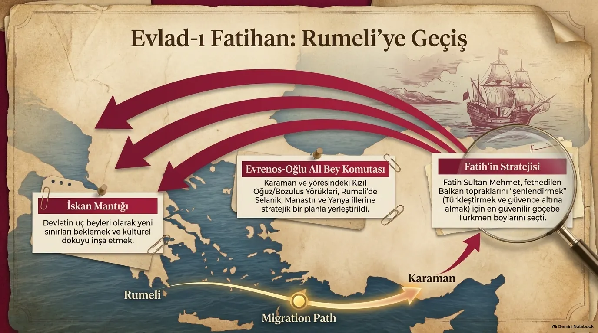
Anadolu’dan Rumeli’ye aile hareketliliğini anlatan görsel not.
Ali Rıza Efendi’nin hattı: Kocacık’tan Selanik’e
Baba tarafındaki çizgi bizi Rumeli’nin başka bir noktasına, Manastır Vilayeti’nin Debre-i Bala Sancağı içindeki Kocacık bölgesine götürür.
Kocacık, Osmanlı döneminde Anadolu’dan Rumeli’ye yerleştirilen Yörük ve Türkmen topluluklarının önemli yerleşimlerinden biri olarak anlatılır. Bölgeye ilişkin aile tarihi çalışmalarında Kocacık Yörükleri ve Kızıl-Oğuz adlandırmalarıyla karşılaşılır. Mustafa Kemal’in baba ailesinin de bu çevreyle bağlantılı olduğu yönündeki anlatı, aile tanıklıkları ve sonraki biyografik çalışmalarda güçlü biçimde tekrarlanır.
Mustafa Kemal’in baba tarafından dedesi kaynaklarda çoğunlukla Kızıl Hafız Ahmet Efendi —bazı aktarımlarda Kırmızı Hafız Ahmet Efendi— adıyla geçer.
Buradaki “Kızıl” sözcüğünün kaynağı konusunda iki farklı aile anlatısı vardır. Birinde lakabın Ahmet Efendi’nin kızıl saç ve sakalından geldiği söylenir. Diğerinde ise ad, ailenin Kızıl-Oğuz olarak tanımlanan Yörük/Türkmen topluluğuyla bağlantısına bağlanır. Bugün bunlardan birini kesin biçimde diğerinin yerine koymak güçtür. Ancak her iki anlatının ortak noktası aynıdır: aile hafızası baba tarafını Kocacık ve Rumeli Yörüklüğü ile ilişkilendirmektedir.
Mustafa Kemal’in çocukluk çevresinden Hacı Mehmet Somer’in Kocacık’a ilişkin anlatısı da dikkat çekicidir. Somer, bölge halkını Türkçe konuşan, hayvancılık ve kerestecilikle uğraşan ve yaşam biçimleri Anadolu Türkmenlerini hatırlatan bir topluluk olarak tasvir eder. Numan Kartal üzerinden aktarılan yerel aile anlatıları ise Kocacık içindeki daha küçük aile kollarına kadar uzanır.
Bütün bu ayrıntıların içinde önemli olan, kusursuz bir Orta Çağ soyağacı üretmek değildir. Daha anlamlı olan sürekliliktir: Anadolu → Rumeli → Kocacık → Selanik.
Ali Rıza Efendi bu hareketliliğin artık şehirleşmiş kuşağındadır.
Selanik’te önce gümrük muhafaza teşkilatında görev yapmış, daha sonra kereste ticaretine yönelmiştir. Dolayısıyla onu yalnız “Mustafa Kemal’in babası” olarak görmek de eksiktir. Ali Rıza Efendi, 19. yüzyılın ikinci yarısında dönüşen Osmanlı toplumunun tipik fakat ilginç bir temsilcisidir: devlet hizmetini bilen, ticaret yapan ve ailesini hızla modernleşen büyük bir liman kentinde yaşatan bir şehir insanı.
1871’de Zübeyde Hanım’la yaptığı evlilik, Kökler bölümünün iki ayrı çizgisini aynı noktada birleştirir.
Langaza’dan gelen Sofuzade ailesi ile Kocacık hafızasını taşıyan Ali Rıza Efendi ailesi artık Selanik’te tek bir hanedir.
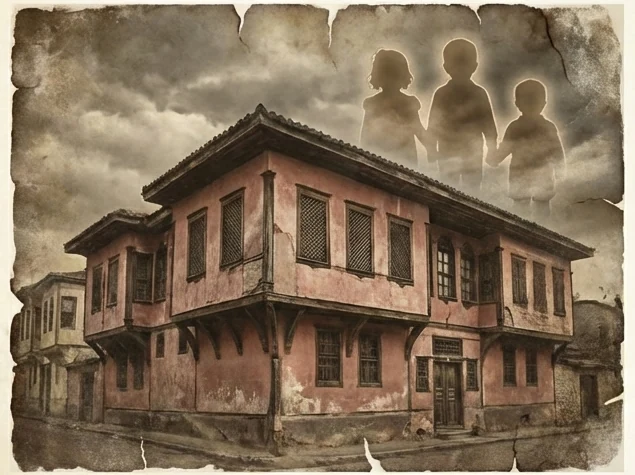
Selanik bağlamı: aile ve şehir hafızası.
Selanik: yalnız doğduğu şehir değil
Mustafa Kemal’in ailesini anlamak için Selanik’i yalnız doğum yeri olarak görmek yeterli değildir.
19. yüzyılın sonlarında Selanik, Osmanlı İmparatorluğu’nun en hareketli şehirlerinden biridir. Limanı sayesinde Akdeniz ve Avrupa ekonomisine açıktır. Müslümanlar, Yahudiler, Rumlar, Bulgarlar ve farklı Balkan toplulukları aynı şehirde yaşar. Avrupa ile ticaret, demiryolu, yeni eğitim kurumları, gazeteler ve siyasal fikirler burada imparatorluğun daha kapalı bölgelerine göre çok daha hızlı dolaşır.
Fakat aynı kozmopolit yapı başka bir gerçekliği de beraberinde getirir: Rumeli giderek daha gergin bir coğrafyadır.
Milliyetçilikler yükselmekte, Osmanlı otoritesi zorlanmakta, büyük devletlerin Balkanlar üzerindeki nüfuz mücadelesi sertleşmektedir. Kimlik artık yalnız aileden devralınan sessiz bir aidiyet değildir; zaman zaman siyasal bir meseleye, hatta hayat ve ölüm sorununa dönüşmektedir.
Volkan ve Itzkowitz’in aktardığı aile geçmişinde yer alan 1876 Selanik Olayı bu dünyanın ne kadar kırılgan olduğunu gösteren çarpıcı örneklerden biridir. İslamiyet’e geçmek istediği ileri sürülen genç bir Bulgar kadın çevresinde başlayan kargaşa sırasında Fransız ve Alman konsolosları öldürülmüş, olay kısa sürede uluslararası bir krize dönüşmüştür. Aile anlatısında Mustafa Kemal’in dedesi Ahmet Efendi’nin bu olayların ardından bir süre dağlık bölgelerde yaşamak zorunda kaldığı da aktarılır.
Mustafa Kemal henüz doğmamıştır. Bu nedenle bu olaydan onun kişiliğine doğru doğrudan psikolojik bir çizgi çekmek doğru olmaz.
Fakat sahneyi anlamak açısından son derece değerlidir.
Çünkü birkaç yıl sonra dünyaya gelecek çocuğun ailesinin geçmişinde göç, sınır, kimlik, devlet, toplumsal gerilim ve belirsizlik soyut kavramlar değildir. Bunlar Rumeli’de yaşayan insanların gündelik hayatının parçalarıdır.
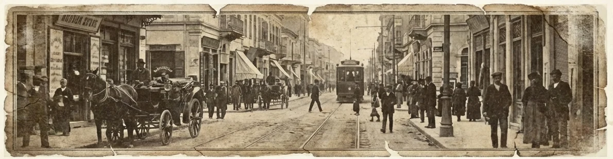
Selanik’in çok katmanlı kentsel çevresi.
İki ayrı kök, aynı eve açılıyor
Anne ve baba tarafının hikâyeleri birbirinden farklıdır.
Anne hattında Langaza’nın toprağı, çiftliği ve daha belirgin biçimde korunan Konyar-Yörük hafızası vardır.
Baba hattında Kocacık, Kızıl Hafız Ahmet Efendi, devlet hizmeti ve ardından Selanik’in ticaret hayatına katılan Ali Rıza Efendi görülür.
Fakat iki çizgi sonunda aynı yerde birleşir: Selanik.
Bu nedenle Mustafa Kemal’in köklerini anlatan en doğru görüntü belki bir soy ağacından çok bir haritadır.
Bir ucunda Anadolu vardır. Oradan Rumeli’ye geçen topluluklar… Sarıgöl ve Langaza… Kocacık ve Debre…
Ve sonunda Selanik.
Bu hikâye bize Mustafa Kemal’in daha doğmadan önce nasıl bir tarihsel mirasın içine geleceğini gösterir: Anadolu’yla bağını koruyan fakat kuşaklardır Rumeli’de yaşayan; kırsal köklerden gelen fakat büyük bir liman kentinde şehirleşen; geleneksel aidiyetini sürdüren fakat modern dünyanın kurumlarıyla temas eden bir aile.
Bütün bunlar henüz Mustafa Kemal’in kişiliği değildir. Kökler kader değildir. Fakat insanın hayatına başladığı ilk zemindir.
Ve Mustafa Kemal’in zemini, Osmanlı’nın en sakin köşelerinden birinde değil; Doğu ile Batı’nın, Anadolu ile Balkanların, gelenek ile modernleşmenin ve imparatorluk ile yükselen ulusçulukların birbirine temas ettiği Rumeli’deydi.
Bir sonraki bölümde hikâye artık coğrafyadan insana geçecektir.
Bu iki aile hattının birleştiği evde doğan Mustafa’nın çocukluk kayıpları, annesiyle ilişkisi, babanın erken yokluğu, okul seçimleri ve giderek bağımsızlaşan benliği üzerinden şu soruya yaklaşacağız:
Bu köklerin içinden nasıl bir Mustafa Kemal çıktı?
KAYNAKLAR
Bu bölümün kaynakları
1. Vamık D. Volkan & Norman Itzkowitz, The Immortal Atatürk: A Psychobiography, University of Chicago Press, 1984; Türkçe baskıları: Ölümsüz Atatürk / Atatürk–Anatürk. Aile geçmişi ve 1876 Selanik anlatısı için ilgili ilk bölümler.
2. Şevket Süreyya Aydemir, Tek Adam: Mustafa Kemal, Cilt I, Remzi Kitabevi. Aile, Selanik, Zübeyde Hanım ve Ali Rıza Efendi’ye ilişkin biyografik bölümler.
3. Ali Kuzu, Selanik’ten Ankara’ya Mustafa Kemal Atatürk, 2019, özellikle “Atatürk’ün Soyu” bölümü, s. 31–49. Eserde aile tanıklıkları ile Ali Güler’in Kocacık/Konyar araştırmaları birlikte aktarılmaktadır.
4. Ali Güler, “Atatürk’ün Soyu: Kızıl Oğuzlar (Kocacıklar) ve Konyarlar”; Mustafa Kemal’in anne ve baba ailelerinin Rumeli’deki Yörük/Türkmen kökenlerine ilişkin çalışma.
5. Atatürk Araştırma Merkezi, Atatürk Ansiklopedisi, “Ali Rıza Efendi” maddesi; Ali Rıza Efendi’nin aile kökeni, doğumu ve hayatına ilişkin bilgiler.
6. Derya Genç Acar, “Makbule Atadan’ın Atatürk’e İlişkin Anlattıkları Üzerine Bir Basın Taraması”, Atatürk Araştırma Merkezi Dergisi, 21/63 (2005), 1091–1111.
7. Makbule Atadan, Hacı Mehmet Somer ve dönemi bilen kişilerin aile kökenlerine ilişkin tanıklıkları; Şapolyo ve Ruşen Eşref Ünaydın üzerinden yayımlanan aktarımlar. Bu tanıklıklar Kuzu’nun çalışmasında toplu biçimde izlenebilir.
8. Kara Harp Okulu / Millî Savunma Üniversitesi, “Atatürk’ün Ailesi ve Kardeşleri”; Ali Rıza Efendi’nin meslek hayatı ve aileye ilişkin kurumsal biyografik bilgiler.
9. Feyziye Mektepleri Vakfı, “Soyağacı”; Kocacık ve Numan Kartal üzerinden aktarılan yerel aile bilgileri.
03 · KIŞILIK GELIŞIMI
Matem İçindeki Aileden Bağımsız Bir Benliğe
Bir çocuğun kayıp, ayrılık, eğitim ve kendi kararları içinden geçerek “Mustafa Kemal” oluşu
Mustafa Kemal’in çocukluğunu yalnızca “büyük bir liderin ilk yılları” olarak okuduğumuzda, geçmişi sonradan bildiğimiz sonuçlara göre düzenleme tehlikesiyle karşılaşırız. Oysa Selanik’te dünyaya gelen Mustafa’nın önünde henüz ne Çanakkale vardır ne Sakarya ne de Cumhuriyet.
Başlangıçta yalnızca bir çocuk vardır. Üstelik sıradan sayılmayacak kadar çok kayıp yaşamış bir ailenin içinde doğan bir çocuk.
Mustafa Kemal’in kişilik gelişimini anlamaya çalışan en sıra dışı eserlerden biri, psikiyatr Vamık D. Volkan ile Osmanlı tarihçisi Norman Itzkowitz’in 1984 tarihli The Immortal Atatürk: A Psychobiography adlı çalışmasıdır. Yazarlar klasik biyografinin çoğunlukla sorduğu “Ne yaptı?” sorusunun yanına başka bir soru koyarlar:
Bütün bunları yapan insanın iç dünyası nasıl oluşmuş olabilir?
Bu sorunun kesin bir cevabı yoktur. Psikobiyografi, arşiv belgesinin yapamayacağı bir şeyi yapmaya çalışır: çocukluk deneyimleri, aile anlatıları, kayıplar ve yetişkin davranışları arasında anlamlı örüntüler arar. Bu yüzden Volkan ve Itzkowitz’in ortaya koyduğu model, tarihsel bir “kanıtlar zinciri” değil, belgelenmiş olayları psikolojik bir kuram içinde yorumlama girişimidir. Nitekim çalışmanın bazı temel varsayımları daha sonra akademik olarak da eleştirilmiştir.
Fakat tam da bu nedenle eser değerlidir. Mustafa Kemal’i mermer bir heykelden çıkarıp yeniden bir insan olarak düşünmeye zorlar.
Hayatta kalan çocuk
Zübeyde Hanım ile Ali Rıza Efendi’nin altı çocuğu oldu: Fatma, Ömer, Ahmet, Mustafa, Makbule ve Naciye.
Ailenin çocuk ölümleriyle erken dönemde karşılaşmış olduğu tartışmasızdır. Fatma, Ömer ve Ahmet küçük yaşlarda hayatlarını kaybettiler; ailenin en küçük çocuğu Naciye de on iki yaşındayken veremden öldü. Altı kardeşten yalnız Mustafa ve Makbule yetişkinliğe ulaşabildi.
Volkan ve Itzkowitz bu aile atmosferini son derece çarpıcı bir kavramla anlatırlar: “ölüler evi.”
Onların ilgisini çeken yalnız çocukların ölmüş olması değildir. Asıl önemli gördükleri, kayıpların aile belleğinde yaşamaya devam etmesidir.
Özellikle Ahmet’in ölümünden sonra mezarının deniz tarafından açıldığı ve bedeninin çakallar tarafından parçalandığı yönündeki aile anlatısı dikkat çekicidir. Bu olayın ayrıntılarının tarihsel doğruluğundan çok, hikâyenin aile içinde tekrar tekrar anlatılmış olması önemlidir. Volkan açısından bu tür anlatılar, bitmemiş yasın aile hafızasında nasıl yaşayabildiğini gösterir.
Buradan psikobiyografinin ilk büyük hipotezi doğar.
Volkan ve Itzkowitz, Mustafa’nın daha önce kaybedilmiş çocukların ardından dünyaya gelmesi nedeniyle psikolojide “ikame çocuk – replacement child” adı verilen bir konuma yerleştirilmiş olabileceğini düşünürler.
İkame çocuk kavramı kabaca şunu anlatır: Bir çocuk öldüğünde, anne veya baba yeni doğan çocuğa farkında olmadan kaybedilen çocuğun anlamını, beklentisini veya duygusal yükünü taşıtabilir.
Bu durumda yeni çocuk yalnızca “kendisi” değildir. Ailenin kaybettiği şeyi de temsil etmeye başlayabilir.
Mustafa Kemal’in gerçekten böyle yaşandığını gösteren doğrudan bir belge yoktur. Üstelik Volkan–Itzkowitz’in çocukların ölüm kronolojisine dayanan bu yorumu daha sonra eleştirilmiştir. Bazı araştırmacılar, Mustafa doğduğu sırada kardeşlerinden en az birinin hâlâ hayatta olabileceğini ileri sürerek “ölüler evi” modelinin kronolojik temelini sorgulamıştır.
Bu nedenle burada önemli olan “Mustafa kesinlikle ikame çocuktu” demek değildir.
Daha ilginç olan şudur:
Mustafa’nın çocukluğunun çevresinde ölüm, kaybetme ve hayatta kalma temaları gerçekten vardı.
Ve çocuk büyüdükçe kayıp sona ermeyecekti.
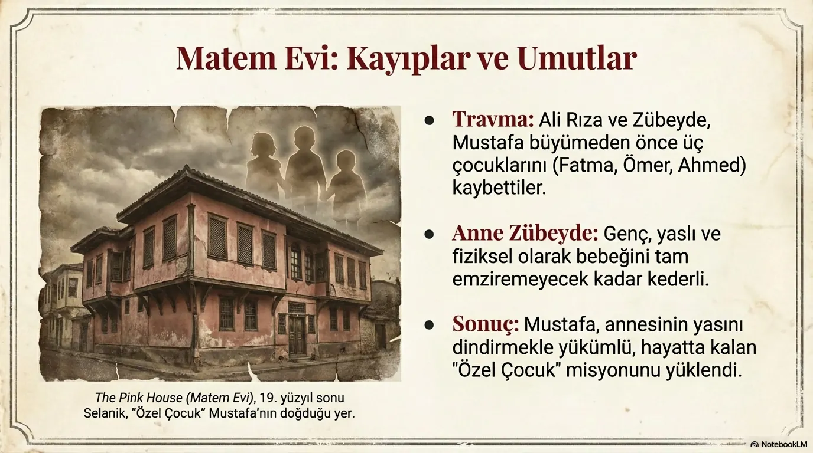
Aile kayıpları ve yas temasını görselleştiren arşiv notu.
İlk büyük kırılma: babanın ölümü
Mustafa yaklaşık yedi yaşındayken Ali Rıza Efendi öldü.
Bir çocuk için baba kaybının psikolojik anlamını yüz yılı aşkın bir zaman sonra kesin biçimde belirlemek mümkün değildir. Ancak bunun hayatın maddi düzenini değiştirdiğini biliyoruz.
Ali Rıza Efendi yalnız baba değildi. Ailenin ekonomik dayanağıydı; aynı zamanda Mustafa’nın eğitim yolunun belirlenmesinde Zübeyde Hanım’dan farklı bir tutum sergilemişti.
Zübeyde Hanım oğlunun geleneksel bir mahalle mektebinde başlamasını istemişti. Ali Rıza Efendi ise daha modern yöntemlerle eğitim veren Şemsi Efendi Mektebi’ni tercih etti. Mustafa’nın mahalle mektebindeki kısa döneminin ardından Şemsi Efendi okuluna geçmesi, onun hayatındaki ilk önemli eğitim yön değişimlerinden biri oldu. Gawrych, Şemsi Efendi’nin okulunu ezber yerine daha yeni öğretim yöntemlerine ve düşünmeye önem veren bir kurum olarak tanımlar.
Babanın ölümüyle bu düzen bir anda sona erdi.
Zübeyde Hanım ekonomik güçlükler nedeniyle çocuklarıyla birlikte kardeşi Hüseyin Ağa’nın Langaza çevresindeki çiftliğine gitti.
Mustafa artık Selanik’in okul ortamından uzaktaydı. Bir süre çiftlik hayatı yaşadı.
Bu dönem biyografilerde kısa geçilir; fakat bir çocuğun gelişimi açısından küçümsenmeyecek bir değişimdir. Şehirden kıra, düzenli eğitimden kesintiye, babanın bulunduğu bir evden dul bir annenin yönettiği yeni bir hayata geçiş…
Sonunda Mustafa’nın eğitiminin devam etmesi gerektiği düşüncesi ağır bastı ve yeniden Selanik’e gönderildi. Gawrych’in aktardığına göre bu süreçte yerel bir imamdan ve bir Rum Ortodoks rahipten de ders aldı; daha sonra Selanik’te akrabalarının yanında kalarak eğitimini sürdürdü.
Bu hareketlilik Mustafa’nın çocukluk dünyasında tekrar eden bir örüntü oluşturmuş görünür:
ev → kayıp → yer değiştirme → yeni çevre → yeniden uyum.
Bunu gelecekteki liderliğinin “nedeni” olarak göstermek bilimsel olmaz. Fakat kişiliğin oluştuğu ortamı tarif eder.
Annesine bağlı, fakat annesinden bağımsızlaşan çocuk
Mustafa ile Zübeyde Hanım arasındaki ilişkinin güçlü olduğu konusunda biyografiler büyük ölçüde birleşir.
Fakat ilişki yalnız yakınlık değildir. Aynı zamanda gerilim içerir.
Babanın ölümünden sonra Zübeyde Hanım’ın Ragıp Bey ile ikinci kez evlenmesi Mustafa açısından yeni bir kırılma oluşturdu. Ragıp Bey’in önceki evliliğinden çocukları da vardı. Mustafa yeni ev düzenine kolay uyum sağlayamadı; bir süre evden uzaklaşıp akrabalarının yanında kaldığı aktarılır.
Burada kişilik gelişimi açısından dikkat çekici bir paradoks vardır.
Mustafa annesine güçlü biçimde bağlıdır; fakat hayatının kritik kararlarında giderek annesinin iradesinden bağımsız hareket etmeye başlar.
Bu durum en açık biçimde meslek seçiminde ortaya çıkar. Zübeyde Hanım oğlunun asker olmasını istemez. Mustafa ise asker olmak ister.
Bunun nasıl başladığını kendisinin daha sonra anlattığı bir çocukluk hatırası açıklamaktadır. Komşuları Binbaşı Kadri Bey’in oğlu Ahmet’in askerî okul üniformasını görür. Sokaktaki subaylara dikkat etmeye başlar. O rütbelere ulaşmanın yolunun askerî okula girmekten geçtiğini öğrenir.
Sonunda 1893’te, yaklaşık on iki yaşındayken, annesinin açık isteğine rağmen Selanik Askerî Rüştiyesi’nin sınavına girer ve kazanır.
Bu karar küçük görünebilir. Fakat Mustafa’nın hayatında olağanüstü önemli bir eşiktir. Çünkü ilk kez geleceğinin yönünü belirleyen büyük bir kararı kendisi verir.
Askerlik daha sonra Mustafa Kemal’in yalnız mesleği olmayacaktır. Düzen, disiplin, eğitim, hiyerarşi, sorumluluk ve yükselme imkânının birleştiği yeni bir dünya sunacaktır.
Ailenin belirsizliklerinden farklı olarak burada açık bir yol vardır:
okul, sınav, başarı, rütbe.
“Mustafa”dan “Mustafa Kemal”e
Selanik Askerî Rüştiyesi’nde matematik Mustafa’nın en güçlü derslerinden biri hâline geldi.
Burada hayatındaki en tanınmış isim değişikliği gerçekleşti.
Yaygın anlatıya göre matematik öğretmeni de Mustafa adını taşıyordu. Öğrencisinin başarısı ve olgunluğu nedeniyle ikisini ayırt etmek amacıyla ona “Kemal” adını ekledi.
“Kemal”, olgunluk veya yetkinlik anlamına geliyordu.
Bu anlatı güçlü biçimde yerleşmiştir; fakat kaynaklarda başka bir ihtimal daha bulunur: Mustafa’nın “Kemal” adını dönemin büyük vatan ve hürriyet şairi Namık Kemal’den etkilenerek kendisinin kullanmaya başlamış olabileceği de ileri sürülür. Gawrych her iki açıklamayı da kaydeder.
Hangisi doğru olursa olsun, isim zamanla son derece sembolik bir anlam kazanacaktır. Mustafa artık yalnız aile içinde büyüyen çocuk değildir.
Mustafa Kemal adında, başarısıyla çevresinden ayrışmaya başlayan bir öğrenci ortaya çıkmaktadır.
Fakat daha önemlisi, öğrenmenin onun hayatında bir kişilik özelliğine dönüşmeye başlamasıdır.
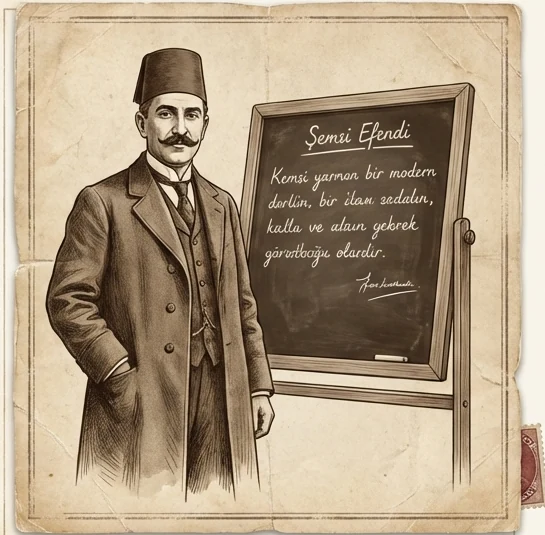
Şemsi Efendi: modern eğitimle karşılaşma.
Okul yalnız bilgi vermedi; yeni bir dünya açtı
Selanik Askerî Rüştiyesi’nden sonra Mustafa Kemal 1895’te Manastır Askerî İdadisi’ne geçti.
Manastır onun için yalnız başka bir okul değildi. Düşünsel dünyanın genişlediği yerdir.
Askerî okullar dönemin Osmanlı sistemindeki ilginç kurumlardı. Devlet modern subay yetiştirebilmek için matematik, fizik, coğrafya, tarih ve yabancı dil öğretmek zorundaydı. Fakat tam da bu eğitim, öğrencilerin Osmanlı İmparatorluğu ile Avrupa arasındaki farkları daha açık görmelerini sağlıyordu.
Johannes Glasneck bu çelişkiye dikkat çeker: modern bir ordu kurmak isteyen imparatorluk, istemeden modern dünyanın düşüncelerini okuyabilecek bir subay kuşağı da yetiştiriyordu.
Mustafa Kemal bu ortamda Fransızcasının yetersiz olduğunu fark etti. Bu ayrıntı önemlidir.
Çünkü sonraki hayatında sıkça karşılaşacağımız bir özellik burada erken biçimde görülür:
Eksik olduğunu fark ettiği bir alanı bırakmak yerine sistemli biçimde kapatmaya çalışır.
Yaz tatillerinde Selanik’te Fransızcasını geliştirmek için ek dersler aldı. Yabancı dil, onun önüne yalnız yeni sözcükler değil, yeni bir düşünce dünyası açtı.
Fransız düşünürlerini, siyasal fikirleri ve devrim tarihini okumaya başladı. Glasneck; Voltaire, Montesquieu, Rousseau ve dönemin siyasal literatürünün genç subay kuşağı üzerindeki etkisine işaret eder.
Aynı yıllarda Namık Kemal’in vatan ve hürriyet fikri, Mehmet Emin’in Türk kimliğini öne çıkaran şiirleri ve Osmanlı’nın giderek ağırlaşan siyasal krizi genç Mustafa Kemal’in düşünce dünyasına giriyordu.
Böylece çocuklukta üniformaya duyulan ilgi, yavaş yavaş daha büyük bir soruya dönüşmeye başladı:
Bu devlet neden geriliyor ve onu kurtarmak için ne yapılabilir? Bu soru artık yalnız askerlikle ilgili değildir. Bir zihinsel projenin başlangıcıdır.
Volkan’ın en provokatif sorusu: “Kurtarıcı” nereden doğdu?
Volkan ve Itzkowitz, Mustafa Kemal’in yetişkin hayatında tekrar tekrar görünen “kurtarma” temasına özel önem verir.
Önce ordunun kurtarılması… Sonra devletin… Anadolu’nun… Bağımsızlığın…
Ve sonunda eski düzenin içinden yeni bir toplumun kurulması. Psikobiyografik yorum burada oldukça iddialıdır.
Volkan, çocuklukta yas içindeki anneye yönelik onarıcı duygular ile ileride “kederli vatanı kurtarma” misyonu arasında psikolojik bir süreklilik kurulabileceğini ileri sürer.
Bu bağlantıyı tarihsel bir gerçek gibi almak doğru değildir.
Bir çocuk annesini teselli etmek istedi diye otuz yıl sonra bir bağımsızlık savaşı yönetmez.
Tarih böyle işlemez.
Fakat Volkan’ın sorusu yine de düşünmeye değerdir: Mustafa Kemal’in kendisini yalnız başarılı olmaya değil, bozulmuş olanı düzeltmeye yönelten güçlü görev duygusunun psikolojik köklerinde neler vardı?
Belki asıl verimli nokta da budur.
Kesin bir cevap vermek değil; yetişkin Mustafa Kemal’in sürekli tekrar eden bazı davranışlarının ne kadar erken oluşmaya başladığını görmek.
Askerî okul yıllarındaki Mustafa Kemal.
Burada ortaya çıkan kişilik
Çocukluk ve ilk gençlik yıllarından tek bir “kişilik formülü” çıkarmaya çalışmak doğru olmaz.
Yine de kaynakların yan yana getirildiğinde gösterdiği bazı çizgiler vardır. Mustafa Kemal kayıplarla karşılaştı ama içine kapanıp orada kalmadı. Babasını kaybetti; eğitimine başka yollarla devam etti. Çiftliğe gitti; yeniden şehre döndü.
Annesine derinden bağlıydı; fakat kritik bir meslek kararında annesine karşı çıkabildi. Fransızcası yetersizdi; geliştirmeye çalıştı. Askerî okul yalnız kendisine sunulan bir yol değildi; o yolu aktif biçimde seçti. Bu noktada henüz “Atatürk” yoktur.
Henüz savaş kazanmış bir komutan da yoktur. Fakat artık çocuklukta olayların sürüklediği Mustafa’dan giderek uzaklaşıyoruz. Yerine, kendi yönünü belirlemeye başlayan Mustafa Kemal geliyor. Kişilik gelişiminin belki en önemli tarafı budur.
Bağımsızlık, onun hayatında yalnız ileride savunacağı siyasal bir kavram olmayacaktır. Önce kendi hayatında uyguladığı bir davranış biçimi hâline gelmiştir.
Çocukluk açıklama değildir; başlangıçtır
Psikobiyografinin en büyük tehlikesi, büyük bir insanın bütün hayatını çocukluğundaki tek bir olayla açıklamaktır.
Mustafa Kemal’i “ikame çocuktu, o nedenle kurtarıcı oldu” gibi tek çizgili bir formüle indirgemek hem tarih hem psikoloji açısından yetersizdir.
Volkan–Itzkowitz çalışmasını daha değerli kılan biçimde okumak gerekir:
bir hüküm olarak değil, bir mercek olarak.
Ailenin kayıpları, babanın erken ölümü, çiftlik dönemi, annenin ikinci evliliği, okul seçimindeki çatışma, askerî eğitimin sunduğu düzen ve genç yaşta gelişen öğrenme isteği birbirinden ayrı olaylardır.
Fakat bir araya geldiklerinde ilginç bir insan profili belirginleşir:
Kaybı görmüş ama kayıp karşısında edilgenleşmemiş; güçlü bağlar kurmuş ama bağımsız kalabilmiş; otorite içinde yetişmiş ama kendi kararını verebilmiş; eksiklerini fark etmiş ve kendisini sistemli biçimde geliştirmeye başlamış bir genç.
Bu noktadan sonra soru artık “Nasıl bir çocuktu?” değildir.
Yeni soru şudur:
Bu genç, kendisini bilinçli olarak nasıl inşa etti? Bir sonraki bölüm tam burada başlayacaktır.
04 · Kendini İnşa Eden Mustafa Kemal: okuduğu kitaplar, öğrendiği Fransızca, tuttuğu notlar, tartıştığı arkadaşları, Harbiye ve Harp Akademisi yılları ve kendi zihnini bir çalışma alanına dönüştüren genç subay.
KAYNAKLAR
Bu bölümün kaynakları
1. Vamık D. Volkan & Norman Itzkowitz, The Immortal Atatürk: A Psychobiography, University of Chicago Press, 1984; Türkçe baskıları: Ölümsüz Atatürk, Atatürk/Anatürk ve Atatürk’ün Psikanalitik Biyografisi. Bu bölümde özellikle aile kayıpları, “ölüler evi”, ikame çocuk ve onarıcı/kurtarıcı kimlik yorumları için temel kaynak olarak kullanılmıştır.
2. George W. Gawrych, The Young Atatürk: From Ottoman Soldier to Statesman of Turkey. Şemsi Efendi Mektebi, Ali Rıza Efendi’nin ölümü, Langaza dönemi, Zübeyde Hanım’ın ikinci evliliği, 1893’te Askerî Rüştiye’ye giriş ve “Kemal” adının kökenine ilişkin alternatif anlatılar için.
3. Şevket Süreyya Aydemir, Tek Adam: Mustafa Kemal, Cilt I. Çocukluk, aile yapısı, kardeşler, eğitim ve ilk gençlik yılları.
4. Johannes Glasneck, Kemal Atatürk ve Çağdaş Türkiye, Cilt I. Askerî okulların modern eğitim ortamı, matematik, Fransızca, Avrupa düşüncesi ve Manastır yıllarının düşünsel etkileri için.
5. Süleyman İnan, “‘Çocukluğumuza İnelim…’ Tarih Yazımında Psikobiyografiler: İyi Örneklerden Yöntemin Belirlenmesine,” Turkish History Education Journal, 5/2 (2016), 491–514. Psikobiyografinin yöntemsel sınırları için.
6. Osman Sabuncuoğlu, “Atatürk’ün Psikanalitik Biyografisine Karşıt Görüş” dizisi. Volkan–Itzkowitz’in “ikame çocuk / ölüler evi” yorumlarının kronolojik ve psikiyatrik eleştirisi için.
7. Kara Harp Okulu / Millî Savunma Üniversitesi, “Atatürk’ün Öğrenim Hayatı”; Şemsi Efendi Mektebi, çiftlik dönemi ve askerî eğitim hattına ilişkin kurumsal biyografik bilgiler.
04 · KENDINI İNŞA
Yetenekten Yönteme
Harbiye, Harp Akademisi, kitaplar, yabancı dil, arkadaşlar ve insanın kendi karakteri üzerinde çalışması
Bir önceki bölümde Mustafa’nın çocukluk ve ilk gençlik yıllarında giderek kendi kararlarını veren bir kişiliğe dönüştüğünü gördük. Fakat bağımsız bir karakter sahibi olmak ile tarih üzerinde etkili olabilecek bir insan hâline gelmek aynı şey değildir.
Arada başka bir süreç vardır:
Kendini yetiştirmek.
Mustafa Kemal’in gençlik yıllarına yakından bakıldığında belki de en çarpıcı özellik budur. Onun gelişimini yalnız “doğuştan zekâ”, “askerî deha” ya da “olağanüstü yetenek” gibi kavramlarla açıklamak kolaydır. Fakat kaynakların gösterdiği tablo bundan daha ilginçtir.
Karşımızda yalnız yetenekli bir öğrenci yoktur.
Kendisinde eksik gördüğü şeylerin üzerine giden, okuyan, not alan, yabancı dil öğrenen, tartışan, insanları gözleyen ve zamanla kendi karakterini bile bilinçli bir çalışma alanı hâline getiren genç bir Mustafa Kemal vardır.
Bu nedenle onun Harbiye yıllarını yalnız eğitim hayatının bir basamağı olarak değil, bir insanın kendisini inşa etmeye başladığı laboratuvar olarak okumak daha açıklayıcıdır.
İstanbul: askerî öğrenciden entelektüel subaya
Mustafa Kemal 1899’da İstanbul’daki Harp Okulu’na girdiğinde on sekiz yaşındaydı.
Manastır’daki yıllar ona askerlik mesleğinin temel dünyasını, edebiyat ve siyasal düşünceyle ilk ciddi karşılaşmalarını vermişti. İstanbul ise bu dünyayı büyüttü.
Harp Okulu yalnız askerî eğitim veren bir kurum değildi. Taktik, topografya, matematik, silah bilgisi ve askerî yazışma gibi alanların yanında yabancı dil eğitimi de vardı. Edward J. Erickson, Mustafa Kemal’in buradaki başarısının erken dönemde fark edildiğini; okula kabulünden kısa süre sonra öğrenci çavuş yapıldığını ve Fransızca konusundaki ilerlemesinin yabancı dil yeterliliğini gösteren özel bir işaret taşımasına kadar ulaştığını aktarır.
Akademik başarısı yüksekti. Harp Okulu’nu sınıfının üst sıralarında tamamladı ve kurmay subay yetiştiren Harp Akademisi’ne girme hakkını kazandı. Ali Güler’in arşiv kayıtlarından aktardığı not çizelgeleri, Mustafa Kemal’in yalnız birkaç “sevdiği” derste değil; matematikten askerî yazışmaya, taktikten harp tarihine ve yabancı dile uzanan geniş bir program içinde başarılı olduğunu gösterir.
Fakat asıl dikkat çekici olan notlarının yüksekliği değildir. Aynı yıllarda ders programının dışında yaptığı şeylerdir.
Mustafa Kemal askerliği öğrenirken aynı anda başka bir eğitime daha başlamıştı:
Dünyayı anlamaya.
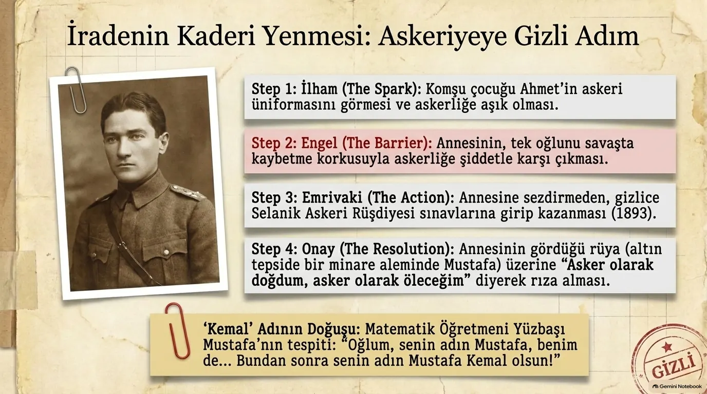
İradenin kadri: kişisel gelişim ve çalışma disiplini.
Ders kitabı yetmiyordu
Onun çevresindeki genç subay adaylarının önemli bir bölümü imparatorluğun durumunu tartışıyordu. Abdülhamid yönetimi, Balkanlardaki milliyetçi hareketler, Avrupa devletlerinin baskısı, ordunun durumu, özgürlük ve anayasa gibi meseleler artık yalnız siyasetçilerin konusu değildi.
Mustafa Kemal de bu tartışmaların içindeydi.
Arkadaşlarının anılarında sık sık benzer bir görüntü belirir: Dersler tamamlandığında Mustafa Kemal’in zihinsel faaliyeti tamamlanmıyordu.
Namık Kemal’in şiirlerini okuyordu. Hatta arkadaş tanıklığına göre Namık Kemal’in şiirlerini bir defterde toplamıştı; bu şiirler daha sonra arkadaşlar arasında da elden ele dolaşmıştı. Vatan, millet ve Türklük üzerine konuşuyor; çevresindeki öğrencilerle ülkenin geleceğini tartışıyordu.
Burada önemli olan yalnız hangi yazarları okuduğu değildir. Okuduklarını sosyal bir faaliyete dönüştürmesidir. Kitap → düşünce → tartışma. Bu döngü Mustafa Kemal’in hayatı boyunca tekrar edecektir.
Bilgiyi yalnız depolayan bir okuyucu olmayacaktır. Bir fikri okur, kendi şartlarıyla karşılaştırır, başkalarıyla tartışır, kabul eder veya eleştirir ve sonunda uygulama alanına taşır.
George Gawrych’in yıllar sonra onun düşünme biçimini tarif ederken vurguladığı temel özelliklerden biri de budur: ayrıntıya dikkat ederken büyük resmi kaybetmemek; teoriyi pratikten ayırmamak ve bilgiyi sonunda eylem için kullanmak.
Bu zihinsel alışkanlığın başlangıçlarını genç öğrencide görmek mümkündür.
Fransızca: bir ders değil, yeni bir dünyanın anahtarı
Mustafa Kemal’in kendi kendini geliştirme biçimini belki en açık gösteren örneklerden biri Fransızcadır.
Manastır döneminde Fransızcasının yeterli olmadığını fark etmişti. Bunun üzerine yaz tatillerinde Selanik’teki kurslara devam ederek dili geliştirmeye çalıştı. Harbiye döneminde de bu çabayı sürdürdü.
Ali Fuat Cebesoy’a dayanan anlatılarda Mustafa Kemal’in Beyoğlu’nda Fransız bir kadından ders aldığı ve bu çevre üzerinden Paris’te yayımlanan bazı gazetelere ulaşabildiği aktarılır. Aynı tanıklık, sınıfın en iyi Fransızca bilen öğrencilerinden birinin Ali Fuat olduğunu, Mustafa Kemal’in de dili geliştirmek için özellikle çalıştığını belirtir.
Bu ayrıntının değeri şuradadır:
Mustafa Kemal Fransızcayı yalnız okuldan iyi not almak için öğrenmiyordu. Başka dünyaların bilgi kaynaklarına ulaşmak için öğreniyordu. Fransızca geliştikçe erişebildiği düşünce evreni genişledi.
Fransız Devrimi, Aydınlanma düşüncesi, siyasal rejimler, toplum sözleşmesi, özgürlük, egemenlik ve yurttaşlık tartışmaları artık yalnız başkalarının aktardığı fikirler değildi.
Kaynaklar genç Mustafa Kemal’in Voltaire, Montesquieu ve Rousseau gibi düşünürlerin fikirleriyle karşılaştığını aktarır. Johannes Glasneck özellikle Montesquieu’nün iktidarın sınırlandırılması ve Rousseau’nun halk egemenliği düşüncelerinin genç subay kuşağı için Abdülhamid yönetimine alternatif bir siyasal tahayyül oluşturduğunu vurgular.
Burada yine dikkatli olmak gerekir.
Mustafa Kemal’in sonraki bütün siyasal sistemini bir veya birkaç Fransız düşünürden “aldığını” söylemek doğru değildir.
Daha anlamlı olan başka bir şeydir:
Zihnine yeni karşılaştırma araçları giriyordu. Osmanlı sistemi artık yalnız kendi iç mantığıyla değerlendirilmiyordu.
Fransa vardı. Amerikan deneyimi vardı. Devrimler vardı. Farklı yönetim sistemleri vardı. Avrupa orduları ve askerî teorileri vardı.
Bir insan yalnız daha çok bilgi edinmiyor; dünyayı karşılaştırarak düşünmeyi öğreniyordu.
Arkadaş çevresi: bir liderin ilk düşünce laboratuvarı
Mustafa Kemal’in gençlik çevresinde daha sonra Osmanlı’nın son döneminde ve Cumhuriyet’in kuruluşunda önemli roller üstlenecek pek çok isim vardı.
Ali Fuat Cebesoy, Fethi Okyar, Nuri Conker, Kazım Özalp ve başka subay adayları bu kuşağın içindeydiler. Erickson özellikle bu yakın arkadaş çevresinin Harbiye döneminde oluştuğunu belirtir.
Bu arkadaşlıkları yalnız kişisel ilişkiler olarak görmek eksik kalır. Aynı zamanda düşünsel bir ağ oluşuyordu.
Memleket meseleleri tartışılıyor, yasaklı veya sakıncalı kabul edilen metinler okunuyor, şiirler paylaşılıyor, yönetimin eleştirisi yapılıyordu.
Mustafa Kemal bu çevrede yalnız dinleyenlerden biri değildi.
Arkadaş tanıklıklarına göre konuşuyor, insanları etkiliyor ve fikirlerini yaymaya çalışıyordu. Harp Okulu/Harp Akademisi yıllarında el yazısıyla bir gazete çıkarma girişiminde yer aldığı; ülke yönetimindeki sorunlar üzerine yazılar yazıldığı aktarılır.
Bunun daha sonraki Mustafa Kemal açısından önemi büyüktür. Henüz orduları yönetmiyor. Henüz bir siyasal hareketin başında değil.
Fakat şimdiden küçük ölçekte aynı becerileri deniyor:
bir sorunu tanımlamak, fikrini oluşturmak, onu söze ve yazıya dönüştürmek, başkalarını ikna etmeye çalışmak,
çevresinde bir düşünce ağı kurmak. Liderlik önce küçük ortamlarda prova edilir. Harbiye, Mustafa Kemal için biraz da böyle bir yerdi.
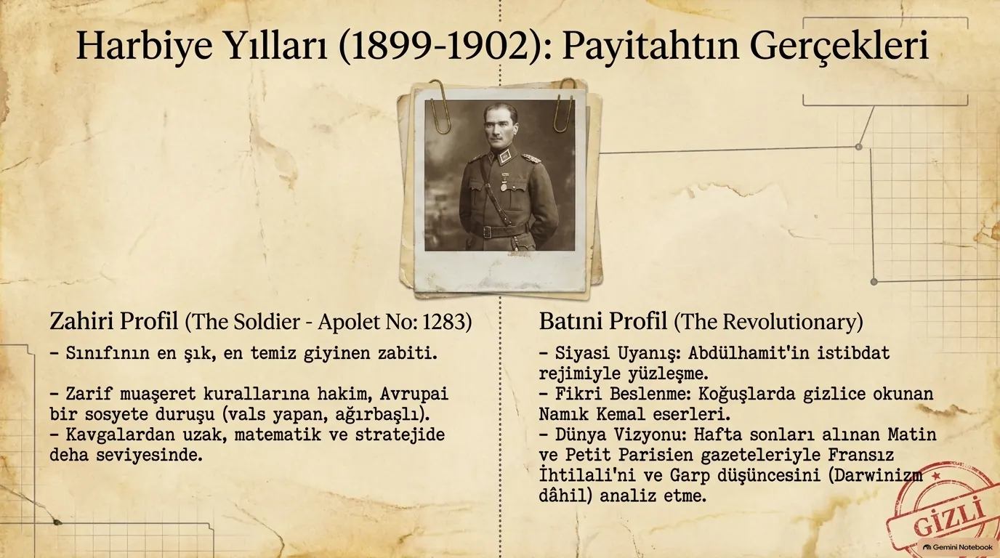
Harbiye yılları ve düşünsel çevre.
Harp Akademisi: savaşın yalnız cephede öğrenilmediği yer
1902’de Harp Okulu’ndan mezun olduktan sonra Mustafa Kemal Harp Akademisi’ne geçti. Burada artık amaç yalnız iyi bir subay yetiştirmek değildi. Kurmay subay, birlik hareketlerinin ötesinde düşünmek zorundaydı.
Coğrafya, lojistik, istihbarat, harp tarihi, taktik, askerî planlama ve komuta meselelerini birlikte değerlendirmesi gerekiyordu.
Ali Güler’in aktardığı birinci sınıf ders programında stratejik coğrafya, harp tarihi, teorik silah bilgisi, matematik, askerî yazışma, taktik, ünlü muharebelerin incelenmesi, topografya, keşif ve yabancı dil aynı eğitim sisteminin parçalarıdır.
Bu program aslında gelecekteki Mustafa Kemal’in düşünme biçiminin okuludur. Çünkü kurmaylık tek bir doğru cevabı ezberlemek değildir. Bir problemi birçok değişkenle birlikte çözmektir. Düşmanın niyeti nedir?
Arazi neye izin verir? İkmal ne kadar dayanır? Birliklerin morali nasıldır? Zaman kimin lehinedir?
Siyasi amaç nedir? Askerî hareket siyasi amaca hizmet ediyor mu?
Daha sonra Çanakkale’de, Sakarya’da ve Büyük Taarruz’da göreceğimiz kararların arkasında yalnız cesaret değil, yıllarca öğretilmiş ve sonra savaşlarda sınanmış bu kurmay düşünme biçimi vardır.
Mustafa Kemal, 11 Ocak 1905’te Harp Akademisi’nden kurmay yüzbaşı olarak mezun oldu. Edward J. Erickson, mezuniyet sıralamasını 43 kişi içinde beşinci olarak verir; bu nedenle burada kullanılan 5/43 bilgisi doğrudan Erickson’ın kaydına dayanmaktadır.
Fakat yine, sıralamadan daha önemli olan şudur:
Artık elinde yalnız askerî bilgi değil, problem çözmek için bir zihinsel sistem vardır.
Not defterleri: zihnin çalışma masasını görmek
Bir tarihçinin ulaşabileceği en ilginç belgelerden biri, bir insanın başkaları için değil kendisi için tuttuğu notlardır.
Mustafa Kemal’in not defterleri bu açıdan olağanüstü değerlidir.
Ali Mithat İnan, Genelkurmay Askerî Tarih ve Stratejik Etüt arşivinde korunan 24 defteri inceleyerek bunların genel bir dökümünü yayımlamıştır. İnan’ın özellikle vurguladığı nokta, bu defterlerin resmî nutuklar veya sonradan hazırlanmış hatıralar değil; çeşitli dönemlerde alınmış kişisel notlar, günlük parçaları, gözlemler ve çalışma kayıtları içermesidir.
Bu nedenle defterler bize Mustafa Kemal’in yalnız ne düşündüğünü değil, nasıl çalıştığına dair izleri de gösterir.
Bir cümle dikkatini çektiğinde kaydeder. Bir kavram üzerinde durur. Okuduğu kitaptan parçalar çıkarır. Askerî meseleyi not eder.
İnsanlara ve topluma ilişkin gözlemler yapar. Bazen kendi özel hayatını yazar. Bazen bir devlet meselesini. Zihin sürekli malzeme toplamaktadır.
Bu çalışma biçimi önemlidir çünkü Mustafa Kemal’i “her şeyi bir anda gören dahi” kalıbından uzaklaştırır.
Gerçek tablo daha güçlüdür:
Okuyan, not alan, düşünen, tekrar değerlendiren ve yıllar boyunca zihinsel sermaye biriktiren bir insan.
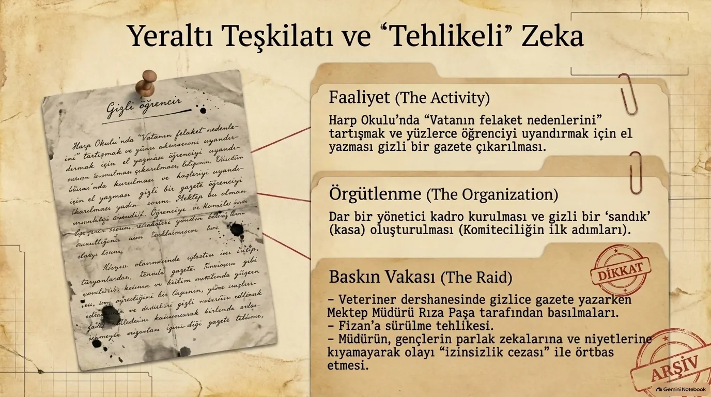
Yeraltı örgütlenmesi ve siyasî uyanışa ilişkin görsel not.
Suriye’de bir çadır ve Benjamin Franklin
Bu kendini geliştirme alışkanlığının belki de en şaşırtıcı belgesi 1907 yılına aittir. Mustafa Kemal o sırada genç bir subaydır ve Suriye’dedir.
İstanbul’un kütüphanelerinden, salonlarından ve rahatlığından uzakta, bir çadırda okumaktadır.
George Gawrych’in incelediği defterlerde o dönemde Mustafa Kemal’in okuma listesinin ne kadar geniş olduğu görülür: Shakespeare’in Romeo and Juliet’i, Amerika üzerine bir çalışma ve Rousseau’nun insanlar arasındaki eşitsizlik üzerine eseri gibi birbirinden çok farklı metinler yan yana yer alır.
Fakat içlerinden biri özel biçimde dikkatini çeker. Benjamin Franklin.
Kasım 1907 tarihli notlarında Mustafa Kemal, Franklin hakkında hazırlanmış 79 sayfalık bir çeviriyi okur. Franklin’i bilim, matbaacılık, yazarlık, diplomasi ve Amerikan bağımsızlığındaki rolüyle ele alır.
Ardından Franklin’in ünlü on üç erdemini defterine geçirir. Ölçülülük. Sükût ve iyi dinleme. Düzen.
Kararlılık. Tasarruf. Çalışkanlık. Doğruluk.
Hakkaniyet. Sükûnet. İtidal. Temizlik.
Namus. Ve tevazu. Mustafa Kemal ilk on iki madde için açıklamalar yazar. On üçüncü madde olan tevazu için açıklama yazmaz.
Bu küçük boşluk daha sonra okuyucuya gülümsetici veya karakter analizine açık bir ayrıntı gibi gelebilir. Fakat onu psikolojik bir “kanıt” gibi yorumlamak doğru olmaz.
Asıl çarpıcı olan listeyi kopyalamış olmasıdır. Çünkü Franklin’in sistemi yalnız bilgiyle ilgili değildir. İnsanın kendi karakterini bilinçli olarak geliştirebileceği fikrine dayanır.
Gawrych de bu olayı böyle yorumlar: Genç Mustafa Kemal yalnız meslek bilgisini değil, kendi karakterini de geliştirmeye bilinçli biçimde önem vermektedir.
Bu, Mustafa Kemal’in biyografisindeki en öğretici ayrıntılardan biridir. Çünkü burada henüz Çanakkale kahramanı yoktur. Anafartalar Komutanı yoktur. Başkomutan yoktur.
Cumhurbaşkanı yoktur. Suriye’de bir çadırda, yirmili yaşlarının ortasında bir yüzbaşı vardır.
Ve o yüzbaşı, nasıl daha iyi bir insan olunabileceğine ilişkin başka bir insanın yöntemini defterine geçirmektedir.
Deha mı, disiplin mi?
Mustafa Kemal’in sonraki başarıları büyüdükçe geçmişi de kaçınılmaz biçimde efsaneleşti.
Büyük insanlara ilişkin anlatılarda bunun sık görülen bir sonucu vardır:
Sonradan elde edilen olağanüstü başarı, çocukluğa ve gençliğe geri yansıtılır.
Sanki kişi daha doğduğu anda gelecekte yapacağı her şeyi içinde hazır taşıyormuş gibi anlatılır.
Fakat belgeler başka ve daha insani bir Mustafa Kemal gösteriyor. Fransızcası başta yeterince iyi değildir. Çalışır. Batı siyasal düşüncesini bilmez.
Okur. Askerî teoriyi öğrenmesi gerekir. Akademiye girer ve çalışır. Fikirlerini yeterince yayamaz.
Arkadaşlarıyla tartışır, yazmaya girişir. Kendi karakterini nasıl geliştireceğini düşünür. Franklin’in erdemlerini not eder. Bu tablo onun yeteneğini küçültmez.
Tam tersine yeteneğin nasıl kapasiteye dönüştüğünü gösterir. Doğuştan gelen potansiyel ile tarihsel başarı arasında uzun bir çalışma vardır. Ve Mustafa Kemal’in hayatında bu çalışma açık biçimde görülebilir.
Tek bir alanda uzmanlaşmayan zihin
Gawrych’in Mustafa Kemal’in zihinsel gelişimine ilişkin önemli tespitlerinden biri, onun düşüncesinin zamanla disiplinler arası hâle gelmesidir.
Askerî teorinin yanında tarih vardır. Edebiyat vardır. Felsefe vardır. Siyasal teori vardır.
Psikoloji ve insan davranışı vardır. Toplum vardır.
Gawrych, onun yalnız ayrıntıları öğrenmekle kalmadığını; bu ayrıntılardan çıkarım yapıp daha büyük resmi görmeye çalıştığını vurgular. Teori ile uygulama arasındaki bağı özellikle önemser. Öğrenmenin amacı yalnız bilgi edinmek değildir; bilgi içselleştirilmeli, karar vermeyi güçlendirmeli ve sonunda uygulanmalıdır.
Bu özellik, ileride onun askerlikten devlet adamlığına geçişini anlamak açısından kritik olacaktır.
Çünkü yalnız askerî teknik bilen bir komutan savaş kazanabilir.
Fakat savaşın ardından hukuk, eğitim, ekonomi, kültür, diplomasi ve devlet sistemi üzerine düşünmeye başladığında başka türde bir zihinsel kapasite gerekir.
Mustafa Kemal bu genişliği bir gecede kazanmadı. Yıllar boyunca farklı alanları aynı zihinde bir araya getirdi.
Düşünmek yetmiyor: fikri sınamak
Genç Mustafa Kemal’in oluşumunda yalnız kitap yoktur. İnsan vardır. Tartışma vardır. Şehir vardır.
Ordu vardır. Siyasi baskı vardır. Ve çok geçmeden gerçek görev vardır. Bu nedenle onun öğrenme biçiminin yalnız teorik olmadığını söylemek gerekir.
Okuduklarını arkadaşlarıyla karşılaştırır. İnsanları gözler. Kendisinden daha iyi Fransızca bilenlerle temas eder. Farklı siyasi görüşleri dinler.
Harp tarihindeki vakaları inceler.
Ve subay olduğunda, okulda öğrendiği teoriyi gerçek ordunun sorunlarıyla karşılaştırmaya başlar.
Gawrych’in daha sonraki Mustafa Kemal için yaptığı değerlendirme aslında bu uzun sürecin özeti gibidir: yaşam boyu öğrenen, insanları ve hayatı inceleyen, ayrıntıdan çıkarım yapan, kapsamlı düşünmeye çalışan ve bilgiyi pratik sonuç üretmek için kullanan bir subay.
Bu yüzden Mustafa Kemal’in çalışma yöntemini tek kelimeyle “okumak” diye tanımlamak eksik kalır.
Daha doğru zincir şudur:
Oku → not al → karşılaştır → tartış → sorgula → sentezle → uygula. Biyografisinin ilerleyen dönemlerinde bu zincirin ölçeği büyüyecektir. Öğrenci odasındaki tartışmanın yerini karargâh toplantısı alacaktır. Defterdeki teorinin yerini harekât planı alacaktır.
Arkadaş çevresindeki ikna çabasının yerini Meclis alacaktır. Ama zihinsel çalışma biçiminde şaşırtıcı bir süreklilik görülecektir.
Kendini inşa ederken ülkeyi düşünmeye başlamak
Harp Akademisi yıllarında Mustafa Kemal’in düşüncesinde önemli bir değişim daha belirginleşir.
Kendi geleceği ile ülkenin geleceği birbirine yaklaşmaktadır. Artık yalnız “iyi bir subay olmak” yeterli değildir.
Arkadaşlarının aktardığı konuşmalarda devlet yönetimi, vatan, millet ve siyasal değişim giderek daha büyük yer tutar. Akademide, memleket yönetiminde ve siyasetinde sorunlar bulunduğunu fark ettiklerini Mustafa Kemal de daha sonra kendi anlatısında belirtmiştir.
Bu noktada genç Mustafa Kemal’in bütün Cumhuriyet programının 1902’de zihninde hazır olduğunu söylemek anakronizm olur.
Sonraki olayları geçmişe taşımamak gerekir.
Fakat başka bir şey açık biçimde görülüyor:
Sorusu büyümektedir.
Önce:
“Ben ne olacağım?”
Sonra:
“Nasıl iyi bir subay olabilirim?”
Ardından:
“Bu devlet neden bu durumda?”
Ve giderek:
“Ne yapılması gerekir?” Bir insanın kendini inşası böylece yavaş yavaş bir ülke problemine bağlanmaktadır.
En dikkat çekici miras: öğrenilebilir bir insan modeli
Mustafa Kemal’in gençlik yıllarından çıkarılabilecek en güçlü sonuç onun kusursuz bir genç olması değildir.
Öyle değildir.
Kaynaklar eğlence hayatından, içkiden, sigaradan, sosyal ilişkilerden ve zaman zaman çalışmalarını aksattığı dönemlerden de söz eder. Glasneck de gençlik yıllarının bu daha gündelik ve çelişkili taraflarını aktarır.
Bunun gizlenmesine gerek yoktur. Çünkü asıl ilginç olan kusursuzluk değildir. Gelişimdir. Kendisine hazırlanmış düz bir yol üzerinde yürüyen bir insan görmüyoruz.
Eksikleri olan, bazen dağılan, merak eden, hata yapan, yeniden çalışan ve kendi kapasitesini artırmaya devam eden bir genç görüyoruz.
Belki Benjamin Franklin defterinin en anlamlı yanı da buradadır.
Mustafa Kemal’in kendi yaşamına ilişkin örtük varsayımı şuna benzer:
İnsan tamamlanmış değildir. Kendisi üzerinde çalışabilir. Daha iyi düşünebilir. Daha iyi konuşabilir. Daha çok öğrenebilir.
Daha düzenli olabilir. Daha kararlı olabilir. Daha güçlü bir karakter geliştirebilir. Bu anlayış ileride yalnız kendisine uygulanmayacaktır.
Atatürk dönemindeki eğitim, kültür ve toplumsal dönüşüm politikalarının derininde de benzer bir insan tasavvurunu görmek mümkündür: birey ve toplum değiştirilemez bir kader değildir; eğitim ve kurumlar aracılığıyla geliştirilebilir.
Fakat o hikâye henüz ileridedir. Şimdilik elimizde genç bir kurmay yüzbaşı vardır.
Sıradaki sınav artık kitaplarda değil
1905’te Harp Akademisi’nden çıkan Mustafa Kemal eğitimli, başarılı ve siyasal meselelerle yakından ilgilenen genç bir kurmay subaydır.
Fakat okul başarısı ile gerçek komutanlık arasında büyük bir mesafe vardır. Bir harita üzerinde doğru harekâtı çizmek başka şeydir.
Gerçek savaşta, eksik bilgi altında, insanların hayatından sorumlu olarak karar vermek başka.
Kitaplardan Clausewitz okumak başka şeydir. Karşındaki düşmanın ne yapacağını tahmin etmek başka. Karakter üzerine Franklin’i okumak başka şeydir. Yenilgi, ölüm, baskı, yalnızlık ve sorumluluk karşısında o karakteri korumak başka.
Mustafa Kemal artık kendisini hazırlamıştır.
Bundan sonra hayat ona şu soruyu soracaktır:
Bu zihinsel ve karakter hazırlığı gerçek savaşlarda işe yarayacak mı?
Cevabı Libya’da, Balkanlar’da, Çanakkale’de, Kafkasya’da, Suriye’de ve sonunda Anadolu’da göreceğiz.
Bir sonraki bölümde artık öğrenciyi değil, sahadaki komutanı izleyeceğiz. Sonraki bölüm · 05 · GAZİ MUSTAFA KEMAL Asker Teori gerçeklikle karşılaştığında: savaşlar, yenilgiler, öğrenme, karar ve komuta
KAYNAKLAR
Bu bölümün kaynakları
1. George W. Gawrych, The Young Atatürk: From Ottoman Soldier to Statesman of Turkey. Mustafa Kemal’in yaşam boyu öğrenme yaklaşımı, disiplinler arası zihni, teori–pratik ilişkisi ve bilinçli karakter gelişimi üzerine temel kaynak.
2. George W. Gawrych, aynı eser, genç subaylık dönemi. Mustafa Kemal’in Kasım 1907’de Suriye’de Benjamin Franklin hakkında 79 sayfalık bir metni okuması, Franklin’in on üç erdemini defterine geçirmesi, tevazu maddesine açıklama yazmaması ve dönemin diğer okumaları için.
3. Ali Mithat İnan, Atatürk’ün Not Defterleri, Gündoğan Yayınları. Genelkurmay ATASE Arşivi’nde korunan 24 not defterinin tanıtımı ve Mustafa Kemal’in özel çalışma/not alma pratiğine ilişkin temel belge derlemesi.
4. Ali Güler, Selanik’ten Harbiye’ye Dâhi Atatürk. Harp Okulu ve Harp Akademisi eğitimi, dersler, notlar, başarı sıraları, Fransızca çalışmaları, Namık Kemal şiirlerinin deftere geçirilmesi, arkadaş çevresi ve gazete girişimine ilişkin bilgiler.
5. Edward J. Erickson, Mustafa Kemal Atatürk. Harp Okulu başarısı, öğrenci çavuşluğu, yabancı dil yeterliliği, arkadaş çevresi, Harp Akademisi ve 1905’te kurmay yüzbaşı olarak mezuniyet için.
6. Johannes Glasneck, Kemal Atatürk ve Çağdaş Türkiye, Cilt I. Genç Mustafa Kemal’in Fransız Aydınlanmasıyla teması, Harbiye’deki düşünsel ve sosyal çevresi ve erken siyasal faaliyetleri için tamamlayıcı kaynak.
7. Ali Fuat Cebesoy, Sınıf Arkadaşım Atatürk. Harbiye/Harp Akademisi arkadaş çevresi, Fransızca, Namık Kemal, vatan-millet tartışmaları ve genç Mustafa Kemal’e ilişkin doğrudan tanıklıklar.
05 · ASKER
Asker
Şam’dan Büyük Taarruz’a: muhalif genç kurmaydan başkomutana uzanan askerî ve siyasî öğrenme çizgisi
Mustafa Kemal’in askerî hayatını yalnız Çanakkale, Sakarya ve Büyük Taarruz üzerinden okumak kolaydır. Fakat bu bakış, onu büyük orduların başına gelmeden önce yetiştiren kritik yılları görünmez kılar. 1905’te kurmay yüzbaşı olarak mezun olduğunda ne tanınmış bir komutan ne de siyasî bir liderdi; ordunun çevre garnizonlarında görev yapan, mesleğini öğrenen ve aynı zamanda devletin gidişatına karşı giderek daha açık biçimde tavır alan genç bir subaydı.
Edward J. Erickson’ın dikkat çektiği gibi Mustafa Kemal’in askerî kariyerini sıra dışı yapan yalnız kazandığı savaşlar değildir. Takım ve bölük ölçeğinden tümen, kolordu, ordu ve sonunda başkomutanlığa kadar yükselen komuta deneyimi; gerilla savaşı, siper savaşı, geri çekilme, savunma ve stratejik taarruz gibi çok farklı savaş biçimleriyle birleşmiştir. Bu çeşitlilik, uzun bir öğrenme döneminin ürünüdür.
Bu nedenle aşağıdaki anlatı 1911’de değil, 1905’te başlar. Çünkü Trablusgarp’taki saha komutanlığını anlamak için önce Şam’daki genç kurmayı; 1919’daki siyasî kopuşu anlamak için de Abdülhamid rejimine ve ordunun siyasallaşmasına karşı aldığı erken pozisyonları görmek gerekir.
Soru şudur: Aynı insan, farklı krizlerde neden tekrar tekrar etkili olabildi? Cevap tek bir “deha anı”nda değil; yıllar boyunca biriken görev, itiraz, hata, saha tecrübesi ve karar disiplininde aranmalıdır.
Kurmay subay, muhalif ve reformcu: 1905–1911
Harp Akademisi’nden mezuniyetin hemen ardından Mustafa Kemal’in siyasî ilgisi meslek hayatıyla iç içe yürümeye başladı. Erickson, Akademi yıllarında Abdülhamid II yönetimine karşı gizli bir çevrede yer aldığını ve arkadaşlarıyla el yazması bir muhalefet gazetesi çıkardığını; mezuniyetten kısa süre sonra bu faaliyetlerin açığa çıkması üzerine Şam’daki Beşinci Ordu’ya gönderildiğini aktarır. Böylece genç kurmay, merkezin dışında bir göreve itilmiş olsa da siyasetten uzaklaşmadı.
1905–1906 döneminde Şam çevresinde arkadaşlarıyla Vatan ve Hürriyet adlı gizli oluşumu kurdu; Beyrut ve Yafa gibi merkezlerde benzer çevreler oluşturmaya çalıştı. Daha sonra usule aykırı bir izin düzenlemesiyle Selanik’e giderek burada da bir çekirdek kurdu. Bu girişim kısa ömürlüydü; Selanik’te daha güçlü örgütlenen İttihat ve Terakki hareketi Vatan ve Hürriyet’i gölgede bıraktı. Mustafa Kemal 1907’de Selanik’e tayin edildi ve 1908’de İttihat ve Terakki’ye sıradan bir üye olarak katıldı.
Bu yıllar, onu “devrimin merkezindeki adam” olarak göstermeye elverişli değildir; kaynaklar tam tersine İttihat ve Terakki’nin iç liderlik çevresinin dışında kaldığını gösterir. Ryan Gingeras da sonraki Cumhuriyet anlatılarının Mustafa Kemal ile İttihatçı liderlik arasındaki mesafeyi zaman zaman geriye doğru büyütmüş olabileceği uyarısını yapar. Bununla birlikte Mustafa Kemal’in ordunun parti siyasetinin aracı hâline gelmesine erken dönemde itiraz ettiği, bu görüşün çevresindeki pek çok subayla onu karşı karşıya getirdiği açıktır.
13 Nisan 1909’daki 31 Mart Vakası üzerine Rumeli’de oluşturulan Hareket Ordusu İstanbul’a yürüdüğünde Mustafa Kemal, Hüseyin Hüsnü Paşa’nın tümeninde kurmay başkanı olarak görev yaptı. Kaynaklarda görevin unvanı farklı biçimlerde aktarılabildiği için onu bütün Hareket Ordusu’nun tek kurmay başkanı olarak sunmak isabetli değildir; daha güvenli ifade, harekâtın ilk safhalarında önemli bir tümen kurmay görevi üstlenmiş olmasıdır.
1909 sonrasında askerlerin parti üyeliklerinden çekilmesini açıkça savunması, siyasî çevrelerle ilişkisini daha da zorlaştırdı. Buna karşılık askerî mesleğe ağırlık verdi; Alman eğitim metinlerini çevirdi, 1910’da Fransa’daki Picardie manevralarını izledi ve 1911’de kötü planlanmış tatbikatları eleştiren raporları nedeniyle bir kez daha üstleriyle sürtüştü. Erickson’ın “kişisel hırsı ve üstlerini eleştirmekteki sivri tutumu zaman zaman kariyerini kenara itti” yönündeki değerlendirmesi, bu dönemi romantikleştirmeden anlamaya yardımcı olur.
Böylece 1911’e gelindiğinde karşımızda yalnız iyi eğitimli bir kurmay yoktur. Gizli siyasî örgütlenmeyi, merkezden uzak görevi, kurum içi muhalefeti, ordu-siyaset gerilimini ve kurmay planlamayı yaşamış bir subay vardır. Trablusgarp, bu birikimin ilk kez gerçek savaş koşullarında sınanacağı yer olacaktır.
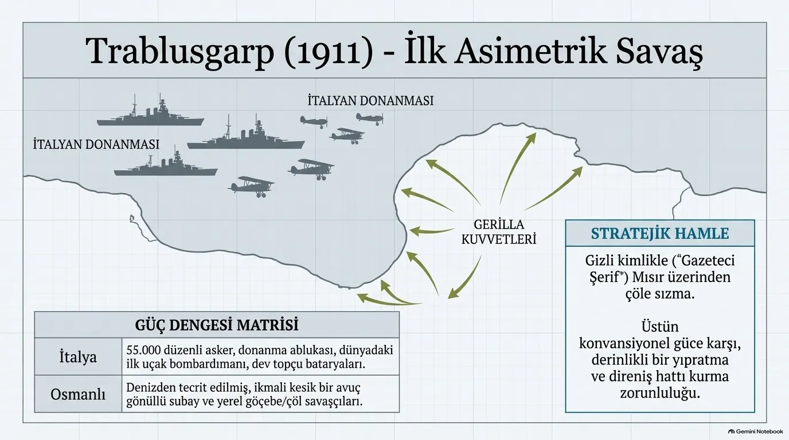
Trablusgarp: asimetrik savaş ve yerel örgütlenme.
İlk gerçek savaş okulu: Trablusgarp
1911’de İtalya Osmanlı Devleti’ne savaş açıp Trablusgarp’a saldırdığında Mustafa Kemal otuz yaşındaydı.
Osmanlı Devleti’nin Kuzey Afrika’ya düzenli ve büyük bir ordu göndermesi kolay değildi. İtalyan donanması denizi kontrol ediyordu. Bunun üzerine Mustafa Kemal, Enver ve başka genç subaylar bölgeye farklı yollarla geçerek yerel kuvvetleri örgütlemeye başladılar.
Mustafa Kemal 4 Ekim 1911’de İstanbul’dan ayrıldı. Mısır üzerinden uzun bir yolculuğun ardından Bingazi bölgesine ulaştı. Başlangıçta Tobruk çevresinde lojistik görev üstlendi; kısa süre sonra saha komutasına geçti. Aralık ayında Tobruk ve çevresinin komutanlığına, Şubat 1912’de ise Derne’deki kuvvetlerin komutasına getirildi.
Bu savaş Mustafa Kemal için Harp Akademisi’ndeki kurmay problemlerinden tamamen farklıydı. Karşısında sanayileşmiş bir Avrupa devletinin düzenli ordusu vardı.
Kendi kuvvetleri ise Türk subayları, sınırlı sayıdaki Osmanlı askeri, Senusi çevreleri ve yerel Arap aşiretlerinden oluşuyordu.
Silah azdı. İkmal zordu. Haberleşme sınırlıydı. Merkezden doğrudan kontrol neredeyse mümkün değildi.
Dolayısıyla Mustafa Kemal ilk kez şunu öğrendi:
Bir birlik yalnız emir verilerek yönetilemez. İnsanların güvenini kazanmak gerekir.
Yerel liderlerle ilişki kurmak, aşiret yapılarını anlamak, farklı unsurları aynı amaç etrafında tutmak ve sınırlı kaynakla direnmek zorundaydı. Daha sonra liderlik anlayışında sık sık karşımıza çıkacak olan “insanı tanıma” meselesinin sahadaki ilk büyük laboratuvarlarından biri Trablusgarp oldu.
Gawrych’in verdiği rakamlar savaşın asimetrisini gösterir. Derne çevresinde Mustafa Kemal’in elindeki düzenli kuvvetler son derece sınırlıyken binlerce yerel savaşçıdan yararlanılıyordu; karşılarında ise on binlerle ifade edilen İtalyan kuvvetleri vardı. Buna rağmen Osmanlı ve yerel kuvvetler İtalyanları uzun süre kıyı bölgesine sıkıştırmayı başardılar.
Burada henüz büyük stratejik zafer yoktur.
Ama önemli bir kazanım vardır:
Mustafa Kemal ilk kez bağımsız saha komutasını öğrenmektedir.
Balkan Harbi: yenilginin eğitici tarafı
Bir komutanı yalnız zaferleri yetiştirmez. Bazen yenilgi daha güçlü bir öğretmendir.
1912’de Balkan Harbi başladığında Osmanlı ordusu büyük bir askerî felaket yaşadı. Rumeli’nin önemli bölümü kısa sürede kaybedildi. Mustafa Kemal’in doğduğu Selanik 9 Kasım 1912’de Yunan ordusuna teslim edildi. Gawrych’in değerlendirmesiyle Balkan savaşları Osmanlı açısından yalnız toprak kaybı değil; ağır askerî, demografik ve psikolojik bir yıkımdı.
Mustafa Kemal Bolayır Kolordusu’nda harekât görevinde bulundu.
1913 Şubatındaki Bolayır–Şarköy harekâtı kötü koordinasyonun nasıl felakete dönüşebileceğini gösterdi. Plan kâğıt üzerinde anlamlıydı: Bolayır’dan yapılacak kara taarruzu ile Şarköy’deki çıkarma birlikte yürütülecek, Bulgar kuvvetleri iki yönden baskı altına alınacaktı.
Fakat uygulama çöktü. Zamanlama tutmadı. İki kolordu arasında koordinasyon kurulamadı.
Bolayır kuvvetleri açık arazide Bulgar savunmasına karşı erken saldırdı ve ağır kayıp verdi. Çıkarma kuvveti ise zamanında etkili olamadı.
Bu başarısızlık Mustafa Kemal’in askerî hayatındaki önemli fakat popüler anlatılarda az görülen bölümlerden biridir.
Çünkü bize büyük komutanın başka bir yüzünü gösterir:
Kötü çalışan bir sistemin içinde bulunmuş, plan ile uygulama arasındaki kopuşu bizzat yaşamıştır.
Fethi Okyar ile birlikte daha sonra hazırladıkları yeni planın dikkat çekici tarafı, askerî harekâtı yalnız birlik hareketleri üzerinden değerlendirmemeleridir. Edirne’nin düşmesinin askerî sonuçlarının yanında siyasî ve kamuoyu sonuçlarını da hesaba katmışlardır. Gawrych özellikle onların çözümü “akıl ve bilimsel gerçeklik” üzerinden savunduğunu vurgular.
Bu düşünce ileride Mustafa Kemal’in temel özelliklerinden biri olacaktır:
Savaş, siyasetten bağımsız bir faaliyet değildir.
Bir muharebe yalnız askerî açıdan değil, devletin daha büyük amacı açısından değerlendirilmelidir.
Çanakkale: şöhretin doğduğu yer
Mustafa Kemal’i Osmanlı ordusu içinde geniş ölçekte tanınan bir komutan hâline getiren savaş Çanakkale’dir.
1915 baharında 19. Tümen komutanıdır.
Tümeni genel ihtiyat kuvvetidir. Yani başlangıçta görevi belirli bir sahil kesimini doğrudan savunmak değildir; kritik bir tehdit oluştuğunda müdahale etmek üzere geride tutulmaktadır.
25 Nisan sabahı İtilaf kuvvetleri Gelibolu Yarımadası’na çıkarma yapmaya başladığında komuta kademesinde durumun tam olarak nerede kritikleştiği henüz açık değildir.
Mustafa Kemal üst komutanlarına ulaşmaya çalışır. Başaramaz.
Karşısında savaşın klasik problemi vardır:
Eksik bilgi + sınırlı zaman + geri döndürülemeyecek karar.
Elindeki en iyi birlik olan 57. Alayı yanına alır ve emir beklemeden Conkbayırı yönüne hareket eder.
Gawrych bu kararı çok iyi bir ifadeyle açıklar: Mustafa Kemal o anda “düşmanla değil araziyle savaşmayı” seçmiştir. Çünkü düşmanın sayısını tam bilmese bile yüksek arazinin ele geçirilmesinin yarımadanın kaderini değiştirebileceğini görmüştür.
Bu, kör cesaret değildir. Aynı kararın içinde ihtiyat da vardır.
Mustafa Kemal bütün 19. Tümeni bir anda ileri sürmez; bilgi yetersizken tüm ihtiyatı tüketmeyi aşırı riskli bulur.
İşte Çanakkale’deki kararın asıl değeri burada ortaya çıkar:
İnisiyatif ile ihtiyat aynı anda vardır. Ne “emir gelmeden hiçbir şey yapmam” der. Ne de “bütün kuvveti hemen sürerim.”
En kritik araziyi tutacak kadar kuvvet kullanır; fakat belirsizlik tamamen kalkmadan elindeki bütün kapasiteyi tüketmez.
Günün sonunda ANZAC kuvvetleri sahilde bir köprübaşı tutmayı başarmıştı; fakat yarımadanın içine doğru hedefledikleri derin ilerlemeyi gerçekleştirememişlerdi. Mustafa Kemal’in müdahalesi bu sonucu belirleyen önemli faktörlerden biri oldu.
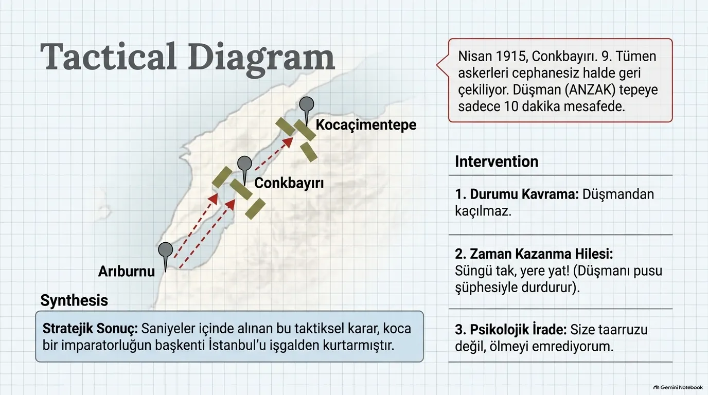
Taktik diyagram: kararın araziyle ilişkisi.
Anafartalar: sorumluluk büyüyor
Çanakkale’de Mustafa Kemal’in ikinci büyük sınavı Ağustos ayında geldi.
İtilaf kuvvetleri çıkmazı aşmak için yeni bir harekât başlattı. Anafartalar/Suvla bölgesine yeni kuvvetler çıkarıldı; Conkbayırı yeniden kritik hâle geldi.
8 Ağustos gecesi Liman von Sanders, Anafartalar bölgesindeki büyük kuvvet grubunun komutasını Mustafa Kemal’e verdi.
Ertesi gün cepheyi yeniden düzenlemeye başladı.
10 Ağustos sabahı Conkbayırı’nda yapılan karşı taarruzda saldırı gün doğmadan hemen önce, sessizlik içinde ve süngülerle başladı. Sürpriz sağlandı ve tepe yeniden ele geçirildi. İngiliz resmî harp tarihi bu karşı taarruzu dikkat çekici biçimde iyi planlanmış bir hareket olarak değerlendirdi.
Fakat Çanakkale’yi yalnız kahramanlık hikâyesine dönüştürmek Mustafa Kemal’i anlamayı zorlaştırır.
Aynı komutanın başarısız kararları da oldu.
Gawrych, özellikle 29–30 Haziran gecesi yapılan bir saldırının düşmanın niyetinin yanlış değerlendirilmesi nedeniyle ağır kayıpla sonuçlandığını aktarır. Bir alayın savaş gücü ciddi biçimde bozulmuştur.
Bu ayrıntı önemlidir.
Çünkü Mustafa Kemal’in askerî büyüklüğünü “hiç yanlış yapmadı” üzerinden kurmamıza gerek olmadığını gösterir.
Daha güçlü açıklama şudur:
Yanlış yapan, sonuçlarını gören, tecrübe biriktiren ve aynı hatayı düşünme sisteminin parçası hâline getiren bir komutan.
Çanakkale’den çıkan yöntem
1916’da Mustafa Kemal artık kolordu komutanıdır.
Edirne’de XVI. Kolorduyu hazırlarken subayları için yalnız yedi sayfalık kısa bir rehber yazar: taktik problemlerin nasıl çözüleceği ve emirlerin nasıl hazırlanacağına ilişkin bir metin.
Bu küçük belge Mustafa Kemal’in zihninin çalışma biçimini açığa çıkaran en değerli metinlerden biridir.
Bir taktik problemle karşılaşıldığında önce problem baştan sona birkaç kez ve “sükûnet-i fikir” içinde incelenmelidir.
Görev değerlendirilir. Durum değerlendirilir. Arazi değerlendirilir. Düşmanın ne yapabileceği düşünülür.
Hatta Mustafa Kemal subayın zihinsel olarak karşı tarafa geçmesini ve problemi düşmanın bakış açısından değerlendirmesini ister.
Sonra karar verilir. Ve karar verildikten sonra gereksiz tereddütle zayıflatılmaz. Emir ise kısa, açık, kesin ve emri uygulayacak kişinin anlayabileceği biçimde olmalıdır. Bu artık yalnız Çanakkale kahramanının sezgisi değildir.
Mustafa Kemal, kendi saha deneyimini bir karar verme yöntemine çevirmektedir.
Şema kabaca şöyledir:
Sükûnet → problemi bütünüyle gör → görevi ve araziyi değerlendir → rakibin yerine geç → karar ver → açık emir ver → uygula.
Daha sonra Sakarya’da aynı zihinsel çizginin çok daha büyük ölçekte karşımıza çıkması tesadüf değildir.
Kafkasya: zaferden önce birliği ayağa kaldırmak
1916’da Mustafa Kemal XVI. Kolordu ile Doğu Cephesi’ne gönderildiğinde durum parlak değildi.
Rus ordusu ilerliyordu. Bitlis ve Muş işgal edilmişti. Birlikler kayıp vermiş, morali bozulmuştu. Arazi son derece zordu.
Mustafa Kemal’in burada yaptığı şey yalnız karşı taarruz planlamak değildi. Önce savaşabilecek bir kuvvet yaratmak zorundaydı.
Gawrych özellikle 8. Tümenin ağır kayıpların ardından geri çekildiğini, Mustafa Kemal’in tümeni yeniden ikmal edip güçlendirdiğini ve yaklaşık on gün içinde yeniden taarruz yapabilecek duruma getirdiğini aktarır. 7 Ağustos’ta Muş, 8 Ağustos’ta Bitlis geri alındı.
Gawrych’e göre burada belki şehirlerin geri alınmasından bile daha önemli başarı, bozulan birliğin moralini yeniden kurup onu yeniden savaşabilir hâle getirmesidir.
Bu, komutanlığın başka bir boyutudur. Savaş planlamak başka şeydir. Savaşma iradesini kaybetmiş bir teşkilatı yeniden ayağa kaldırmak başka.
Mustafa Kemal’in ileride Millî Mücadele sırasında yapacağı şeyin askerî ölçekte erken bir örneğini burada görmek mümkündür.
Filistin ve Suriye: bazen en iyi karar geri çekilmektir
1918’de savaşın sonuna gelindiğinde Mustafa Kemal Yedinci Ordu Komutanlığına yeniden getirildi.
Karşısındaki durum neredeyse umutsuzdu.
Kâğıt üzerinde on binlerce askeri bulunan ordunun gerçek savaş gücü çok düşüktü. İnsanlar yetersiz besleniyor, hayvanlar güçsüz, birliklerde silah ve teçhizat eksikleri bulunuyordu.
19 Eylül’de General Allenby büyük taarruzunu başlattı.
İngiliz kuvvetleri kıyı kesiminde çok büyük insan ve ateş gücü üstünlüğü sağlamıştı. Cephe yarıldı ve Osmanlı ordularının önemli bölümü çözülmeye başladı.
Burada Mustafa Kemal’in görevi artık “zafer kazanmak” değildir.
Görev değişmiştir:
Ordunun yok olmasını engellemek. Yedinci Orduyu geri çekmeye başlar. Şam’ın ardından Halep yönünde geri çekilir. Takip eden düşman süvarilerine rağmen birlik bütünlüğünü korumaya çalışır.
Erickson bu geri çekilmeyi Mustafa Kemal’in askerî kariyerindeki en önemli başarılarından biri sayar. Onun değerlendirmesine göre, daha hareketli ve sürekli takip eden bir düşman karşısında düzenli geri çekilmek savaşın en zor operasyonlarından biridir; Mustafa Kemal neredeyse imkânsız koşullarda ordusunun önemli bölümünü savaşabilir bir teşkilat olarak korumayı başarmıştır.
Bu olay komutanlığının anlaşılması açısından Çanakkale kadar değerlidir. Çünkü burada zafer yoktur. Gösterişli bir saldırı yoktur. Zafer töreni yoktur.
Fakat durumu doğru kabul etme vardır. Başarı artık “mevzide kalmak” değildir. Başarı, ordunun gereksiz yere yok edilmesini önlemektir. İyi komutanlık bazen saldırma cesareti kadar geri çekilme cesareti gerektirir.
1919: askerlik artık tek başına yetmiyor
Mustafa Kemal’in askerî kariyerindeki en büyük dönüşüm Birinci Dünya Savaşı’nın sonunda gerçekleşti.
Artık problem yalnız cephede değildi. Devlet yenilmişti. İstanbul işgal altındaydı. Ordular dağıtılıyordu.
Anadolu’nun farklı bölgelerinde işgaller başlamıştı. Bu koşullarda Mustafa Kemal’in önündeki problem askerî harekâttan daha büyüktü.
Bir orduyu yönetebilmek için önce siyasî meşruiyet, insan gücü, para, lojistik, komuta sistemi ve ortak amaç gerekiyordu.
Gawrych’in Millî Mücadele analizinin güçlü yanı burada ortaya çıkar. Mustafa Kemal 1919–1921 arasında yalnız savaş planlamaz; siyaseti, diplomasiyi ve askerî gücü birlikte yönetir. TBMM meşruiyet sağlar. Düzenli ordu yeniden kurulur. Yerel kuvvetler sisteme bağlanır. Sovyet yardımı elde edilmeye çalışılır. Fransa ile diplomasi yürütülür.
Mustafa Kemal artık yalnız komutan değildir. Fakat henüz Cumhuriyet’in kurucusu da değildir.
İki kimlik arasında geçiş alanındadır:
askerî problemi siyasî sistem kurarak çözmeye çalışan lider.
Kütahya–Eskişehir: geri çekilmek ve zaman satın almak
1921 yazında Türk ordusu Kütahya–Eskişehir muharebelerinde geri çekilmek zorunda kaldı. Bu durum Ankara açısından ciddi krizdi. Ordu kayıp vermişti. Firarlarda artış vardı.
Önemli şehirler kaybedilmişti. Yunan ordusu Ankara yönünde ilerleyebilirdi. Mustafa Kemal’in verdiği kritik karar, ordunun Sakarya Nehri’nin doğusuna çekilmesiydi. Toprak kaybedilecekti.
Kamuoyunda bunun ağır etkisi olacaktı. Meclis tepki gösterebilirdi. Fakat ordunun mevcut yerde yıpranıp yok olması daha büyük riskti.
Burada Filistin’de öğrenilen zor ders yeniden karşımıza çıkar:
Arazi bırakılabilir; savaşma kapasitesi kaybedilmemelidir.
Gawrych, Mustafa Kemal ve Fevzi Çakmak’ın geri çekilme kararında yakın biçimde çalıştığını; ordunun Sakarya doğusunda yeniden düzenlendiğini aktarır.
Savaş henüz kazanılmamıştır. Ama ordu kurtarılmıştır. Ve zaman kazanılmıştır.
Sakarya: sükûnetin savaşı
Mustafa Kemal Başkomutan olarak Sakarya Meydan Muharebesi öncesinde orduya 20 Ağustos 1921 tarihli dikkat çekici bir emir yayımladı.
Bu emir yalnız mevzi tarif etmiyordu. İnsan zihnini tarif ediyordu.
Şiddetli çatışma anlarında komutanların görevlerini “itidal ve sükûnetle” yerine getirmelerini, kişisel duygu ve düşüncelerin genel durum üzerindeki muhakemelerini bozmamasını istiyordu.
Düşünün:
1916’da kolordu subayına söylediği şeyi, beş yıl sonra bütün bir ordunun komutanı olarak tekrar etmektedir.
Önce zihni sakinleştir. Durumu doğru gör. Sonra karar ver. Bu süreklilik önemlidir.
Çünkü Mustafa Kemal’in karar tarzının yalnız savaş anındaki içgüdüden oluşmadığını gösterir.
Kendisinin geliştirdiği bir düşünme disiplini vardır.
Sakarya’da Yunan ordusunun amacı Türk ordusunu yenip Ankara üzerindeki direnci sona erdirmektir.
Türk ordusunun ilk amacı ise aynı değildir. Mustafa Kemal’in stratejisi önce düşmanı durdurmak ve yıpratmaktır. Ardından uygun koşul ortaya çıktığında karşı taarruza geçilecektir.
Kazım Karabekir de düşmanı yıpratma ve kanatlara kuvvet yoğunlaştırma yönünde fikir gönderir. Mustafa Kemal bunun kendi planlarıyla uyumlu olduğunu belirtir; fakat Ankara’yı savunmak için önce güçlü bir muharebenin zorunlu olduğunu söyler.
Burada başka bir özellik ortaya çıkar:
Danışmak, otorite kaybı değildir. Mustafa Kemal Fevzi Çakmak’ın görüşünü ister. İsmet Paşa cephe komutasını yürütür. Komutanlardan sürekli bilgi gelir.
Mustafa Kemal nihai kararı verir; fakat karar bir boşlukta oluşmaz. Gawrych bunu “collective wisdom” — kolektif akıl — olarak değerlendirir. Bu nokta daha sonraki “liderlik sistemi” bölümümüzde ayrıca önem kazanacaktır.
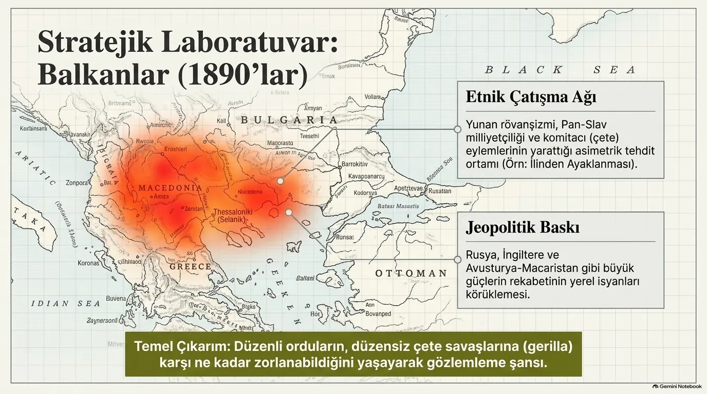
Stratejik laboratuvar: Balkanlar ve çıkarılan dersler.
Sakarya ile Büyük Taarruz arasındaki en önemli olay: beklemek
Sakarya kazanıldıktan sonra kamuoyu açısından en çekici hareket hemen büyük saldırıya geçmek olabilirdi.
Mustafa Kemal bunu yapmadı. Çünkü zafer coşkusu ile ordunun gerçek kapasitesi aynı şey değildir.
1921 sonbaharında büyük bir taarruz planlanmaya başladı. Afyon bölgesinde düşmana kesin darbe vurma fikri belirgindi. Fakat ordu henüz bu kadar büyük ve riskli bir harekâta hazır değildi.
İnsan gerekiyordu. Silah gerekiyordu. Mühimmat gerekiyordu. At gerekiyordu.
Lojistik gerekiyordu. Eğitim gerekiyordu. Komuta yapısının hazırlanması gerekiyordu.
1922 Martında Mustafa Kemal Meclis’in gizli oturumunda açık biçimde ordunun savunabilecek durumda olduğunu fakat henüz saldırıya hazır olmadığını söyledi. Ardından birlikleri denetlemeye devam etti.
Bu belki Mustafa Kemal’in askerî liderliğinin en az dramatik ama en önemli özelliklerinden biridir:
Doğru an gelmeden saldırmamak. Bazen karar, yapmak değildir. Beklemektir.
Büyük Taarruz: kuvveti her yere değil, sonucu belirleyecek yere koymak
1922 yazında hazırlık tamamlandığında Mustafa Kemal uzun süren bir dizi muharebe yerine daha riskli fakat sonuç alıcı bir seçenek seçti:
tek bir büyük harekâtla Yunan ordusunun ana kuvvetini yenmek. Bu karar başarısız olursa sonuç ağır olabilirdi. Yıllarca hazırlanmış ordu büyük kayıp verebilirdi. Diplomatik konum zayıflayabilirdi.
Savaş daha uzun sürebilirdi. Fakat başarılı olursa mesele askerî bakımdan kökten çözülebilirdi. Planın temel mantığı kuvvetin her yerde eşit dağıtılması değildi. Tam tersiydi.
350 kilometrelik cephe boyunca Türk kuvvetleri görünüşte geniş bir sahaya dağılmış olsa da asıl taarruz bölgesinde ciddi bir yerel üstünlük yaratıldı. Gawrych’in hesaplamasına göre Birinci Ordu, yaklaşık kırk kilometrelik kritik kesimde yaklaşık 110.000 askerle, karşısındaki yaklaşık 40.000 kişilik Yunan kuvvetine karşı üçe bire yaklaşan üstünlük sağlamıştı.
Bu stratejinin özü son derece basittir:
Her yerde güçlü olmaya çalışma. Sonucu belirleyecek yerde üstün ol. 26 Ağustos sabahı taarruz başladı. İlk gün her şey planlandığı gibi gitmedi. Bazı birlikler ilerleyemedi.
Bazı saldırılar gecikti. Bazı komutanlık kararlarının sahada düzeltilmesi gerekti.
Bu da önemli bir gerçeği gösterir:
Büyük Taarruz kusursuz işleyen bir makine değildi. Gerçek savaştı. Fakat sistem, sürtünmeye rağmen devam edebildi. 27 ve 28 Ağustos’ta Yunan kuvvetlerinde geri çekilme belirginleşince plan değiştirildi.
Artık yalnız cepheyi yarmak yeterli değildi.
Geri çekilen ana kuvvetin yeni bir savunma hattı kurmasına fırsat vermeden çevrilmesi ve imha edilmesi hedeflendi.
Mustafa Kemal, Fevzi Çakmak, İsmet İnönü ve ordu komutanları harekâtı yeni duruma göre yeniden düzenlediler.
Plan sabit kalmadı. Ama amaç sabit kaldı. Bu ayrım Mustafa Kemal’in komuta tarzını anlamak için önemlidir.
30 Ağustos: stratejist ayrıntıya baktığında
30 Ağustos’taki Dumlupınar muharebesi daha sonra Başkomutanlık Meydan Muharebesi adıyla anılacaktır.
Mustafa Kemal ön hatta, daha sonra Zafertepe adı verilen noktadan muharebeyi izliyor ve yönetiyordu.
Bu aşamada dikkat çekici bir olay yaşandı.
Bütün bir savaşın kaderini yöneten başkomutan, 11. Tümenin topçusunun piyadeye yeterli destek vermediğini fark etti.
Tümen komutanını çağırdı. Topçu ile piyade arasındaki bağlantının düzeltilmesini istedi.
Bu küçük olay Mustafa Kemal’in komutasındaki ilginç çelişkiyi gösterir:
Bir yandan yüzlerce kilometrelik stratejik tabloyu görmek. Öte yandan gerektiğinde tek bir tümenin topçu-piyade koordinasyonuna inmek.
Gawrych’in anlatısında aynı gün daha da büyük ölçekte Mustafa Kemal, Fevzi ve İsmet birlikte Yunan kuvvetlerini çevirmeye yönelik harekâtı yönetmektedir. Çevreleme tamamen kapanmadı; binlerce Yunan askeri gece oluşan açıklıktan kaçabildi.
Yani 30 Ağustos dahi kusursuz bir “tam imha” değildir. Fakat Yunan ana kuvvetinin savaş gücü parçalanmıştı. Bundan sonraki aşama takipti. Mustafa Kemal baskının kesilmesini istemedi.
Türk birlikleri batıya doğru hızla ilerledi. 9 Eylül’de İzmir’e ulaşıldı. 18 Eylül’e gelindiğinde Anadolu’daki büyük Yunan askerî varlığı sona ermişti.
Yenilen generale sorulan soru
Büyük Taarruz sonrasında yaşanan bir olay Mustafa Kemal’in zihinsel karakterini savaşın kendisi kadar iyi anlatır.
Yunan I. ve II. Kolordu komutanları Trikoupis ve Digenis esir alındığında Mustafa Kemal onları kabul etti.
Onlara kötü davranmadı. Kahve ve sigara ikram edildi. Fakat ardından görüşme ilginç bir yöne gitti. Mustafa Kemal yenilmiş generallere hangi kararları neden verdiklerini sormaya başladı.
Yedekleri neden zamanında kullanmadınız? Komuta ilişkisi neden işlemedi? Emir neden verilmedi?
Gawrych bu görüşmeyi adeta bir harekât sonrası değerlendirme – after-action review olarak yorumlar.
Bu olağanüstü bir ayrıntıdır. Savaş bitmiştir. Rakip yenilmiştir. Mustafa Kemal yine öğrenmektedir.
Zafer dahi onun için incelemenin sonu değildir.
Peki askerî büyüklüğü nereden geliyor?
Edward Erickson, Mustafa Kemal’in askerî kariyerini değerlendirirken üç boyutu birlikte ele alır:
komuta düzeylerinin çeşitliliği, savaş türlerinin çeşitliliği, ve yıllara yayılan istikrarlı performans. Mustafa Kemal düzensiz harp görmüştür.
Konvansiyonel savaş görmüştür. Savunma yapmıştır. Taarruz yapmıştır. Geri çekilme yönetmiştir.
Yenilmiş birliği yeniden kurmuştur. Tümen yönetmiştir. Kolordu yönetmiştir. Ordu yönetmiştir.
Ve sonunda orduların başkomutanı olmuştur.
Erickson’ın değerlendirmesi çarpıcıdır: bu derinlik, genişlik ve süre birlikte düşünüldüğünde Mustafa Kemal’in savaş sicili askerî tarihin en güçlü örneklerinden biridir; ona göre Napoleon dışında çok az büyük komutan bu ölçekte karşılaştırılabilir çeşitlilikte bir kariyere sahiptir.
Bu değerlendirmeyi kahramanlık sloganından ayıran şey ölçüttür. Mustafa Kemal yalnız “kazandığı için” değerlendirilmez. Farklı koşullara uyum sağlayabildiği için değerlendirilir.
Dış karşılaştırma: Ethan Arsht’ın WAR modeli
Mustafa Kemal’in askerî performansına ilişkin ilginç bir dış karşılaştırma, veri analisti Ethan Arsht’ın 2017’de yayımladığı Military WAR çalışmasıdır. Arsht, beyzboldaki “Wins Above Replacement” yaklaşımını askerî tarihe uyarlamış; Wikipedia’nın savaş listelerinden başlayarak 3.580 muharebe ve 6.619 komutanlık bir veri seti oluşturmuştur.
Modelin sorusu “tarihin en büyük stratejisti kimdir?” değildir. Daha dardır: Belirli bir muharebede mevcut kuvvet dengesi altında ortalama ya da “replacement” bir komutanın beklenen sonucuna kıyasla, gerçek komutan sonuca ne kadar ek taktik değer katmıştır? Bu nedenle WAR; devlet adamlığını, lojistik sistem kurmayı, uzun vadeli stratejiyi, etik değerlendirmeyi veya varsayımsal eşit şartlarda kimin kimi yeneceğini ölçmez.
Arsht’ın canlı interaktif görselleştirmesinde Mustafa Kemal Atatürk 11 muharebe ile yer alır: toplam WAR değeri 3.582, muharebe başına WAR değeri 0.326’dır ve genel sıralamada 12. sıradadır. Aynı görselleştirmede Napoleon 16.703 ile ilk sırada yer alır. Kullanıcının indirip paylaştığı all_battle_war.csv veri anlık görüntüsü de Mustafa Kemal için 11 muharebeyi ve 12. sırayı doğrular; toplam puanda küçük bir sürüm/anlık görüntü farkı bulunduğu için metinde canlı görselleştirmedeki 3.582 değeri esas alınmıştır.
Bu sonucu abartmamak önemlidir. Arsht çalışmasını açıkça “eğlenceli bir düşünce deneyi” olarak tanımlar; kesin bir askerî tarih sıralaması veya akademik bir nihai hüküm olmadığını, Wikipedia tabanlı veride eksiklik ve sınıflandırma sorunları bulunabileceğini belirtir. Bu nedenle doğru okuma “Atatürk bilimsel olarak tarihin 12. en iyi generali seçildi” değildir.
Yine de çalışma, Halâskâr açısından değerlidir: Türkiye merkezli biyografilerden bağımsız bir veri modeli, Mustafa Kemal’i taktik değer üretimi bakımından geniş bir tarihsel komutan havuzunun üst bölümüne yerleştirmektedir. Bu veri, Erickson’ın komuta tecrübesinin derinlik–genişlik–süre birleşimine yaptığı nitel değerlendirmeyi kanıtlamaz; fakat farklı yöntemle üretilmiş dikkat çekici bir karşılaştırma noktası sağlar.
Mustafa Kemal’in askerî yöntemi
Trablusgarp’tan Büyük Taarruz’a kadar bütün cepheleri yan yana koyduğumuzda aynı kararların tekrar edildiğini görmeyiz.
Zaten iyi komutanlık bu değildir. Trablusgarp’ta yerel kuvvetlerle savaşır. Çanakkale’de yüksek araziyi korur. Kafkasya’da bozulan birliği yeniden kurar.
Filistin’de geri çekilir. Sakarya’da yıpratma savunması yapar. Büyük Taarruz’da kuvvet yoğunlaştırır ve imha harekâtına yönelir. Aynı çözümü tekrar etmez.
Fakat aynı düşünme biçiminin izleri görülür. Durumu olduğu gibi kabul eder. Görevi tanımlar. Araziyi okur.
Karşı tarafın bakışını düşünür. Bilginin hiçbir zaman tam olmayacağını kabul eder. Gerektiğinde inisiyatif alır. Gerektiğinde bekler.
Gerektiğinde geri çekilir. Karar verdiğinde açık emir ister. Sahadaki ayrıntıyla stratejik amacı birbirine bağlar. Ve sonuçtan sonra yeniden öğrenir.
Mustafa Kemal’in askerî liderliğini tek kelimeyle “cesaret” diye açıklamak bu nedenle yetersiz kalır.
Cesaret vardır.
Fakat onun yanında başka bir şey daha vardır:
muhakeme.
Bir asker neden “Gazi Mustafa Kemal”e dönüştü?
Mustafa Kemal’in askerî kariyerine bakınca ilginç bir dönüşüm görülür. 1905’te genç kurmay yüzbaşıdır. 1911’de çölde yerel kuvvetlerle savaşmaktadır. 1913’te yenilmiş bir ordunun kurmay subayıdır.
1915’te tümen komutanıdır. 1916’da paşadır ve kolordu yönetmektedir. 1918’de ordu komutanıdır. 1921’de Başkomutandır.
1922’de bir devletin kaderini belirleyen askerî harekâtın en üst sorumluluğunu taşımaktadır.
Fakat rütbe artışından daha önemli bir başka büyüme vardır:
Sorumluluğun ölçeği genişler. Önce bir birlik. Sonra bir cephe. Sonra bir ordu.
Sonunda yalnız ordunun değil, milletin savaşma kapasitesinin devamından sorumlu bir lider.
Erickson’ın askerî biyografisinin sonunda ortaya çıkan Mustafa Kemal, artık yalnız başarılı bir Osmanlı subayı değildir.
Osmanlı ordusunun kendisine verdiği kurmay zihnini, savaşların verdiği tecrübeyle birleştirmiş ve bunu yeni bir devletin bağımsızlığını sağlayacak kapasiteye dönüştürmüştür.
Ve tam burada askerlik bölümünün sınırına geliriz. Çünkü 1922’de elde edilen şey yalnız askerî zafer değildir.
Bir soru açıkta kalır:
Zafer kazanıldı. Şimdi ne yapılacak? Birçok başarılı komutan için hikâye burada sona erebilir. Mustafa Kemal için ise ikinci ve belki daha zor dönem burada başlar. Orduyu yönetmekten devleti kurmaya…
Düşmanı yenmekten yeni kurumlar yaratmaya… Savaş zamanındaki olağanüstü yetkiden barış zamanındaki toplumsal dönüşüme… Gazi Mustafa Kemal’den Atatürk’e. Bir sonraki bölümde artık savaş alanından çıkacağız.
Sonraki bölüm · 06 · ATATÜRK Kurucu Askerî zaferden yeni bir devlet, hukuk düzeni, eğitim sistemi ve toplum tasarımına
KAYNAKLAR
Bu bölümün kaynakları
1. George W. Gawrych, The Young Atatürk: From Ottoman Soldier to Statesman of Turkey, I.B. Tauris, 2013. Trablusgarp, Balkan Harbi, Çanakkale, Kafkas Cephesi, Millî Mücadele, Sakarya ve Büyük Taarruz’un askerî karar sürecinin bu bölümdeki ana kaynağıdır.
2. Edward J. Erickson, Mustafa Kemal Atatürk: Leadership, Strategy, Conflict, Osprey Publishing. Mustafa Kemal’in komuta tecrübesinin “derinlik, genişlik ve süre” bakımından değerlendirilmesi; Çanakkale, Kafkasya, Filistin-Suriye ve 1922 harekâtının karşılaştırmalı askerî analizi için.
3. Gawrych, Trablusgarp bölümü. Mustafa Kemal’in Tobruk ve Derne’de lojistikten bağımsız saha komutasına geçmesi; Türk düzenli birlikleri ile yerel Arap/Senusi kuvvetlerini birlikte kullanması için.
4. Gawrych, Balkan Harpleri bölümü. Bolayır–Şarköy harekâtının koordinasyon sorunları, Mustafa Kemal–Fethi Okyar planı ve Balkan yenilgisinden çıkarılan askerî dersler için.
5. Gawrych, Çanakkale bölümü. 25 Nisan 1915’te 57. Alayla Conkbayırı yönünde alınan inisiyatif, arazi değerlendirmesi ve bütün ihtiyatın bir anda kullanılmaması; Ağustos 1915 Anafartalar ve Conkbayırı harekâtları için.
6. Gawrych, XVI. Kolordu ve Kafkas Cephesi bölümü. 1916 tarihli Kolordu Emri; “sükûnet-i fikir”, kesin karar, düşmanın bakış açısından düşünme ve açık emir ilkeleri ile Muş–Bitlis harekâtı için.
7. Erickson, Filistin–Suriye 1918 bölümü. Allenby taarruzu sonrası Yedinci Ordu’nun geri çekilişi ve savaşabilir bir kuvvet olarak korunması için.
8. Gawrych, Commander in Chief ve From Lightning Campaign to Peace bölümleri. Sakarya öncesinde “itidal ve sükûnet”, danışma/komuta ilişkisi, Büyük Taarruz’un hazırlığı, kritik bölgede kuvvet yoğunlaştırılması ve Dumlupınar’daki Başkomutanlık sevk ve idaresi için.
9. Türk İstiklal Harbi, Genelkurmay Harp Tarihi Dairesi serisi; özellikle Batı Cephesi, Sakarya ve Büyük Taarruz ciltleri. Gawrych’in de operasyonel kronoloji ve harekât analizinde kullandığı temel askerî tarih kaynaklarıdır.
10. Ethan Arsht, “Napoleon was the Best General Ever, and the Math Proves it”, Towards Data Science, 4 Aralık 2017; ayrıca Ethan Arsht, Military Rankings interaktif görselleştirmesi (ethanarsht.github.io/military_rankings/), erişim: 11 Eylül 2026. Canlı görselleştirmede Mustafa Kemal Atatürk: 11 muharebe, WAR 3.582, WAR/muharebe 0.326, genel sıra 12. Arsht çalışmasını kesin bir askerî tarih sıralaması değil, veri temelli bir düşünce deneyi olarak tanımlar.
11. Edward J. Erickson, Mustafa Kemal Atatürk: Leadership, Strategy, Conflict, s. 8–10; Ryan Gingeras, Eternal Dawn, erken subaylık yılları. Şam, Vatan ve Hürriyet, İttihat ve Terakki ile ilişkiler, 31 Mart/Hareket Ordusu dönemi ve ordunun siyasallaşmasına karşı Mustafa Kemal’in erken itirazları için.
06 · KURUCU
Kurucu
Zaferden sisteme: bir imparatorluğun enkazı üzerinde devlet, hukuk, eğitim, ekonomi ve yurttaşlık düzeni kurmak
30 Ağustos 1922 askerî bakımdan büyük sorunu çözmüştü.
Yunan ordusunun Anadolu’daki ana kuvveti yenilmişti. Birkaç hafta içinde işgal sona ermiş, Mudanya Mütarekesi imzalanmıştı. Mustafa Kemal artık savaşı kazanan başkomutandı.
Fakat önünde savaş meydanında karşılaştıklarından farklı bir problem duruyordu:
Kazanılan bağımsızlığın üzerine nasıl bir devlet kurulacaktı?
Bir ülkeyi düşman ordusundan kurtarmak ile o ülkenin nasıl yönetileceğini belirlemek aynı şey değildir.
Ordunun hedefi açıktır: düşmanı yenmek. Kurucunun problemi ise çok daha karmaşıktır. Devletin meşruiyeti nereden gelecek? Egemenlik kime ait olacak?
Hangi hukuk geçerli olacak? Din ile devlet arasındaki ilişki nasıl kurulacak? Kadının toplumdaki statüsü ne olacak? Çocuk nerede ve ne öğrenecek?
Hangi alfabe kullanılacak? Ekonomi nasıl ayağa kaldırılacak? İmparatorluğun çok kimlikli tebaasından yeni Cumhuriyet’in yurttaşı nasıl çıkacak?
Ve belki en zor soru:
Yüzyıllardır var olan alışkanlıklar birkaç yasa ile değiştirilebilir mi? Mustafa Kemal’in ikinci büyük mücadelesi burada başladı.
Bu kez karşısında yabancı bir ordu değil; kurumlar, gelenekler, siyasal rakipler, ekonomik yoksulluk, düşük okuryazarlık, savaş yorgunluğu ve köklü toplumsal alışkanlıklar vardı.
Jacob Landau’nun Atatürk and the Modernization of Turkey adlı kapsamlı derlemesinin çıkış sorusu da buna yakındır: Mustafa Kemal’in asıl olağanüstü başarısı yalnız savaş alanında yenilgiyi zafere çevirmesi değil, barış döneminde Türkiye’nin devlet ve toplum yapısını yeniden biçimlendirebilmesidir.
İlk karar: imparatorluğu onarmak mı, yeni bir devlet kurmak mı?
Mustafa Kemal’in kuruculuğunu anlamak için önce neyi yapmadığını görmek gerekir. Osmanlı İmparatorluğu’nun son iki yüzyılı zaten reformlarla geçmişti.
III. Selim’den II. Mahmud’a, Tanzimat’tan Meşrutiyet’e, Genç Osmanlılardan Jön Türklere kadar farklı kuşaklar aynı temel problemle uğraşmışlardı:
Devlet nasıl kurtarılabilir? Yeni ordu kuruldu. Yeni okullar açıldı. Batı’dan kanunlar alındı.
Bakanlıklar ve modern bürokrasi gelişti. Anayasa ilan edildi. Parlamento denendi. Hukuk ve eğitim alanlarında geleneksel kurumların yanına modern kurumlar eklendi.
Fakat sonuç çoğu zaman iki dünyanın yan yana yaşaması oldu. Bir tarafta medrese, diğer tarafta modern okul. Bir tarafta şer‘î mahkeme, diğer tarafta Batı kökenli hukuk düzenlemeleri. Bir tarafta padişahın egemenliği, diğer tarafta anayasal temsil fikri.
Landau derlemesindeki çalışmaların önemli bir uyarısı tam burada gelir: Kemalist reformların pek çoğunun düşünsel kökleri Cumhuriyet’ten önceye uzanıyordu. Mustafa Kemal modernleşme fikrini sıfırdan icat etmedi. Fakat kendisinden önceki reformcuların çoğundan farklı olarak eski sistemle yeni sistemi yan yana yaşatmak yerine kurumsal ikiliği ortadan kaldırmaya yöneldi.
Bu, reform ile devrim arasındaki farkı açıklayan anahtarlardan biridir.
Osmanlı reformculuğunun temel sorusu çoğu zaman:
“İmparatorluğu nasıl yenileyebiliriz?”
iken Mustafa Kemal’in giderek verdiği cevap başka bir soruya yöneldi:
“İmparatorluk sonrası nasıl yeni bir devlet kurabiliriz?”
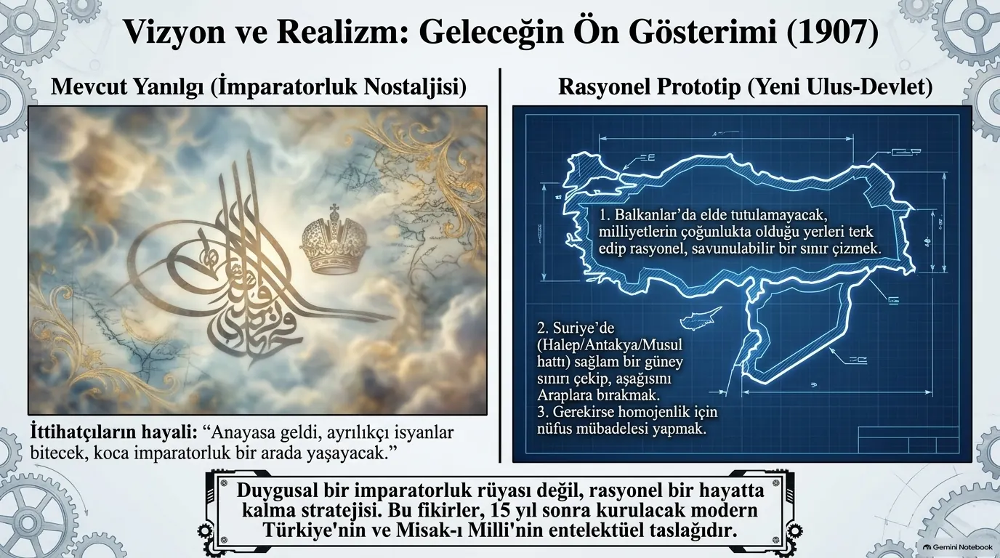
Vizyon ve gerçekçilik: kuruculukta yön ile aracın ayrılması.
1 Kasım 1922: önce devletin tepesini değiştirmek
Büyük Taarruz’dan yalnız iki ay sonra ilk büyük siyasal kırılma geldi. 1 Kasım 1922’de saltanat kaldırıldı. Bu karar yalnız VI. Mehmed Vahdeddin’in iktidarının sona ermesi değildi. Devletin egemenlik kaynağının değişmesi anlamına geliyordu.
Osmanlı siyasal sisteminde devlet hanedanın devletiydi. Millî Mücadele yıllarında ise Ankara’da başka bir meşruiyet anlayışı gelişmişti. 1921 Anayasası yasama ve yürütme yetkisini Büyük Millet Meclisi’nde topluyor, yeni düzeni millî egemenlik temeline oturtuyordu. Landau derlemesindeki hukuk incelemesi, 1921 sisteminin yeni Ankara hükümetinin hukuki temelini oluşturduğunu; savaş sonrasında ise 1924 Anayasası’nın Cumhuriyet’in örgütsel yapısını sağlamlaştırdığını vurgular.
Ardından Lozan geldi.
24 Temmuz 1923’te imzalanan Lozan Antlaşması yeni Türkiye’nin uluslararası varlığını güvence altına aldı.
Ankara başkent yapıldı. Ve 29 Ekim 1923’te Cumhuriyet ilan edildi. Mustafa Kemal Cumhurbaşkanı seçildi.
Böylece yaklaşık bir yıl içinde devletin adı, egemenlik anlayışı, merkezi ve yönetim biçimi değişmişti.
Ama kurucu program henüz yeni başlıyordu.
Cumhuriyet ilan etmek kolaydı; Cumhuriyet insanı oluşturmak zordu
Mustafa Kemal için “Cumhuriyet” yalnız padişah yerine cumhurbaşkanı koymak değildi. Devletin meşruiyetini hanedandan millete geçirmek gerekiyordu.
Fakat “millet egemendir” demekle milyonlarca insanın bir gecede modern yurttaşa dönüşmeyeceğini biliyordu.
Landau’nun değerlendirmesindeki en önemli noktalardan biri şudur: Atatürk devlet kurumlarını değiştirmekle yetinmedi; insanların dünyaya bakış biçimini değiştirmeye çalıştı. Çünkü yeni kurumların günlük hayatın normu hâline gelebilmesi için zihniyet dönüşümüne ihtiyaç vardı.
Bu nedenle Cumhuriyet devrimi birbirinden kopuk yasalar listesi olarak okunmamalıdır. Saltanatın kaldırılması, halifeliğin kaldırılması, eğitimin birleştirilmesi,
yeni medeni hukuk, alfabe değişikliği, kadının statüsündeki değişiklikler, tarih ve dil çalışmaları,
ölçü sistemlerinin değiştirilmesi
aynı temel sorunun farklı parçalarıydı:
Yeni devlet hangi insan ve toplum modeli üzerinde yaşayacaktı?
3 Mart 1924: bir günde üç büyük kurumsal kırılma
Cumhuriyet’in kuruluşundaki en yoğun günlerden biri 3 Mart 1924 oldu. Halifelik kaldırıldı. Şer‘iye ve Evkaf Vekâleti kaldırıldı. Tevhid-i Tedrisat Kanunu ile eğitim sistemi Maarif Vekâleti altında birleştirildi.
Bu üç düzenlemeyi ayrı ayrı okumak mümkündür. Fakat birlikte düşünüldüğünde çok daha büyük bir değişim görülür.
Osmanlı sisteminde din yalnız bireysel inanç alanı değildi. Eğitim, hukuk ve devlet örgütlenmesi içinde kurumsal bir yere sahipti.
Cumhuriyet şimdi bu alanları yeniden düzenliyordu.
Landau derlemesindeki eğitim çalışması Tevhid-i Tedrisat’ı yalnız medreselerin kapatılması meselesi olarak değil, birleşik, modern, laik ve millî bir eğitim sistemi kurma adımı olarak değerlendirir. Özellikle yeni devletin parçalı eğitim yapılarını tek kamu sistemi içinde toplama amacı vurgulanır.
Bu kararın ölçeği büyüktü. Çünkü okul yalnız bilgi verilen yer değildir.
Devletin gelecek kuşaklara “Biz kimiz?”, “Nasıl düşünmeliyiz?”, “Hangi dünyaya aitiz?” sorularına verdiği cevapların aktarıldığı kurumdur.
Mustafa Kemal böylece reformun belki en uzun vadeli aracına yöneliyordu:
çocuğa.
Öğretmen, kurucunun görünmeyen ortağı
Bir kanunun Meclis’te kabul edilmesi saatler sürebilir. Bir ülkenin eğitim seviyesini değiştirmek ise kuşaklar alır.
Landau derlemesindeki eğitim incelemesi bu farkı çok açık biçimde ortaya koyar: hukuk reformu veya alfabe değişikliği tek bir yasayla başlatılabilirdi; fakat modern eğitimin başarısı için mücadele her köyde, her okulda, çoğu zaman yalnız çalışan genç öğretmenler aracılığıyla sürdürülmek zorundaydı.
Mustafa Kemal’in eğitim meselesine bu kadar ağırlık vermesinin nedeni burada aranmalıdır. Bir ordu emirle hareket edebilir. Bir toplum edemez.
Toplumun değişebilmesi için insanların yeni bilgiyi öğrenmesi, yeni kurumları anlaması ve sonunda onları günlük hayatın doğal parçası hâline getirmesi gerekir.
John Dewey gibi yabancı eğitim uzmanlarının Türkiye’ye davet edilmesi de bu arayışın parçasıydı. Cumhuriyet yönetimi modern eğitim konusunda dışarıdan uzmanlık almaktan çekinmedi; farklı Avrupa ve Amerikan eğitimcilerinden raporlar istendi.
Burada önceki bölümlerde gördüğümüz Mustafa Kemal yeniden ortaya çıkar:
Bilmediği konuda öğrenmek, dışarıdan bilgi almak ve sonra bunu kendi problemine uyarlamak.
Hukuk değişirse günlük hayat değişir mi?
1926 yılında Cumhuriyet’in en derin toplumsal müdahalelerinden biri gerçekleştirildi. Türk Medeni Kanunu kabul edildi. Yeni medeni hukuk büyük ölçüde İsviçre Medeni Kanunu örnek alınarak hazırlandı. Bu değişiklik teknik bir hukuk reformu gibi görünebilir.
Aslında doğrudan evin içine giriyordu. Evlilik, boşanma, miras,
aile ilişkileri, kadın ve erkeğin hukuki statüsü yeniden düzenleniyordu.
Osmanlı’nın din temelli ve cemaatlere göre farklılaşabilen hukuk yapısı yerine devletin yurttaşlarına ortak bir seküler hukuk sistemi uygulanması hedefleniyordu. Landau derlemesindeki hukuk incelemesi, Cumhuriyet’in eski çoklu hukuk düzeni yerine ortak ve seküler bir çerçeve yaratmaya yöneldiğini vurgular.
Fakat aynı çalışma önemli bir uyarı da yapar. Kanun çıkarmak ile toplumun o kanuna bütünüyle uyması aynı şey değildir.
Özellikle kırsal bölgelerde geleneksel uygulamalar uzun süre devam etti. Modern hukuk ile toplumsal alışkanlık arasında boşluklar ortaya çıktı. Bazı alanlarda devlet daha sonra yeni düzenlemeler yapmak zorunda kaldı.
Bu ayrıntı Atatürk devrimlerini anlamak açısından son derece değerlidir. Çünkü reformların gücünü küçültmez. Onları daha gerçek gösterir. Devlet hızla değişebilir. Toplum daha yavaş değişir.
Kuruculuk da tam olarak bu iki hız arasındaki gerilimi yönetme problemidir.
Kadının statüsü: özel alandan kamusal yurttaşlığa
Yeni medeni hukuk kadın açısından özellikle belirleyiciydi.
Tek eşli medeni evlilik sistemi güçlendirildi; kadınların aile hukuku içindeki konumu yeniden düzenlendi.
Sonraki yıllarda siyasal yurttaşlık alanı da genişledi.
Kadınlar önce yerel yönetim düzeyinde seçme ve seçilme hakları elde etti; 1934’te milletvekili seçimlerinde seçme ve seçilme hakkı tanındı. Erickson da Cumhuriyet reformlarının temel unsurları arasında kadınların siyasal haklarını özellikle vurgular.
Bu değişiklikleri yalnız “kadına hak verildi” cümlesiyle anlatmak eksik olur. Daha büyük dönüşüm, devletin yurttaş tanımının değişmesidir.
Osmanlı’nın tebaa mantığından, kadın ve erkeği doğrudan devletle hukuki ilişki içinde olan yurttaşlar olarak tanımlayan yeni bir sisteme geçilmeye çalışılıyordu.
Elbette hukuki eşitlik toplumsal eşitliğin bir anda gerçekleştiği anlamına gelmedi. Fakat devletin çizdiği yön değişmişti.
1928: Bir gecede alfabe değişir mi?
1 Kasım 1928’de yeni Türk harflerinin kabulü, Cumhuriyet devrimlerinin en görünür adımlarından biri oldu.
Arap harfleri yerine Latin temelli Türk alfabesine geçildi. Bu kararın teknik açıklaması kolaydır. Türkçenin ses yapısına daha uygun bir yazı sistemi kurmak, okuma-yazma öğretimini kolaylaştırmak,
Batı dünyasıyla kültürel ve teknik ilişkiyi hızlandırmak. Fakat etkisi teknik değildi. Bir alfabe aynı zamanda hafıza aracıdır.
Erickson önemli bir ikili sonucu birlikte verir: Latin alfabesi Avrupa ile entegrasyonu kolaylaştırırken, yeni kuşakların Osmanlıca yazılı geçmişe doğrudan erişimini de zorlaştırmıştır.
Bu nedenle alfabe reformu hem modernleşme hem kopuş sembolüdür. Mustafa Kemal reformu yalnız Meclis’e bırakmadı.
Yeni harflerin tanıtımına şahsen katıldı; kara tahta önünde halka yeni yazıyı anlattığı görüntü Cumhuriyet’in en tanınmış fotoğraflarından birine dönüştü.
Bu sahne aslında onun kuruculuk anlayışını sembolik biçimde gösterir:
Cumhurbaşkanı yalnız yasayı onaylayan kişi değildir; değişimin öğretmeni rolünü de üstlenmektedir.
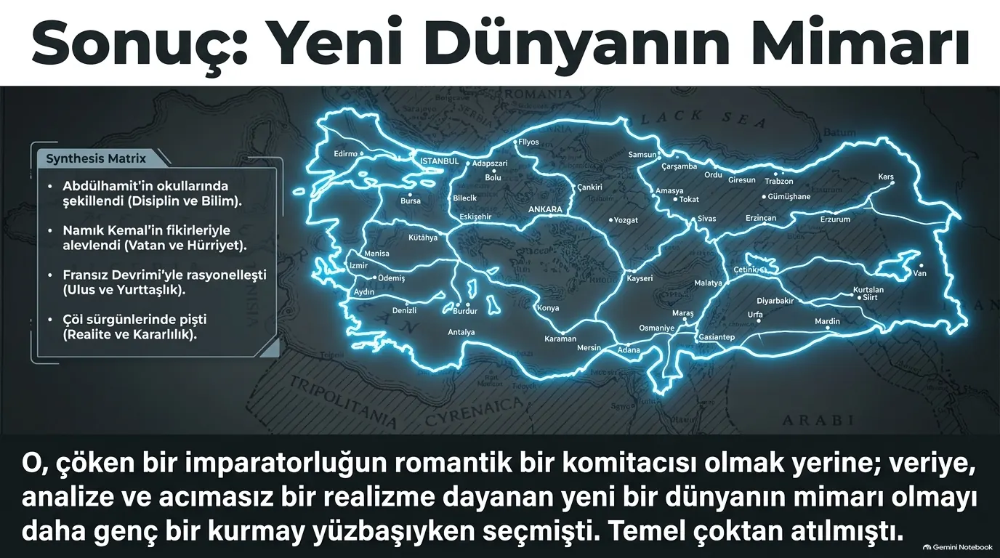
Yeni dünyanın mimarı: reformların birlikte okunması.
Dil ve tarih: devlet yalnız sınır çizmez, anlam dünyası da kurar
1930’lara gelindiğinde reformların odağı daha güçlü biçimde kültüre yöneldi.
1931’de Türk Tarihi Tetkik Cemiyeti, daha sonra Türk Tarih Kurumu adını alacak yapı oluşturuldu.
1932’de Türk Dili Tetkik Cemiyeti, bugünkü Türk Dil Kurumu kuruldu. Dönemin kronolojileri bu kurumların kuruluşunu Cumhuriyet’in kültürel dönüşümünün önemli dönemeçleri olarak kaydeder.
Bu çalışmaların arkasında büyük bir devlet kurma problemi vardı:
Osmanlı İmparatorluğu sona ermişti. Yeni devlet artık kendisini hanedan veya ümmet üzerinden tanımlamıyordu. Öyleyse geçmişini nasıl anlatacaktı? “Türk” kimliği ne anlama gelecekti?
Vatandaşın tarihsel aidiyeti nerede başlayacaktı?
Landau, dil reformu ve yoğun tarih araştırmalarının yeni Türk ulusal aidiyetini ve gururunu güçlendirmeye yönelik olduğunu belirtir.
Burada tarihçilik ile devlet siyaseti iç içe geçmiştir.
Bu dönemde geliştirilen bazı tarih ve dil tezleri günümüz bilimsel ölçütleri açısından tartışmalı veya terk edilmiş olabilir.
Fakat kuruculuk açısından amaç açıktır:
Yeni Cumhuriyet kendi tarih anlatısını ve dil bilincini üretmeye çalışmaktadır.
Ankara: yeni devlet neden eski başkentte kurulmadı?
Başkent tercihi de aynı sembolik mantığın parçasıydı. İstanbul yaklaşık beş yüzyıllık Osmanlı imparatorluk merkezidir. Saray oradadır. Halifelik oradadır.
Eski bürokrasi oradadır. Diplomatik çevre oradadır. Mustafa Kemal ise yeni devletin merkezini Ankara yaptı.
1923’te Ankara’nın başkent ilan edilmesi yalnız coğrafi veya askerî gerekçelerle açıklanamaz.
Ankara Anadolu’nun içindedir. Millî Mücadele oradan yönetilmiştir. İmparatorluk sarayından fiziksel ve sembolik olarak uzaktadır.
Yeni Meclis, yeni bakanlıklar, yeni yollar ve yeni kamu binalarıyla şehir adeta Cumhuriyet’in beton ve taşla çizilmiş siyasi manifestosuna dönüşür.
Ryan Gingeras’ın Eternal Dawn eserindeki Ankara fotoğrafları ve kentleşme tartışması, Cumhuriyet’in modernliği yalnız kanunlarda değil kamusal mekânda da görünür kılmaya çalıştığını gösterir.
Yeni devletin yeni bir başkenti vardır.
Bu, “eski merkezi ele geçirmekten” daha güçlü bir mesajdır:
yeni merkez kurmak.
Ekonomi: siyasî bağımsızlık yeterli mi?
Mustafa Kemal için bağımsızlık yalnız bayrak ve sınır meselesi değildi.
Ekonomik bağımlılık devam ediyorsa siyasî bağımsızlığın kırılgan kalacağı düşüncesi Millî Mücadele sonrasının temel meselelerinden biri oldu.
Daha Cumhuriyet ilan edilmeden, Şubat 1923’te İzmir İktisat Kongresi toplandı. Amaç savaş sonrasında ekonomik yönün tartışılmasıydı.
1920’lerde özel girişimin geliştirilmesi ve millî sermayenin güçlendirilmesi hedeflendi. İş Bankası’nın kurulması, sanayiyi teşvik düzenlemeleri ve altyapı yatırımları bu dönemin parçalarıydı.
Fakat 1929 Dünya Ekonomik Buhranı koşulları değiştirdi. Türkiye’nin sermaye birikimi zayıftı.
Özel sektör büyük sanayi yatırımlarını tek başına gerçekleştirecek kapasiteye sahip değildi.
Bunun üzerine 1930’larda devletçilik daha belirgin hâle geldi.
Devlet yalnız düzenleyici olmayacak; bazı temel sektörlerde doğrudan yatırımcı hâline gelecekti.
1934’te Birinci Beş Yıllık Sanayi Planı uygulanmaya başladı. Demir, tekstil ve başka temel sanayi alanlarında kamu yatırımları arttı. Erickson, Atatürk döneminde sanayi politikasının kömür, demir ve tekstil üretiminde belirgin genişleme yarattığını vurgular.
Ryan Gingeras’ın 1936 Türkiyesini anlatırken aktardığı dönem basını da aynı heyecanı gösterir: demiryollarının millîleştirilmesi, tarıma devlet desteği ve sanayinin “Türk parası ve Türk emeğiyle” kurulması dönemin kalkınma anlatısının merkezindedir.
Burada yine sabit bir doktrinden çok pragmatik uyarlama görülür.
Landau derlemesindeki Sabri Akural’ın değerlendirmesi özellikle önemlidir: Atatürk’ün baştan sona ayrıntılı ve değişmez bir “master plan”la hareket ettiği düşüncesi tarihsel gerçeklikle tam örtüşmez. Reformların önemli bir bölümü ortaya çıkan sorunlara verilen pratik cevaplar olarak gelişmiştir.
Bu Mustafa Kemal’in önceki bölümlerde gördüğümüz çalışma biçimiyle şaşırtıcı derecede uyumludur:
Amaç sabit olabilir; yöntem koşullara göre değişebilir.
Bilim: modernleşmenin otoritesi ne olacak?
Cumhuriyet’in kültürel dönüşümünde sürekli tekrar eden bir sözcük vardır:
bilim.
Mustafa Kemal’in düşüncesinde modernleşmenin temel referansı dinî veya geleneksel otoritenin yerine akıl ve bilimsel bilgiye doğru kaydırılmak istenir.
Bu yalnız slogan düzeyinde kalmaz. Eğitim müfredatı değiştirilir. Yabancı uzmanlar davet edilir. Üniversite sistemi yeniden düzenlenir.
1933 Üniversite Reformu ile İstanbul Darülfünunu yeniden yapılandırılarak İstanbul Üniversitesi’ne dönüştürülür.
Aynı dönemde Nazi Almanyası’ndan kaçan çok sayıda bilim insanının Türkiye’de akademik görev alması, Cumhuriyet üniversitelerinin gelişmesinde beklenmedik fakat önemli bir katkı oluşturacaktır.
Landau derlemesinin bütün yapısı dahi bu modernleşmenin ne kadar çok alana yayıldığını gösterir: eğitim, dil, hukuk, sanat, ekonomi, bürokrasi ve siyasi kültür ayrı ayrı incelenmektedir.
Mustafa Kemal’in kurucu projesinin ayırt edici tarafı belki tam buradadır:
Modernleşme tek bir bakanlığın işi değildir.
Devletin çalışma biçiminden çocuğun okuduğu kitaba, hukuk mahkemesinden müziğe kadar bütün sistem birbirine bağlı görülmektedir.
Kurucu yalnız kanun yapan kişi değildir; tempo belirleyen kişidir
Landau’nun Atatürk değerlendirmesinde dikkat çekici bir ayrıntı vardır. Reformların bazıları Mustafa Kemal’in kendi fikirleriydi. Bazılarının kökleri Osmanlı reformcularına uzanıyordu. Bazıları yakın çevresindeki uzman ve siyasetçilerin katkılarıyla şekillenmişti.
Fakat hangi reformun uygulanacağı, nasıl uygulanacağı ve hangi sırayla önceliklendirileceği konusunda nihai karar verici çoğunlukla Mustafa Kemal’di. Aynı zamanda çevresine yetenekli iş arkadaşları topladı ve uygulamanın devam etmesini sürekli zorladı.
Bu noktada kuruculuğun başka bir boyutu görülür:
fikir seçmek + insan seçmek + sıra belirlemek + takip etmek. Mustafa Kemal bütün kanunları kendisi yazmadı. Bütün ders kitaplarını kendisi hazırlamadı. Her fabrikayı kendisi yönetmedi.
Her diplomatik görüşmeyi kendisi yapmadı. Kuruculuk zaten bu değildir.
Kuruculuk, bir yön tayin edip farklı uzmanlıkları aynı dönüşüm programı içinde birleştirebilmektir.
Bu yönüyle Harbiye’de öğrendiği kurmay mantığı sivil devlette yeniden karşımıza çıkar. Bir hedef vardır. Alt görevler vardır. Uzmanlar vardır.
Kaynaklar vardır. Zamanlama vardır. Ve uygulamanın sürekli izlenmesi vardır. Savaş meydanındaki komuta, barış döneminde giderek yönetişime dönüşmektedir.
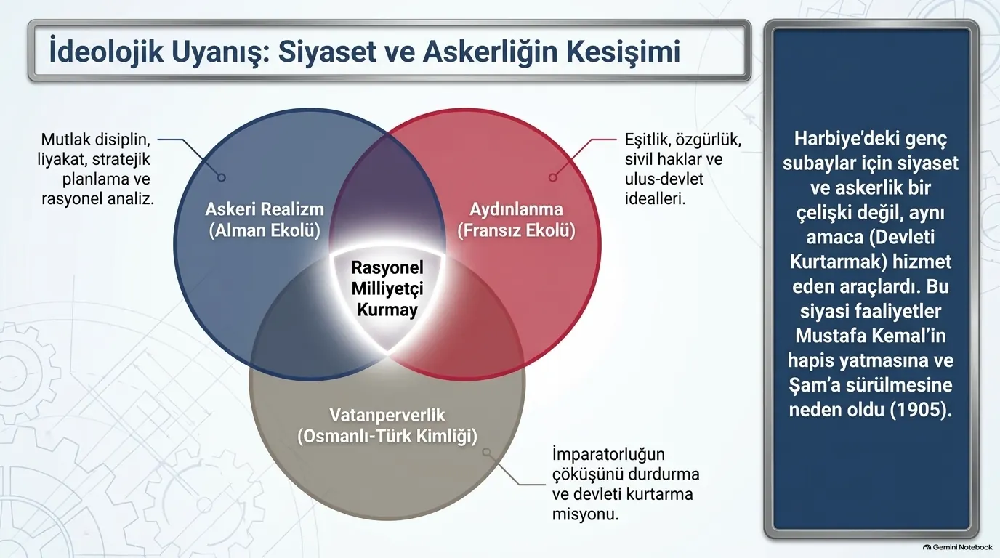
İdeolojik uzay: siyaset ile askerîliğin kesişimi.
Ama bunun bir bedeli vardı: siyasî alan daraldı
Atatürk dönemini yalnız reformların listesi üzerinden anlatmak kuruculuğun en önemli gerilimlerinden birini gizler.
Yeni devlet modern kurumlar kurarken siyasî çoğulculuk daraldı.
1924’te Kazım Karabekir, Rauf Orbay, Ali Fuat Cebesoy ve başka Millî Mücadele isimlerinin yer aldığı Terakkiperver Cumhuriyet Fırkası kuruldu.
1925’te Şeyh Said İsyanı sonrasında Takrir-i Sükûn Kanunu çıkarıldı. Hükümet olağanüstü yetkiler kazandı. Terakkiperver Cumhuriyet Fırkası kapatıldı.
1930’da Mustafa Kemal’in yakın arkadaşı Fethi Okyar’ın başkanlığında Serbest Cumhuriyet Fırkası denemesi yapıldı; kısa süre sonra o da sona erdi.
Ryan Gingeras bu dönemi özellikle romantikleştirmeden ele alır. Eternal Dawn’ın bölümleri dahi kuruculuğun iki yüzünü yan yana getirir: “Yeni Bir Millî Ruh” ve “Devrim Kültürü”nün yanında muhalefetin tasfiyesi, siyasî baskılar, Kürt bölgelerindeki devlet şiddeti ve Cumhuriyet reformlarının tamamlanmamış yönleri de incelenmektedir.
Bu gerçek, Atatürk’ün kurucu başarısını görmezden gelmeyi gerektirmez. Ama tarihsel tabloyu daha doğru hâle getirir. Cumhuriyet modernleşmesi aynı anda hem özgürleştirici hem merkeziyetçi unsurlar taşıdı. Kadınların hukuki ve siyasal hakları genişledi.
Eğitim sekülerleşti. Yurttaşlık ve hukuk birleştirildi. Fakat siyasî rekabet sınırlı kaldı. Devlet toplum üzerinde güçlü bir dönüştürücü otorite kullandı.
Kuruculuğun bu gerilimi Halâskâr’da saklanmamalıdır.
Çünkü okuyucuya propaganda değil, insanı ve dönemi bütün karmaşıklığıyla anlamaya çalışan bir anlatı sunuyoruz.
Dış politika: savaşı kazanan komutan neden savaştan kaçınmaya başladı?
Mustafa Kemal’in askerlikten devlet adamlığına geçişinin belki en çarpıcı göstergelerinden biri dış politikadır.
Hayatının büyük bölümünü savaş içinde geçirmiş bir asker, Cumhuriyet döneminde yeni bir büyük savaştan özellikle kaçınmaya çalıştı.
Çünkü artık sorumluluğu değişmişti. Komutan için askerî zafer başarı olabilir.
Kurucu için gereksiz savaş, on yılda kurulmuş bütün ekonomik ve toplumsal yapıyı yok edebilir.
Cumhuriyet dış politikası bu nedenle genel olarak statükoyu korumaya, Lozan’ın sağladığı uluslararası meşruiyeti güçlendirmeye ve mümkün olduğunca sorunları diplomasi yoluyla çözmeye yöneldi.
Musul meselesi 1926’da İngiltere ve Irak ile yapılan anlaşmayla çözüldü. Türkiye 1932’de Milletler Cemiyeti’ne katıldı. 1934’te Yunanistan, Yugoslavya ve Romanya ile Balkan Antantı kuruldu.
1936’da Montrö Boğazlar Sözleşmesi, Türkiye’nin Boğazlar üzerindeki egemenlik ve güvenlik kapasitesini önemli ölçüde güçlendirdi.
1937’de İran, Irak ve Afganistan ile Sadabad Paktı imzalandı.
Hatay meselesinde ise diplomatik baskı sonuna kadar sürdürüldü. Erickson, Musul ve Hatay meselelerini ve Montrö’nün başarısını Atatürk’ün Cumhuriyet dönemi dış politikasının önemli sonuçları arasında sayar.
Ryan Gingeras’ın 1936 anlatısı özellikle öğreticidir.
Avrupa hızla yeni bir savaşa giderken Türkiye’nin aynı yıl İngiltere ile ilişkilerini geliştirdiğini ve Boğazlar konusunda diplomatik kazanım sağladığını aktarır. Dönemin Türk basını ülkeyi “barışçı ve çalışkan” bir devlet olarak sunmaktadır.
Burada asker Mustafa Kemal ile kurucu Atatürk arasındaki fark belirginleşir. 1915’te problemi düşmanı durdurarak çözer. 1922’de düşman ordusunu imha ederek çözer. 1936’da Boğazlar sorununu antlaşma masasında çözer.
Aynı temel mantık vardır:
Amaç nedir? O amaca ulaşmanın en etkili aracı hangisidir? Araç savaş olmak zorunda değildir.
Cumhuriyet’in en radikal fikri belki de görünmeyenidir
Atatürk dönemindeki reformları yan yana koyduğumuzda ilk bakışta birbirinden bağımsız görünürler:
alfabe, medeni hukuk, kıyafet, takvim,
ölçüler, kadın hakları, eğitim, tarih,
dil, sanayi, demiryolları, üniversite.
Fakat hepsinin altında ortak bir varsayım vardır. İnsan ve toplum değişebilir.
Bu düşünce aslında Mustafa Kemal’in kendi hayat hikâyesiyle de şaşırtıcı biçimde uyumludur.
03. bölümde bir çocuğun kendi kararlarını vermeye başlamasını gördük.
04. bölümde genç subayın kendi eğitimini ve karakterini bilinçli biçimde geliştirmesini gördük.
05. bölümde savaşlar boyunca kendi askerî yöntemini geliştiren komutanı gördük. Şimdi aynı düşünce ülke ölçeğine taşınmıştır. Nasıl insan kendisini eğitebiliyorsa, toplum da eğitilebilir.
Nasıl subay hatasından öğrenebiliyorsa, devlet de eski kurumlarını değiştirebilir. Nasıl yöntem işe yaramıyorsa değiştirilmesi gerekiyorsa, kurum da yalnız eski olduğu için korunmak zorunda değildir.
Bu açıdan Cumhuriyet reformları, Mustafa Kemal’in önce kendi hayatında uyguladığı “inşa edilebilirlik” fikrinin devlet ölçeğine büyümüş hâli gibi okunabilir.
Bu tarihsel bir nedensellik iddiası değil; biyografinin farklı dönemleri arasında dikkat çekici bir sürekliliktir.
“Atatürk” adının ortaya çıkışı
1934’te Soyadı Kanunu çıkarıldı. Herkesin aile soyadı kullanması zorunlu hâle geldi. TBMM Mustafa Kemal’e özel bir kanunla Atatürk soyadını verdi. Bu ad artık yalnız kişinin kimliği değildi.
Kurucu rolünün sembolüne dönüştü. Selanik’te doğan Mustafa, askerî okulda Mustafa Kemal olmuş, Çanakkale’de komutan,
Sakarya’dan sonra Gazi ve Mareşal, Cumhuriyet’in kuruluşuyla Cumhurbaşkanı, 1934’ten sonra ise Atatürk olmuştu. İsmin değişimi biyografinin farklı evrelerini neredeyse görünür kılar.
Fakat burada bir tehlike vardır. “Atatürk” adı büyüdükçe arkasındaki insan kaybolabilir. Halâskâr Navigatörü’nün amacı bunun tersini yapmak olmalıdır. Kurucuyu anıta dönüştürmek değil;
nasıl düşündüğünü, hangi araçları kullandığını ve hangi bedellerle karar verdiğini anlamak.
Peki Atatürk’ün kuruculuğunun asıl büyüklüğü neydi?
On beş yıllık Cumhurbaşkanlığı dönemine yalnız reformların sayısı açısından bakıldığında bile olağanüstü yoğunluk görülür.
Yeni anayasal düzen. Yeni başkent. Yeni hukuk sistemi. Birleştirilmiş eğitim.
Yeni alfabe. Yeni üniversite. Kadının genişleyen yurttaşlık statüsü. Dil ve tarih kurumları.
Yeni ekonomik kurumlar. Demiryolları. Sanayileşme girişimleri. Yeni dış politika.
Landau’nun ifadesiyle, bu değişikliklerin her biri tek başına bile iddialı bir reform programı sayılabilirdi; birlikte yarattıkları etki çok daha büyüktü.
Fakat kuruculuğu yalnız “çok reform yaptı” diye tarif etmek hâlâ yüzeyseldir. Daha önemli olan reformları birbirine bağlamasıdır. Hukuk, kadının statüsünü değiştiriyor. Eğitim yeni hukuku anlayacak kuşağı yetiştiriyor.
Alfabe eğitime erişimi dönüştürmeye çalışıyor. Dil ve tarih yeni ulusal kimliği güçlendiriyor. Ekonomik politika devletin bağımsızlığını maddi temele oturtmaya çalışıyor. Dış politika bu sistemi savaştan koruyor.
Bütün parçalar aynı soruya cevap vermektedir:
Yeni Türkiye nasıl yaşayacak?
Fakat “master plan” efsanesinden kaçınmak gerekir
Atatürk’ü olağanüstü gösterme çabası bazen onun gerçek başarısını küçülten başka bir efsane üretir:
Sanki gençliğinde bütün geleceği ayrıntısına kadar tasarlamış ve 1923’ten sonra yalnız hazır planı uygulamış gibi.
Kaynaklar bunu desteklemiyor.
Landau derlemesindeki Sabri Akural açıkça, bütün reformları önceden belirlenmiş ayrıntılı bir master planın ürünü saymanın tarihsel gerçekliğe uymadığını belirtir. Mustafa Kemal çoğu zaman önündeki somut sorunu değerlendirip uygulanabilir kararlar vermiştir.
Bu onu daha az etkileyici değil, daha etkileyici yapar. Çünkü kuruculuk burada kehanet değildir. Uyarlanabilir stratejidir.
Nereye gitmek istediği konusunda güçlü bir yön duygusu vardır:
egemen, millî, seküler, modernleşen,
bilime dayalı, Batı dünyasıyla rekabet edebilen bir devlet. Fakat oraya götürecek her adım 1905’te yazılmış hazır bir defterde bulunmamaktadır. Koşullar değiştikçe araçlar da değişir.
Özel girişim yetmezse devletçilik güçlenir. Savaş gerekiyorsa savaşılır. Diplomasi daha iyi sonuç veriyorsa diplomasi kullanılır. Yabancı uzman gerekiyorsa çağrılır.
Yabancı kanun işlevsel görünüyorsa uyarlanır. Geleneksel kurum işlevini kaybetmişse kaldırılır.
Bu nedenle kuruculuk bölümünden çıkacak en önemli kavram belki “devrim” değil:
sistem tasarımıdır.
Komutandan kurucuya
1922’de Mustafa Kemal’in elindeki en güçlü araç ordudur. 1938’e gelindiğinde ise geride bırakmaya çalıştığı esas yapı ordu değildir. Devlettir. Meclis.
Bakanlıklar. Mahkemeler. Okullar. Üniversiteler.
Bankalar. Fabrikalar. Demiryolları. Diplomasi.
Kanunlar. Ve bütün bunları sürdürecek yurttaşlar.
Bu dönüşüm, Mustafa Kemal’in liderliğinin neden yalnız askerî deha üzerinden açıklanamayacağını gösterir.
Savaş alanında üstün olmak için doğru kararı vermek yeterli olabilir.
Devlet kurmak için ise:
insan seçmek, kurum tasarlamak, zamanlama yapmak, ikna etmek,
dirençle mücadele etmek, öğrenmek, uyarlamak, takip etmek
ve bazı durumlarda güç kullanmak gerekir. Mustafa Kemal bütün bunları aynı ölçüde kusursuz yapmadı. Cumhuriyet reformlarının bazıları derinleşti. Bazıları sınırlı kaldı.
Bazıları toplumda ciddi direnç oluşturdu. Bazı uygulamalar otoriterleşmeyi güçlendirdi. Bazı iddialar zamanla bilimsel değerini kaybetti.
Ryan Gingeras’ın deyimiyle Cumhuriyet’in dönüşümü büyük olmakla birlikte “tamamlanmış” bir devrim değildi; ülkenin farklı bölgelerinde ve toplumsal kesimlerinde reformların etkisi son derece eşitsizdi.
Ama tarihsel ölçek yine de olağanüstüdür. Mustafa Kemal 1905’te çökmekte olan bir imparatorluğun genç kurmay subayıydı.
1930’ların ortasında aynı coğrafyada egemen bir cumhuriyet, yeni bir hukuk düzeni, birleşik bir eğitim sistemi, yeni alfabe, büyüyen sanayi, yeni diplomasi ve yeni bir yurttaşlık fikri vardı.
İşte Gazi Mustafa Kemal ile Atatürk arasındaki fark burada bulunur. Gazi ülkeyi kurtaran komutandır. Atatürk ise kurtarılan ülkeye bir sistem vermeye çalışan kurucudur. Fakat şimdi daha zor bir soru ortaya çıkar.
Bütün bunları yaparken nasıl karar veriyordu? Hangi konuda danışıyor, hangi konuda yalnız karar alıyordu? İnsanları nasıl seçiyordu? Neden bazen bekliyor, bazen birden hızlanıyordu?
Fikrini değiştirebiliyor muydu?
Bilim, gerçekçilik, milliyetçilik, bağımsızlık ve modernleşme onun zihninde nasıl bir araya geliyordu?
Ve bu kadar farklı alanda aynı kişiye ait olduğu hissedilen karar örüntüsünün altında bir sistem var mıydı?
Bir sonraki bölümde reformların kendisini değil, onları üreten zihni inceleyeceğiz. Sonraki bölüm · 07 · LİDERLİĞİN İÇ MİMARİSİ Atatürk Nasıl Düşünür, Nasıl Karar Verir, Nasıl Uygulardı? Karizmanın arkasındaki çalışma sistemi
KAYNAKLAR
Bu bölümün kaynakları
1. Jacob M. Landau (ed.), Atatürk and the Modernization of Turkey, Westview Press / E. J. Brill, 1984. Kurucu dönemin siyasi kültür, bürokrasi, ekonomi, eğitim, dil, hukuk ve modernleşme boyutlarını birlikte inceleyen ana akademik kaynak.
2. Ryan Gingeras, Eternal Dawn: Turkey in the Age of Atatürk, Oxford University Press, 2019/2020. Cumhuriyet’in kuruluşunu yalnız reform başarıları üzerinden değil; siyasal muhalefet, toplumsal direnç, kimlik siyaseti, bölgesel farklılıklar ve “tamamlanmamış devrim” boyutlarıyla birlikte değerlendirmek için temel tamamlayıcı kaynak.
3. George W. Gawrych, The Young Atatürk: From Ottoman Soldier to Statesman of Turkey. 1921 Anayasası, Millî Mücadele’den siyasal iktidara geçiş, saltanatın kaldırılması ve 29 Ekim 1923’te Cumhuriyet’in kuruluşuna uzanan geçiş için.
4. Edward J. Erickson, Mustafa Kemal Atatürk: Leadership, Strategy, Conflict. Cumhuriyet dönemindeki alfabe, Soyadı Kanunu, kadınların siyasal hakları, sanayileşme politikaları, Musul, Hatay ve Montrö gibi başlıca uygulamaların kısa kronolojik değerlendirmesi için.
5. Michael Winter, “The Modernization of Education in Kemalist Turkey,” içinde: Landau, Atatürk and the Modernization of Turkey. Tevhid-i Tedrisat’ın birleşik, modern, seküler ve millî eğitim sistemi oluşturmadaki rolü; yabancı eğitim uzmanlarından yararlanılması ve reformun sahadaki güçlükleri için.
6. Vakur Versan, “The Kemalist Reform of Turkish Law and Its Impact,” aynı eser. 1921 ve 1924 anayasal düzenleri, laik hukuk sistemine geçiş, medeni hukuk ve yeni yasalar ile toplumsal alışkanlık arasındaki uyum sorunları için.
7. Sabri M. Akural, “Kemalist Views on Social Change,” aynı eser. Mustafa Kemal’in reformlarını baştan sona sabit bir “master plan” ile uyguladığı iddiasına karşı, somut meseleler karşısında pragmatik ve aşamalı karar verme niteliği için.
8. Paul Dumont, “The Origins of Kemalist Ideology,” aynı eser. Kemalist reformların Tanzimat, Meşrutiyet ve geç Osmanlı modernleşmesinden gelen düşünsel sürekliliği; Cumhuriyet’in farkının bu reform sürecini çok daha radikal düzeye taşıması olduğu değerlendirmesi için.
9. Patrick Kinross, Atatürk: The Rebirth of a Nation. Saltanatın kaldırılması, Lozan, Cumhuriyet, halifelik, medeni hukuk, alfabe, Türk Tarih ve Dil kurumları, Beş Yıllık Sanayi Planı ve kadınların milletvekili seçme-seçilme hakkına ilişkin kronolojik kontrol için.
10. M. Şükrü Hanioğlu, Atatürk: An Intellectual Biography. Cumhuriyetçilik, halkçılık, toplumsal dönüşüm ve devlet eliyle modernleşmenin düşünsel temellerini eleştirel ve entelektüel tarih perspektifinden değerlendirmek için.
07 · LIDERLIĞIN İÇ MIMARISI
Atatürk Nasıl Düşünür, Nasıl Karar Verir, Nasıl Uygulardı?
Karizmanın arkasındaki sistem: his, dimağ, vicdan; öğrenme, gerçekçilik, zamanlama, insan seçimi ve sonuca kadar takip
Mustafa Kemal’in hayatını buraya kadar izlediğimizde olağanüstü bir çeşitlilik görüyoruz. Çocuklukta kayıplar ve bağımsızlaşma… Harbiye’de yoğun öğrenme… Trablusgarp’ta yerel kuvvetleri örgütleme…
Çanakkale’de saniyeler içinde inisiyatif alma… Sakarya’da haftalar süren yıpratma savaşı… Büyük Taarruz öncesinde aylarca bekleme…
Ardından saltanatın kaldırılması, Cumhuriyet, hukuk, eğitim, alfabe, ekonomi ve dış politika.
Bunların hepsini yalnız “cesur”, “zeki”, “karizmatik” veya “ileri görüşlü” gibi sıfatlarla açıklamaya çalışmak yetersiz kalır.
Çünkü sıfatlar insanı tarif eder; sistemini açıklamaz.
Daha ilginç soru şudur:
Bunca farklı problem karşısında aynı kişiye ait olduğunu hissettiğimiz kararların arkasında nasıl bir düşünme biçimi vardı?
George Gawrych bu soruya yaklaşmak için Mustafa Kemal’in kendi dilinde sık kullandığı üç kavramı merkezine alır:
his — dimağ — vicdan. Duygu. Akıl. Ve ahlaki pusula.
Gawrych’e göre Mustafa Kemal’i yalnız rasyonalist bir lider olarak okumak eksiktir. Akıl ve bilim onun düşüncesinde merkezîdir; fakat insan davranışını anlamak, kitlelerin duygularını sezmek ve bir kararın hangi değer uğruna verildiğini belirlemek de liderliğinin ayrılmaz parçalarıdır.
Belki de Atatürk’ün liderliğinin iç mimarisine girmek için en doğru kapı tam burasıdır.
His: İnsan yalnız akılla yönetilmez
Mustafa Kemal bir kurmay subaydı.
Haritalar, sayılar, arazi, ikmal, kuvvet dengesi ve olasılıklar onun mesleğinin doğal parçalarıydı.
Fakat insanın yalnız hesapla hareket etmediğini de biliyordu. Korku vardır. Gurur vardır. Umut vardır.
Aşağılanma vardır. Aidiyet vardır. Fedakârlık vardır. Bir ordunun kâğıt üzerindeki kuvveti ile gerçekten savaşma iradesi aynı şey değildir.
Mustafa Kemal’in daha genç subayken kaleme aldığı Zabit ve Kumandan ile Hasbıhal bunun erken bir örneğini verir. Ona göre komutanın görevi yalnız emir vermek değildir. Askerin güvenini kazanmak, onun manevi gücünü yükseltmek ve insanların umutları ile amaçlarını somut bir hedefe dönüştürmek gerekir. Gawrych, Mustafa Kemal’in komutanların askerlerine “sürü” gibi değil, insan olarak yaklaşmasını savunduğunu özellikle vurgular.
Bu yüzden Çanakkale’de Mustafa Kemal’in varlığının yalnız emir-komuta açısından değil, psikolojik açıdan da etkili olması önemlidir.
Austin Bay, kitabının girişine tam bu sahneden başlar.
25 Nisan 1915 sabahında geri çekilen askerlerle karşılaşan Mustafa Kemal’in görünmesi, durması, askerleri durdurması ve birkaç dakika içinde o paniği direnmeye çevirmesi Bay’in anlatısında liderlik açısından sembolik bir andır.
Bay’in bölüm başlığı da dikkat çekicidir:
Winning Time — Zaman Kazanmak. O birkaç dakika düşmanı tamamen yenmez. Ama zaman kazandırır. Arkasındaki birliklerin yetişmesi için zaman.
Savunmanın kurulması için zaman. Düşmanın yüksek araziyi ele geçirmesini önlemek için zaman. Liderlik bazen insanları gelecekteki büyük amaca ikna etmek değildir. Bazen yalnızca o anda dağılmalarını engellemektir.
Mustafa Kemal’in liderliğinde aklın önemi tartışmasızdır. Ama onun “akılcılığı” soyut entelektüel faaliyet değildir. Gerçeği mümkün olduğunca doğru görme çabasıdır.
Adnan Nur Baykal’ın Mustafa Kemal Atatürk’ün Liderlik Sırları kitabında anlattığı küçük bir olay bu özelliği çok iyi gösterir.
Mustafa Kemal bir arazi konusunda çevresindeki subaylardan farklı düşünmektedir. Üstelik o subayların bazıları bölgeyi ondan daha yakından tanımaktadır.
Haritaya tekrar bakar. Kendi görüşünün doğru olduğuna inanır. Ama tartışmayı makam gücüyle bitirmez. Bir emir subayını gönderip yerinde kontrol ettirir.
Sonuçta haritadaki değerlendirmesinin doğru olduğu anlaşılır. Baykal bu olayı “bilgi sahibi olma” ve bilgiyi doğrulama başlığı altında kullanır.
Buradaki ders “Atatürk her zaman haklıydı” değildir.
Asıl önemli olan yöntemdir:
İnanmak yetmez. Kontrol et. Mustafa Kemal’in askerî kararlarında da aynı eğilim görülür. Bilgi toplar. Farklı raporları yan yana getirir.
Haritayı inceler. Araziyi görür. Komutanlardan görüş alır. Fakat veri hiçbir zaman tam değildir.
İşte o noktada muhakeme başlar.
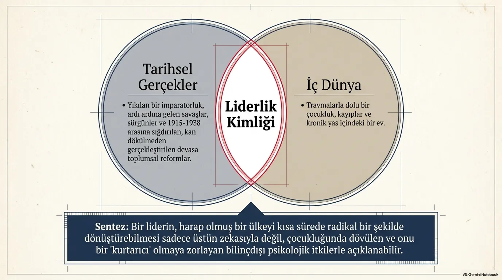
Liderlik modeli: zihinsel ve ahlaki unsurların birlikte okunması.
Her şeyi bilmeden karar vermek
Liderliğin en büyük rahatlığı hiçbir zaman gerçekleşmez:
Karar vermeden önce bütün bilgilerin gelmesini beklemek. Gerçek hayatta bütün bilgi gelmez. Ve geldiğinde de bazen artık çok geçtir. Çanakkale bunun en belirgin örneğidir.
Mustafa Kemal 25 Nisan sabahı düşmanın tam gücünü bilmiyordu. Üst komutanlıktan açık bir emir almamıştı. Çıkarmanın gerçek hedefi konusunda tam bir istihbaratı yoktu.
Ama bir şeyi biliyordu:
Düşman kritik sırtlara kendisinden önce ulaşırsa, durum çok daha zor hâle gelecekti.
Austin Bay bu karar biçimini kılıçtan çok dürbünle simgeler: Mustafa Kemal’in üstünlüğü yalnız saldırma cesaretinde değil, mevcut kargaşa içinden gelecekte belirleyici olacak noktayı görebilmesindedir.
Bu, “sezgi” dediğimiz şeyin daha ciddi biçimidir. Sezgi burada fal değildir. Yıllarca biriktirilmiş bilgi ve tecrübenin hızlı muhakemeye dönüşmesidir. Gawrych’in üçlü modelinde üçüncü unsur vicdandır.
Buradaki vicdan yalnız kişisel merhamet değildir. Mustafa Kemal’in dilinde görev, fazilet, ahlak ve kamu yararı ile ilişkilidir.
Gawrych, Mustafa Kemal’in hem kişisel hem de “millî vicdan” fikrinden söz ettiğini; vicdanı insanın doğru ile yanlışı ayırmasına yardım eden bir ahlaki pusula olarak gördüğünü belirtir.
Bu kavram onun genç subaylık yazılarında bile görülür.
Balkan Harbi’nin ağır yenilgisinden sonra orduyu ve subaylığı tartışırken meselenin yalnız teknik olmadığını söyler.
Eksikleri gidermek, onun açısından mesleki olduğu kadar vicdani bir görevdir.
Böylece liderlik modelinin üçüncü sorusu ortaya çıkar:
Akıl:
Ne yapılabilir?
His:
İnsanlar bunu nasıl yaşayacak?
Vicdan:
Ne yapılmalıdır?
Gawrych’in Atatürk yorumunun belki en özgün tarafı, bu üçünün birbirinden ayrı kutular olmadığını söylemesidir.
Birbirleriyle sürekli etkileşim hâlindedirler.
Öğrenmek: liderlik başlamadan önceki liderlik
Mustafa Kemal’in liderlik sisteminin en temel özelliği, önceki bölümlerde de gördüğümüz öğrenme disiplinidir.
Kitap okur. Not alır. İnsanları gözler. Yabancı dil öğrenir.
Başka ülkeleri inceler. Savaş tarihini araştırır. Bir fikrin kendi şartlarında çalışıp çalışmayacağını sorgular. Ve özellikle deneyimden sonra yeniden düşünür.
Bu nedenle Gawrych onu “lifelong learner” — yaşam boyu öğrenen bir insan — olarak tanımlar.
Önemli olan yalnız çok okuması değildir. Bilginin uygulamaya dönüşmesini istemesidir.
Baykal’ın çıkardığı pratik derslerde de benzer vurgu görülür: bilgiyi kendi gerçekliğinle karşılaştır, doğruluğunu kontrol et ve tecrübeyi sürekli öğrenme aracına dönüştür.
Bu yüzden onun sofrasının zaman zaman küçük bir okula benzemesi şaşırtıcı değildir. Baykal’ın aktardığı anıda sofrada yalnız tabaklar ve bardaklar yoktur. Bloknotlar vardır. Kalemler vardır.
Ve odanın bir köşesinde kara tahta bulunur. Bir konu tartışılırken gerekirse biri kalkıp tahtada anlatır. Bu ayrıntı küçük ama son derece anlamlıdır. Liderin çevresindeki insanlar yalnız yemek arkadaşları değildir.
Düşünce ortaklarıdır.
Problemi doğru tanımlamak
Atatürk’ün kararlarında sık görülen özelliklerden biri, görünen sorun ile esas sorunu birbirinden ayırmaya çalışmasıdır.
Balkan Harbi’nde yalnız “hangi birlik nereye saldırmalı?” sorusu yoktur. Koordinasyon problemi vardır. Komuta problemi vardır. Ordu hazırlığı problemi vardır.
Siyaset problemi vardır. Millî Mücadele’de sorun yalnız Yunan ordusunu yenmek değildir. Önce meşruiyet gerekir. Meclis gerekir.
Ordu gerekir. Vergi gerekir. Diplomasi gerekir. İç güvenlik gerekir.
Büyük Taarruz’da soru yalnız “ne zaman saldıracağız?” değildir. Saldırdığımızda kesin sonuç alabilecek kapasite var mı?
Mustafa Kemal’in güçlü taraflarından biri problemi çözmeye başlamadan önce onu daha büyük sistem içinde konumlandırmasıdır.
Austin Bay’in değerlendirmesinde de bu özellik belirgindir: Mustafa Kemal’in askerî başarıları siyaset, diplomasi, ekonomi ve bilgi boyutlarından ayrılamaz. Bay bunu taktikten stratejiye ve grand strategy — büyük stratejiye uzanan bir düşünme kapasitesi olarak yorumlar.
Bu nedenle savaş ile barış onun açısından ayrı dünyalar değildir. Savaşın amacı siyasî sonuçtur. Barış da o sonucun korunma biçimidir.
Zamanlama: doğru fikir yanlış zamanda da yanlış olabilir
Atatürk’ün liderlik sistemi içinde belki en az konuşulan fakat en belirleyici özelliklerden biri zamanlamadır.
Adnan Nur Baykal bunu kitabındaki elli liderlik özelliğinden biri olarak ayrıca ele alır.
Baykal’ın derlediği ifadelerde Mustafa Kemal’in yaklaşımı nettir:
Bir düşünce doğru olabilir. Ama uygulama zamanı yanlışsa sonuç alınmayabilir.
Bu nedenle “ne?” kadar:
“ne zaman?” sorusu da önemlidir. Bu, Mustafa Kemal’in hayatında tekrar tekrar görülür. Çanakkale’de beklemez.
Birkaç dakika bile kritiktir. Sakarya öncesinde zaman kazanır. Büyük Taarruz’dan önce ise aylarca bekler. Yani “hızlı lider” değildir.
“Yavaş lider” de değildir. Gerektiği hızda liderdir. Bazen gecikmemek cesarettir. Bazen beklemek.
Bu ayrımı yapabilmek liderliktir.
Karar: tartışma uzun olabilir, karar sonsuz olamaz
Mustafa Kemal danışmayı severdi. Ama danışmak ile kararsızlık aynı şey değildi. Sakarya öncesinde Kazım Karabekir’in görüşünü alır. Fevzi Çakmak’ın görüşünü sorar.
İsmet Paşa ile çalışır. Cephe komutanlarının bilgilerinden yararlanır.
Gawrych, Millî Mücadele’de consultation and delegation — danışma ve yetki devrini Mustafa Kemal’in askerî başarılarının merkezî unsurlarından sayar.
Fakat bir noktada görüş toplama biter. Karar başlar.
Baykal’ın kitabındaki “çabuk karar verebilme” bölümü bunu daha yönetimsel bir dille işler: durum kavranmalı, zaman geldiğinde karar verilmeli ve karar enerjiyle uygulanmalıdır.
Buradaki nüans önemlidir.
Çabuk karar vermek:
hızlı düşünmeden karar vermek değildir. Hazırlık uzun olabilir. Bilgi toplama uzun olabilir. Tartışma uzun olabilir.
Ama kritik pencere açıldığında kararın gecikmesi sonucu değiştirebilir.
Danışmak: lider her şeyi bilen kişi değildir
Atatürk’e ilişkin kahramanlaştırılmış anlatıların belki en yanıltıcı taraflarından biri, bütün doğru kararların tek bir zihinden çıktığı izlenimidir.
Kaynaklar daha ilginç bir tablo gösterir. Mustafa Kemal güçlü kişiliğe sahipti. Fakat başkalarının uzmanlığını kullanıyordu. Sakarya’da Fevzi ve İsmet’in rolü büyüktü.
Doğu’da Kazım Karabekir’in tecrübesinden yararlandı.
Arazi ve komutanlar hakkında Alagöz’de Arif Bey gibi yakın çalışma arkadaşlarından bilgi aldı.
Gawrych, onun Millî Mücadele boyunca ordunun ve bürokrasinin kurumsal birikimini kullandığını ve bu kolektif tecrübeye bağımlı olduğunu açık biçimde belirtir.
Bu özellik liderliğini küçültmez. Tam tersine büyütür.
Çünkü iyi liderlik:
her cevabı bilmek değil, doğru bilgiye kimden ulaşacağını bilmektir.
Yetki devri: “Ben söylerim, siz yaparsınız” değil
Mustafa Kemal’in askerlik üzerine erken yazılarında en çok üzerinde durduğu konulardan biri inisiyatiftir.
Gawrych’in dikkat çekici tespitine göre Zabit ve Kumandan ile Hasbıhal metninin yaklaşık dörtte biri inisiyatif meselesine ayrılmıştır.
Neden? Çünkü savaşın gerçekliği plandan farklıdır. Üst komutan her şeyi göremez. Beklenmedik durumla ilk karşılaşan çoğu zaman en alt seviyedeki subaydır.
Eğer o kişi her defasında yeni emir beklerse, fırsat geçer.
Dolayısıyla astın:
görevi anlaması, amacı bilmesi, durumu değerlendirmesi ve gerektiğinde kendi kararını verebilmesi gerekir.
1921 Sakarya öncesinde yayımlanan emirlerde Mustafa Kemal’in komutanlardan yalnız üstlerinden emir beklemelerini istemediği; gerektiğinde komşu birliğe kendiliğinden yardım etmelerini beklediği görülür.
Bu liderlik anlayışı kontrol ile özgürlük arasında ilginç bir denge kurar. **Amaç merkezden gelir. Her hareket merkezden gelmez.**
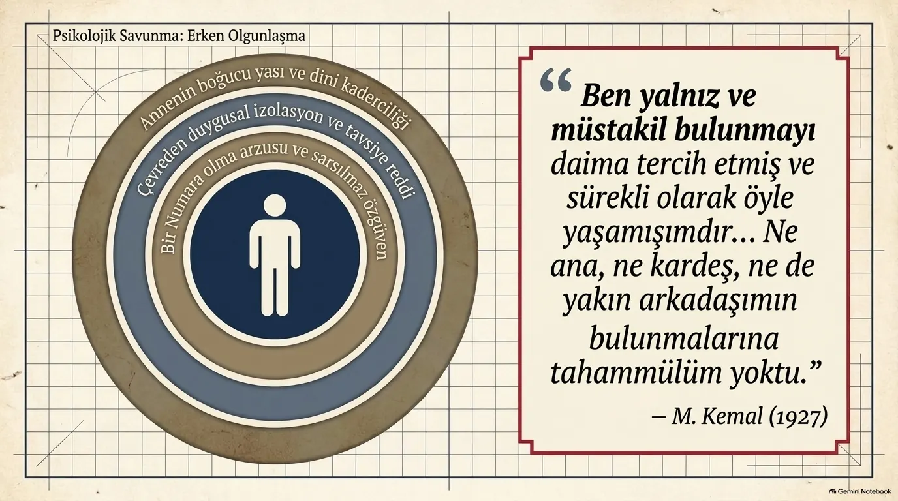
Benlik ve sorumluluk ilişkisini anlatan görsel not.
Mikroyönetim değil; kritik ayrıntıya hâkimiyet
Mustafa Kemal ayrıntıya çok önem veriyordu.
Fakat Gawrych’in Sakarya anlatısı onun savaş alanını mikroyönetmek istemediğini özellikle gösterir.
Bir yandan birliklerin nerede olduğunu, sayılarını, araziyi ve komutanların özelliklerini şaşırtıcı ayrıntıda bilir.
Öte yandan cephedeki komutanların inisiyatifini öldürmemeye çalışır. Bu ikisi sık karıştırılır. Ayrıntıyı bilmek başka şeydir. Her ayrıntıyı kendin yönetmek başka.
Mustafa Kemal’in sistemi daha çok şuna benzer:
Lider tabloyu çok iyi bilmeli; fakat tabloyu oluşturan herkesin elini kendisi hareket ettirmemelidir.
Büyük Taarruz sırasında bir tümenin topçu-piyade koordinasyonuna kadar inebilmesi bunun karşıtı değildir.
Çünkü orada ayrıntı artık stratejik sonucu etkilemektedir.
Lider için esas soru:
Hangi ayrıntıya girmeliyim?
İnsan seçmek
Büyük işler tek kişi tarafından yapılmaz. Bu nedenle liderliğin önemli işlevlerinden biri doğru insanı doğru yerde kullanmaktır. Mustafa Kemal’in çevresinde farklı karakterler ve yetenekler vardır. Fevzi Çakmak’ın askerî organizasyon gücü.
İsmet İnönü’nün Batı Cephesi ve diplomasi rolü. Kazım Karabekir’in Doğu Cephesi tecrübesi. Fethi Okyar’ın siyasî ve diplomatik kapasitesi. Celal Bayar’ın ekonomi alanındaki rolü.
Tevfik Rüştü Aras’ın dış politikadaki uzun görevi. Ve çok daha geniş bir asker-sivil bürokrasi.
Atatürk’ün başarısını yalnız kişisel kapasite üzerinden açıklamak, bu insan ağını yok saymak olur.
Gawrych’in “corporate wisdom” olarak tarif ettiği şey tam budur:
kurumsal akıl. Lider tek başına büyük değildir. Büyük kapasiteyi örgütleyebildiği ölçüde büyüktür.
Görev verirken sonucu tarif etmek
Adnan Nur Baykal’ın kitabında Atatürk’ün liderlik davranışlarından çıkardığı yöneticilik ilkeleri arasında dikkat çekici bir tema vardır:
Görev verilen kişinin yalnız “ne yapacağını” değil; ne zamana kadar yapacağını, hangi kaynaklara sahip olduğunu, hangi sonuçtan sorumlu olduğunu
bilmesi gerektiği vurgulanır. Aynı zamanda astın hiçbir düşünce geliştirmeden yalnız üstten emir beklemesi eleştirilir.
Baykal’ın çıkardığı yönetim dersi, görevin kişiye verildikten sonra onun akıl, bilgi ve yeteneğini sonuna kadar kullanmasının beklenmesidir.
Bugünün yönetim diline çevirirsek:
sorumluluk + kaynak + zaman + yetki.
Bu dört unsurdan biri eksikse görev görünürde verilmiştir; gerçekte ise başarı şansa bırakılmıştır.
İkna etmek: emir ile inanç arasındaki fark
Atatürk’ün hayatında emir vardır. Zorlayıcı devlet gücü de vardır. Bunu romantikleştirmemek gerekir. Fakat aynı lider, özellikle uzun vadeli dönüşümde yalnız emrin yetmediğini de biliyordu.
Millî Mücadele’yi yürütmek için Meclisi ikna etmek zorundaydı. Komutanları ikna etmek zorundaydı. Halktan fedakârlık istemek zorundaydı. Cumhuriyet reformları sırasında şehir şehir dolaşarak değişiklikleri halka anlatıyordu.
Gawrych’in 1923 gezisine ilişkin anlatısı bunu çok iyi gösterir. Mustafa Kemal yalnız yöneticileri denetlemiyor; okullar, kadınların durumu, köylüler, ormanlar, hayvancılık ve gaziler hakkında sürekli sorular soruyor, aynı zamanda yeni Türkiye’yi halka anlatıyordu.
Bu, liderliğin iki yönlü hareketidir:
önce dinlemek, sonra anlatmak.
İnsan psikolojisini okumak
Mustafa Kemal’in insanları gözlemleme yeteneğine Gawrych özellikle önem verir.
Onun yalnız akla değil, sezgi ve duyguya da değer verdiğini; iyi bir dinleyici ve insan gözlemcisi olduğunu belirtir.
Bu özellik yalnız bireysel ilişkiler için değildir. Siyasette de belirleyicidir. Toplum neye hazır? Meclis neyi kabul eder?
Ordu ne kadar dayanabilir? Rakip hangi noktada geri adım atabilir? Bir reformun zamanı geldi mi? Bu soruların hiçbiri yalnız matematikle çözülemez.
Veri gerekir. Ama aynı zamanda insan okuması gerekir.
Bu nedenle Mustafa Kemal’in gerçekçiliğini yalnız maddi gerçekçilik olarak görmek eksiktir.
O, insan gerçekliğini de hesaba katmaya çalışır.
Stratejik amaçta sert, araçta esnek
Mustafa Kemal’in kararlarında dikkat çekici bir başka düzenlilik vardır:
Ana amaç konusunda sert olabilir; araç konusunda daha esnek. Millî egemenlik amaçtır. Bunun için kongre, Meclis, diplomasi veya savaş kullanılabilir. Bağımsız devlet amaçtır.
Ama Batum, Boğazlar veya başka meselelerde taktik uzlaşmalar yapılabilir.
Gawrych, onun dış güçlerle ilişkilerinde pazarlık yaptığının farkında olduğunu ve daha önemli stratejik amaçlara ulaşmak için ikincil konularda esneklik gösterebildiğini belirtir.
Bunu “tactical compromise for strategic ends” — stratejik amaç için taktik uzlaşma olarak tanımlar.
Austin Bay de Mustafa Kemal’in savaş, diplomasi, ekonomi ve siyaseti aynı büyük strateji içinde değerlendirdiğini vurgular.
Bu belki de pragmatizmin en iyi tanımıdır:
İlkesiz olmak değil; aracı amaçla karıştırmamak.
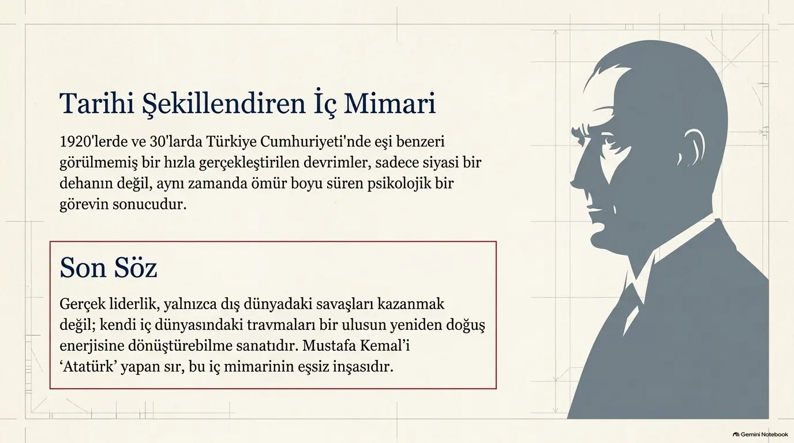
Tarihi şekillendiren çalışma mimarisine görsel yaklaşım.
Lider bazen önde görünmelidir
Austin Bay’in Çanakkale anlatısındaki dikkat çekici unsurlardan biri Mustafa Kemal’in fiziksel varlığının etkisidir.
Bazı anlarda liderin yalnız doğru emri vermesi yetmez. Görünmesi gerekir. Asker onun da aynı riski aldığını görmelidir. Bu davranış modern yönetim diliyle “role modelling” diye açıklanabilir.
Fakat cephedeki karşılığı çok daha serttir. Lider, başkalarından istediği riski kendisinin de almaya hazır olduğunu gösterir.
Gawrych’in erken Mustafa Kemal yazılarında fedakârlık ve subayın çevresindekilerden daha yüksek bilgi, yetenek ve cesaret göstermek zorunda olduğu düşüncesi güçlüdür.
Liderlik makam değildir. Davranış standardıdır.
Karizma tek başına yetmez
Mustafa Kemal’in kişisel karizması şüphesiz güçlüydü. Fakat yalnız karizma ile on dokuz yıl boyunca böylesine farklı problemler çözülemez. Karizma insanları ilk anda etkileyebilir. Sistem ise sonuç üretir.
Adnan Nur Baykal’ın 1999’da yaptığı çalışma bu açıdan ilginçtir. Baykal bir tarih biyografisi yazmak istemez. Mustafa Kemal’e bir yönetim vakası gibi yaklaşır.
Kitabı 50 liderlik özelliği etrafında kurar; her özellik altında sözler, anekdotlar ve bunlardan çıkardığı pratik prensipler verir.
Bu yöntem akademik biyografinin yerine geçmez.
Ama Navigator açısından değerli bir şey yapar:
Soyut “büyük lider” kavramını gözlenebilir davranışlara parçalar. Bilgi toplamak. Çabuk karar vermek. Zamanlamak.
Sorumluluk vermek. Denetlemek. İkna etmek. İnsan yetiştirmek.
Öğrenmek. Takip etmek. Böylece karizma sisinin arkasından davranış çıkar.
Sonuna kadar takip
Bir fikri üretmek ile onu gerçekleştirmek arasında büyük bir boşluk vardır. Atatürk’ün kurucu dönemini özel yapan şeylerden biri bu boşluğu küçültmeye çalışmasıdır. Bir karar verilir. Kanun çıkar.
Ama sonra uygulama başlar. Yeni alfabe çıkarılırsa kendisi kara tahtanın önüne geçer. Ekonomik mesele tartışılacaksa İzmir İktisat Kongresi toplanır. Eğitim düzenlenecekse kurumlar değiştirilir.
Bir savaş yapılacaksa lojistik hazırlanır. Görev verilecekse süre ve sorumlu belirlenir.
Baykal’ın yönetim ilkelerinde sürekli tekrar eden kavramlardan biri budur:
işin sonucunu takip etmek. Bu nedenle Atatürk’ün çalışma sistemi “iyi fikirler” sistemi değildir. Sonuç sistemidir.
Atatürk’ün çalışma sistemi tek satırda
Bütün bu kaynakları yan yana getirdiğimizde Atatürk’ün bir kitapta yazıp bıraktığı resmî “liderlik algoritması” yoktur.
Böyle bir şey iddia etmek doğru olmaz.
Fakat farklı dönemlerde tekrar eden davranışlardan makul bir çalışma döngüsü çıkarılabilir:
Öğren → gözle → gerçeği tanımla → insanı ve şartları anla → görüş al → seçenekleri karşılaştır → zamanı seç → karar ver → doğru kişileri örgütle → yetki ve sorumluluk ver → uygula → sonucu izle → gerekirse yöntemi değiştir → yeniden öğren.
Bu bizim sentezimizdir. Kaynakların tek bir sayfasında bu biçimde yazmaz.
Fakat Gawrych’in yaşam boyu öğrenme, danışma, yetki devri, his–dimağ–vicdan modeli; Bay’in zaman, stratejik görüş ve siyasî-askerî bütünlük vurgusu; Baykal’ın bilgi, karar, zamanlama, görev verme ve takip ilkeleri yan yana getirildiğinde bu döngü belirginleşmektedir.
Peki sistemin karanlık tarafı yok muydu?
Vardı. Güçlü liderliğin güçlü devlet otoritesiyle birleşmesi aynı zamanda önemli riskler taşır.
Gawrych, Cumhuriyet devrimlerinin his, dimağ ve vicdan üzerinden yeni bir toplum inşa etme iddiasına rağmen tek parti döneminin siyasî muhaliflerin, dindarların, Kürtlerin ve başka grupların kamusal ifade alanını sınırladığına dikkat çeker.
Bu noktayı liderlik anlatısından çıkarmamak gerekir.
Çünkü güçlü liderliğin temel paradokslarından biri burada ortaya çıkar:
Bir toplumun dönüşümü için gerekli görülen karar gücü, aynı zamanda o topluma liderden farklı düşünme alanı bırakmayabilir. Atatürk’ün liderlik sistemini anlamak, onu kusursuz ilan etmek değildir. Büyük kapasiteyi ve büyük sonuçları kabul ederken,
gücün maliyetini de görmek gerekir. Aksi hâlde liderlik analizi tarihten çıkar, mitolojiye dönüşür.
His + Dimağ + Vicdan
George Gawrych’in üçlü çerçevesine geri dönelim.
Dimağ tek başına olsaydı:
Atatürk yalnız son derece akıllı bir teknokrat olurdu.
His tek başına olsaydı:
Kitleleri etkileyen fakat yönü belirsiz bir karizmatik lider olabilirdi.
Vicdan tek başına olsaydı:
Güçlü değerlere sahip fakat onları sonuç üreten sisteme çeviremeyen idealist kalabilirdi. Gawrych’in önerisi, Mustafa Kemal’de bu üçünün sürekli etkileşim içinde olduğudur. Akıl gerçeği görür. His insanı görür.
Vicdan amacı seçer.
Sonra liderlik devreye girer:
o amacı sonuç üretecek örgütlü eyleme dönüştürmek.
Liderlik sırrı gerçekten “sır” mıydı?
Belki bu bölümün sonunda sorulması gereken en güzel soru budur. Adnan Nur Baykal kitabına Atatürk’ün Liderlik Sırları adını verir.
Ama önsözünde aslında ilginç bir şey söyler:
Mustafa Kemal bu “sırları” saklamamıştır. Konuşmuş, yazmış, örnek olmuş,
tartışmış, anekdotlarda iz bırakmış, insanlara nasıl çalışılması gerektiğini anlatmıştır. Baykal’ın yaptığı şey bunları bir sistem içinde toplamaktır.
Dolayısıyla belki gerçek sır şudur:
Ortada büyülü bir sır yoktur. Okumak vardır. Hazırlık vardır. Gerçeği kabul etmek vardır.
İnsanları anlamak vardır. Doğru zamanı seçmek vardır. Görüş almak vardır. Karar vermek vardır.
Sorumluluk vermek vardır. İnisiyatif vardır. Takip vardır. Ve bütün bunları yıllar boyunca tekrar etmek vardır.
Atatürk’ün olağanüstülüğü, bu davranışların tek tek hiçbirinin olağanüstü olmamasında olabilir.
Olağanüstü olan:
bunların aynı kişide, çok farklı koşullarda ve çok büyük ölçekte tekrar tekrar birleşmesidir.
Ama şimdi daha büyük bir soru var
Buraya kadar bütün Navigator boyunca Mustafa Kemal’e içeriden baktık. Ailesini gördük. Çocukluğunu gördük. Kendisini nasıl yetiştirdiğini gördük.
Savaşlarını gördük. Devlet kuruculuğunu gördük. Liderlik sistemini gördük. Fakat bütün bunlar hâlâ bir Atatürk anlatısıdır.
Peki dışarı çıktığımızda ne olur?
Dünya tarihindeki başka liderlerle aynı ölçekte değerlendirildiğinde Atatürk nereye yerleşir?
Napoleon. Roosevelt. Lenin. Mao.
Churchill. De Gaulle. Hitler. Stalin.
Tito. Ve 20. yüzyılın diğer büyük siyasal liderleri… Aynı kriterlerle ölçüldüklerinde ne çıkar? İşte burada Halâskâr Navigatörü’nün son ve en şaşırtıcı bölümüne geçiyoruz.
Çünkü sıradaki çalışma bir Türk tarafından yazılmadı. Atatürk’ü övmek için hazırlanmadı. Hatta Atatürk hakkında yazılmış bir kitap bile değil.
Bir Amerikalı psikiyatrist yüzlerce siyasi lideri karşılaştırdı ve onları aynı ölçeğe koydu.
Sonra beklenmedik bir sonuç çıktı. Sonraki bölüm · 08 · DAĞIN KRALI Arnold M. Ludwig ve Siyasi Büyüklüğün Ölçülmesi Atatürk hakkında yazılmamış bir araştırmanın Atatürk hakkında söylediği en çarpıcı şey
KAYNAKLAR
Bu bölümün kaynakları
1. George W. Gawrych, The Young Atatürk: From Ottoman Soldier to Statesman of Turkey, özellikle giriş ve sonuç bölümleri. Mustafa Kemal’in liderliğini his–dimağ–vicdan üçlüsü üzerinden sistematik olarak inceleyen bu bölümün ana akademik kaynağıdır.
2. Gawrych, The Young Atatürk, Zabit ve Kumandan ile Hasbıhal incelemesi. Komutanın güven kazanması, insanların manevi gücünü harekete geçirmesi, bilgi ile pratiğin birleşmesi ve özellikle alt kademelerde inisiyatif geliştirilmesi için.
3. Gawrych, Sakarya ve Millî Mücadele bölümleri. Mustafa Kemal’in ayrıntıya hâkimiyeti, mikroyönetimden kaçınması, komutanların inisiyatifini teşvik etmesi, Fevzi Çakmak ve diğer komutanlardan görüş istemesi için.
4. Gawrych, sonuç bölümü. Atatürk’ün askerî ve bürokratik uzmanlıktan yararlanması, consultation and delegation yaklaşımı, Fevzi–İsmet iş birliği ve “corporate wisdom” olarak tanımlanabilecek kurumsal/ortak akıldan yararlanması için.
5. Gawrych, sonuç bölümü. Dış politika ve savaşta stratejik amaç için taktik uzlaşma; Batum, Boğazlar ve diğer meselelerde esneklik/Realpolitik yaklaşımı için.
6. Austin Bay, Ataturk: Lessons in Leadership from the Greatest General of the Ottoman Empire, Palgrave Macmillan, 2011. “Winning Time”, Çanakkale’de zaman ve inisiyatif, stratejik görüş, askerî-siyasî-ekonomik-diplomatik araçların birlikte kullanılması ve büyük strateji yaklaşımı için.
7. Austin Bay, aynı eser, Çanakkale değerlendirmesi. Mustafa Kemal’in kritik araziyi ve ileride ortaya çıkacak sonuçları hızla kavramasını “dürbün” metaforuyla açıklayan stratejik öngörü yorumu için.
8. Adnan Nur Baykal, Yöneticiler İçin Yeni Bir Bakış: Mustafa Kemal Atatürk’ün Liderlik Sırları, Sistem Yayıncılık, 1999/2005. Eser 50 liderlik özelliğini söz, anekdot ve pratik prensipler üzerinden düzenler; bilgi toplama, doğrulama, hızlı karar, zamanlama, görev verme, sorumluluk, ikna ve takip başlıkları için tamamlayıcı yönetim perspektifi olarak kullanılmıştır.
9. Baykal, aynı eser, “Bilgi ve Tecrübe Sahibi Olma / Bilgi Toplama” bölümleri. Bilgiyi uygulama, doğrulama ve tecrübeden sistemli biçimde yararlanma temaları için.
10. Baykal, aynı eser, “Çabuk Karar Verebilme” ve “Zamanlama Yeteneği” bölümleri. Durumu hızlı kavrama, karar anını kaçırmama ve doğru fikri doğru zamanda uygulama yaklaşımı için.
11. Baykal, aynı eser, yöneticilik prensiplerinin toplandığı bölüm. Görevin kapsamı, kaynakları ve süresinin tanımlanması; astların yalnız emir bekleyen kişiler değil sorumluluk alan yöneticiler hâline getirilmesi; sonuçların izlenmesi ve sürekli gelişim için.
12. *Mustafa Kemal, Zabit ve Kumandan ile Hasbıhal*** ve 1916 tarihli kolordu emirleri; liderlik, subay yetiştirme, mesleki vicdan, inisiyatif ve emir-komuta anlayışına ilişkin birincil kaynaklar.
08 · DAĞIN KRALI
Atatürk Hakkında Yazılmamış Bir Kitabın Şaşırtıcı Sonucu
Arnold M. Ludwig, 1.941 siyasi lideri karşılaştırdığında Mustafa Kemal Atatürk neden en yüksek puanı aldı?
Buraya kadar Mustafa Kemal’e hep yakından baktık. Ailesine girdik. Çocukluğunu gördük. Vamık Volkan’ın psikobiyografik merceğinden kişilik gelişimini tartıştık.
Harbiye’de kendisini nasıl yetiştirdiğini izledik. Savaş meydanlarında kararlarını gördük. Cumhuriyet’i kurarken kullandığı araçları inceledik.
Ve sonunda bütün bunların arkasında tekrar eden bir liderlik sistemi olup olmadığını sorduk.
Fakat hâlâ büyük bir sorun vardı. Bütün bunları Atatürk hakkında yazılmış kaynaklardan okuyorduk. Peki bir an için Türkiye’den çıkarsak? Atatürk’ü, onu anlatmak veya övmek amacıyla yazılmamış bir çalışmanın içine bıraksak?
Yüzlerce siyasi lideri aynı ölçütlerle değerlendiren bağımsız bir araştırmada nereye düşer?
İşte Arnold M. Ludwig’in King of the Mountain: The Nature of Political Leadership adlı kitabı Halâskâr Navigatörü’nün sonunda bu nedenle bu kadar değerlidir.
Çünkü bu kitap Atatürk hakkında değildir. Ama ulaştığı sonuçlardan biri doğrudan Atatürk’e çıkar.
Önce kitabın tuhaf adını anlamak gerekiyor
Arnold M. Ludwig bir tarihçi ya da siyasetçi değildi. Bir psikiyatri profesörüydü.
Uzun yıllar boyunca yaratıcılık, olağanüstü başarı ve insan davranışıyla ilgilenmişti. Daha önce farklı mesleklerde büyük başarı göstermiş insanları incelemiş, ardından dikkatini siyasi liderlere çevirmişti.
Ortaya çıkan çalışma yaklaşık 18 yıl sürdü.
Ludwig, 20. yüzyıldaki tanınmış devletlerin yöneticilerini kapsayan 1.941 liderlik bir havuz oluşturdu. C-SPAN söyleşisinde bunun 199 ülkeyi kapsadığını, daha ayrıntılı biyografik veriye sahip 377 lideri ise derinlemesine incelediğini anlatır. Araştırma süresince 1.200’den fazla biyografi okuduğunu da belirtir.
Kitabın adı ise bilerek provokatiftir:
King of the Mountain — Dağın Kralı.
Ludwig siyasi iktidarın bazı davranışlarını primat topluluklarındaki hiyerarşi, üstünlük kurma ve “alpha male” örüntüleriyle karşılaştırır. Kitabın açılışında kullanılan primat metaforları ve “dağın kralı” oyunu, iktidar mücadelesini insan türünün çok eski davranış kalıplarıyla ilişkilendirme girişimidir.
Dolayısıyla bu bir “büyük liderlerden alınacak on ders” kitabı değildir. Tam tersine Ludwig yer yer alaycıdır.
Hükümdarların narsisizmini, iktidar hırsını, cinsel davranışlarını, paranoyalarını, şiddetini, yalnızlığını ve güçten neden vazgeçemediklerini aynı kitap içinde tartışır.
Atatürk de bu araştırmada dokunulmaz bir tarihsel figür olarak ele alınmaz. Diğer yüzlerce liderden biridir. İşte sonucu ilginç yapan şey tam olarak budur.
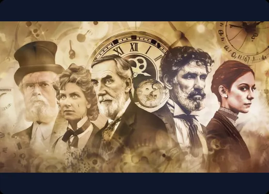
Dünya liderleriyle karşılaştırmalı okuma.
Ludwig’in asıl sorusu: “Büyük” ne demek?
Siyasette “büyük lider” sözü kolay kullanılır. Churchill büyük müdür? Napoleon? Lincoln?
Mao? Stalin? Roosevelt? Atatürk?
Sorunun cevabı, kime sorduğunuza göre değişebilir. Bir İngiliz başka bir liste yapabilir. Bir Fransız başka. Bir Çinli başka.
Bir Türk başka. Üstelik “büyüklük” kolayca ahlaki beğeniyle karışır. Sevdiğimiz kişiyi büyük, sevmediğimizi kötü,
kendi milletimizden olanı daha önemli görmeye eğilimliyiz. Ludwig’in problemi buydu.
Siyaset biliminde Amerikan başkanlarını karşılaştıran sıralamalar buldu; uzman panelleri ve ansiklopedilerde kişilere ayrılan kelime sayısı gibi dolaylı ölçüler gördü. Fakat kültürler arasında uygulanabilecek bir siyasi büyüklük ölçeği bulamadığını söyler.
Sonra yöntemini tersine çevirdi.
Şunu sordu:
İnsanlık tarihinin “büyük siyasi lider” denildiğinde neredeyse herkesin tanıyacağı isimlerinde ortak olan şey nedir?
Julius Caesar. Augustus. Büyük İskender. Napoleon.
Bismarck. George Washington. Abraham Lincoln. Cengiz Han.
Charlemagne. Büyük Petro. Timur. Ve başka tarihsel “siyasi ölümsüzler”.
Ludwig bunlardan 26 kişilik bir referans grubu oluşturdu. Sonra onların başarılarında tekrar eden ortak özellikleri aradı. Buradan 11 ölçüt çıktı. Ve Political Greatness Scale — PGS, Siyasi Büyüklük Ölçeği doğdu.
Bir lider nasıl puanlanıyor?
Ludwig’in ölçeği bir kişilik testi değildir. “Zeki mi?” “Karizmatik mi?” “İyi insan mı?”
gibi sorularla başlamaz. Önce sonuçlara bakar.
Bir lider yeni bir devletin kurulmasında ya da ülkenin bağımsızlığını kazanmasında ne ölçüde belirleyici oldu?
Ülkenin coğrafi veya siyasi etkisini genişletti mi? Ne kadar süre iktidarda kaldı? Savaşta başarılı oldu mu? Toplumun yapısını değiştirdi mi?
Ekonomik sonuç neydi? Bölgesel veya uluslararası devlet adamlığı gösterdi mi? Kendine özgü ya da topluma dayattığı bir ideoloji oluşturdu mu? Ahlaki örneklik algısı neydi?
Ölümünden veya iktidardan ayrılmasından sonra siyasi mirası ne kadar güçlü kaldı? Ve yönettiği ülkenin nüfusu ne büyüklükteydi? Ludwig bu on bir alanın her birine belirli puanlar verir ve toplam PGS değerini oluşturur.
Ölçeğin önemli özelliği şudur:
Bir lider tek bir olağanüstü başarıyla zirveye çıkmaz. Birden fazla alanda sonuç üretmesi gerekir.
Ve tam burada Mustafa Kemal Atatürk’ün biyografisi ölçeğin yapısıyla şaşırtıcı biçimde örtüşmeye başlar.
Sonuç
2002 yılında C-SPAN’de Brian Lamb, Ludwig’in karşısında kitabı açıyor ve doğrudan soruyor:
20. yüzyıl için oluşturduğunuz siyasi büyüklük ölçeğinde birinci Atatürk mü?
Ludwig’in cevabı:
Evet.
Lamb ardından puanları okuyor:
Mustafa Kemal Atatürk — 31 Mao Zedong — 30 Franklin D. Roosevelt — 30 Joseph Stalin — 29
Vladimir Lenin — 28 Ho Chi Minh — 27 Charles de Gaulle — 27 Deng Xiaoping — 27
Tito — 25 Suharto — 25. Burası Halâskâr Navigatörü’nün en çarpıcı anlarından biridir.
Çünkü yaklaşık yüz yıldır Türkiye’de Atatürk hakkında söylenen övgü cümlelerinden biriyle karşı karşıya değiliz.
Bir Amerikalı psikiyatristin, dünya liderlerini karşılaştırmak amacıyla geliştirdiği ölçeğin sonucuna bakıyoruz.
Ve listenin en üstünde:
Mustafa Kemal Atatürk vardır. 31 puan. 20. yüzyıl örneklemindeki en yüksek PGS değeri.
Ama hemen bir fren: Ludwig’in kendisi uyarıyor
Bu sonucu “bilim kanıtladı, Atatürk dünyanın tartışmasız en büyük lideridir” biçiminde aktarmak Ludwig’in kendi yöntemine aykırı olur.
Çünkü aynı röportajda Ludwig hemen uyarır:
Bu rakamlar “taşa kazınmış değildir.”
Yakın puanlı liderlerin beş-yedi puanlık kümeler içinde düşünülmesinin daha anlamlı olabileceğini söyler. Yani 31 ile 30 arasındaki bir puan farkını olimpiyat finalindeki santimetre farkı gibi yorumlamaz.
Dolayısıyla doğru ifade şudur:
Ludwig’in PGS sisteminde Atatürk 31 puanla örneklemin en yüksek değerini almıştır.
Yanlış ifade ise:
“Bilimsel olarak dünyanın gelmiş geçmiş kesinlikle 1 numaralı lideri olduğu kanıtlandı.” Ludwig böyle bir iddia kurmuyor.
Zaten ölçeği yalnız 20. yüzyıl yöneticilerine uygulanmıştır; tarihsel “ölümsüzler” ölçütü oluşturmak için kullanılmıştır.
Bu ayrım Halâskâr’da mutlaka korunmalıdır. Çünkü sonuç yeterince çarpıcıdır. Onu büyütmek için abartmaya gerek yoktur.
Peki neden Atatürk?
Brian Lamb röportajda aynı soruyu sorar:
“Atatürk neden bu insanların üstüne çıktı?” Ludwig’in cevabı oldukça doğrudandır. Atatürk’ün yeni Türkiye’nin yaratılmasındaki belirleyici rolünü, ülkenin kurucu lideri olmasını,
ve Türkiye’de gerçekleştirdiği derin toplumsal dönüşümü özellikle vurgular. Atatürk’ün çok farklı düzeylerde olağanüstü etki yarattığını söyler.
Buraya kadar izlediğimiz hayat çizgisini Ludwig’in 11 maddelik ölçeğiyle yeniden düşündüğümüzde neden yüksek puanın çıktığı daha iyi anlaşılır.
1920’lerin başında bağımsızlık savaşının lideridir. Yeni devletin kuruluşunda merkezî rol oynar. Askerî zaferi vardır. Yaklaşık on beş yıl Cumhurbaşkanıdır.
Hukuk sistemini değiştirir. Eğitim sistemini değiştirir. Alfabeyi değiştirir. Kadının hukuki ve siyasi statüsünde önemli dönüşümler gerçekleştirir.
Din-devlet ilişkisini değiştirir. Yeni ulusal kurumlar oluşturur. Ekonomik ve diplomatik politika yürütür. Ve ölümünden sonra siyasi mirası olağanüstü ölçüde devam eder.
Ludwig’in ölçeği tam olarak bu tür çok boyutlu siyasi sonuçları puanlamaktadır. Bu nedenle Atatürk tek bir sütunda güçlü değildir. Birçok sütunda aynı anda puan üretmektedir.
“Yoktan bir şey”: ölçeğin Atatürk’e en çok uyan sorusu
PGS’nin ilk maddesinin adı dikkat çekicidir:
Something From Nothing.
Kelimesi kelimesine:
“Hiçbir şeyden bir şey yaratmak.”
Ludwig burada yaratıcı siyasi başarının en yüksek örneklerinden biri olarak yeni bir ülke kurmayı, bağımsızlık kazanmayı veya ülkenin siyasal sınır ve yapısını yeniden tanımlamayı görür.
Atatürk de Ludwig’in kitabındaki “founders, liberators, fathers or creators of their nation” — devlet kurucuları, kurtarıcılar veya ulusun kurucu figürleri — tablosunda doğrudan yer alır.
Halâskâr anlatısının bütününe bakınca bunun neden önemli olduğu görülür. Mustafa Kemal yalnız mevcut bir devlette başarılı bir Cumhurbaşkanı olmadı. Cumhurbaşkanı olacağı devletin ortaya çıkışında merkezi rol oynadı. Önce bağımsızlık mücadelesini yönetti.
Sonra monarşi kaldırıldı. Cumhuriyet ilan edildi. Yeni hukuki ve siyasi yapı kuruldu. Bu nedenle Ludwig açısından Atatürk’ün hikâyesi yalnız yönetme hikâyesi değildir.
Kurma hikâyesidir.
İkinci büyük alan: savaş
Ludwig siyasi büyüklük ölçeğine doğrudan Military Prowess — askerî başarı maddesini koyar. Bu ölçüt çağdaş okuyucuyu rahatsız edebilir. Neden savaş kazanmak bir siyasi lideri “büyük” yapsın? Ludwig bunun rahatsız edici olduğunu kendisi de bilir.
Kitabın kimi bölümlerinde tarihsel büyüklüğün ne kadar problemli bir kavram olduğunu özellikle tartışır.
Çünkü tarih çoğu zaman huzur içinde yaşayan, savaş çıkarmayan, ülkesini büyütmeye çalışmayan liderleri değil; büyük savaşları, büyük kırılmaları ve büyük dönüşümleri gerçekleştiren kişileri hatırlar.
Mustafa Kemal açısından askerî puanın kaynağı açıktır. Çanakkale. Millî Mücadele. Sakarya.
Büyük Taarruz.
Fakat önceki bölümde gördüğümüz gibi onun askerî değeri yalnız zafer sayısından ibaret değildir.
Trablusgarp’tan Filistin’e, savunmadan geri çekilmeye ve stratejik taarruza kadar geniş bir tecrübe repertuarı vardır.
Bu yüzden Ludwig’in ölçeğinde askerî başarı, Atatürk biyografisinin güçlü fakat tek olmayan bir sütunudur.
En belirleyici sütunlardan biri: toplumu değiştirmek
Ludwig’in beşinci PGS boyutu Social Engineering — toplumsal mühendislik / toplumsal dönüşümdür.
Bugün “sosyal mühendislik” sözcüğü kulağa çoğu zaman olumsuz gelir.
Ludwig ise terimi daha teknik anlamda kullanır:
Bir lider toplumun temel kurumlarında ne ölçüde büyük değişim yarattı?
Kitabında Atatürk’ü doğrudan “visionaries — vizyonerler” ve yoğun toplumsal dönüşüm gerçekleştiren liderler arasında değerlendirir. Kadınların statüsündeki değişiklikleri, modern medeni hukuku, alfabe reformunu, soyadı uygulamasını ve kıyafet düzenlemelerini örnek olarak sayar.
Bu nokta bir önceki “Kurucu” bölümümüzle doğrudan birleşir.
Ludwig’in değerlendirmesinde Atatürk yüksek puan alır çünkü yalnız yeni devlet kurmamıştır.
Devletin içinde yaşayacağı toplumu da yeniden düzenlemeye çalışmıştır. Burada tarihsel başarı ile siyasi tartışma aynı anda vardır. Bazıları bu dönüşümü modernleşme ve özgürleşme olarak görür. Bazıları yukarıdan aşağı, otoriter bir toplum mühendisliği olarak eleştirir.
Ludwig’in ölçeği bu siyasi tartışmayı çözmeye çalışmaz.
Daha basit bir soru sorar:
Toplumun temel yapısı değişti mi?
Atatürk örneğinde Ludwig’in cevabı çok güçlü biçimde:
Evet.
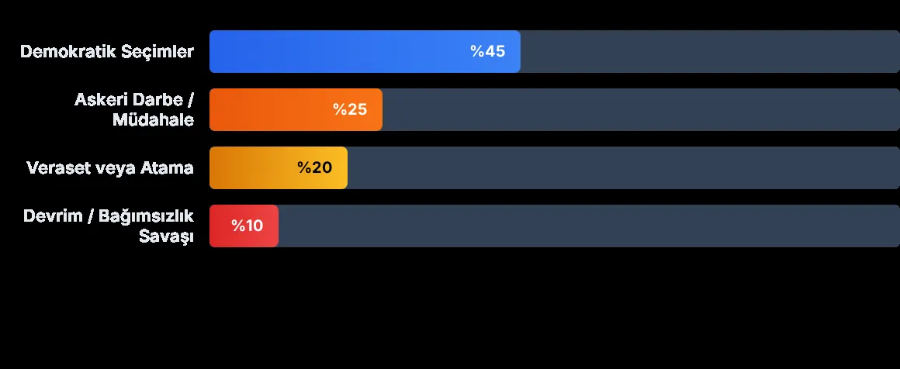
Karşılaştırmalı veri sunumlarından biri.
Çok önemli ayrım: “büyük” demek “iyi” demek değildir
Ludwig’in çalışmasının belki en önemli metodolojik uyarısı budur. PGS’de yüksek puan almak kişinin ahlaken iyi olduğu anlamına gelmez. Ludwig bunu açıkça yazar.
Üst sıralardaki liderler arasında hayran olduğu Roosevelt ve Churchill gibi kişiler de vardır; Hitler ve Stalin gibi hiç hayran olmadığı kişiler de.
Onun ifadesiyle büyük siyasi başarı ile soylu veya takdire değer başarı aynı şey değildir.
Bu nedenle Mao’nun Atatürk’ten yalnız bir puan geride olması:
“Ludwig Mao’yu neredeyse Atatürk kadar iyi insan sayıyor” anlamına gelmez.
Stalin’in yüksek puanı:
“Stalin ahlaki olarak büyük liderdi” demek değildir. Ölçek siyasi etkiyi ve tarihsel sonucu ölçmeye çalışmaktadır.
Bir lider ülkesini kökten dönüştürdüyse, büyük savaşlar yürüttüyse, ideolojik sistem kurduysa ve tarihte çok güçlü iz bıraktıysa siyasi büyüklük puanı artabilir.
O dönüşüm korkunç sonuçlar üretmiş olsa bile. Bu, PGS’nin hem gücü hem sınırıdır.
Hatta ölçeğin bazı maddeleri özellikle tartışmalıdır
PGS’ye eleştirel bakmak da gerekir.
Örneğin:
toprak genişletmek puan getirir. savaş kazanmak puan getirir. uzun süre iktidarda kalmak puan getirir. toplumu büyük ölçüde yeniden biçimlendirmek puan getirir.
yönetilen ülkenin nüfus büyüklüğü puana katkıda bulunur. Bunlar “iyi yönetim” ile aynı şey değildir.
Bir ülkeyi kırk yıl huzur içinde yöneten, savaş çıkarmayan, sınır genişletmeyen, topluma kendi ideolojisini dayatmayan bir devlet adamı düşük puan alabilir.
Ludwig bunu ironik biçimde kendisi de kabul eder.
Bazı liderlerin siyasi büyüklük açısından “talihsizliği”, savaş yapmamış, ülke sınırlarını genişletmemiş ve toplum üzerine kendi vizyonlarını zorla yüklememiş olmalarıdır; fakat bunun halklarının sağlığı ve refahı için daha iyi olmuş olabileceğini söyler.
Bu nedenle PGS’ye:
“Dünyanın en iyi liderleri listesi” diye bakmamalıyız.
Daha doğru tanım:
“Tarihte büyük iz bırakan siyasi iktidarların sonuç yoğunluğunu karşılaştırma girişimi.”
Ludwig ölçeğini nasıl kontrol etti?
Bir ölçek yapmak kolaydır. On bir kriter yazarsınız. Puan verirsiniz. Sonra istediğiniz kişiyi birinci ilan edebilirsiniz.
Ludwig’in çalışmasını bundan ayıran nokta, ölçeği oluşturduktan sonra güvenirlik ve geçerlilik açısından sınamaya çalışmasıdır.
İki farklı değerlendiricinin aynı biyografik bilgiye bakarak yaklaşık benzer toplam puanlara ulaşıp ulaşmadığını test etti.
Ayrıca PGS sonuçlarını dış göstergelerle karşılaştırdı.
Örneğin 377 lider için PGS puanları ile Encyclopaedia Britannica ve Encyclopedia Americana’da bu kişilere ayrılan biyografik metin uzunluğu arasında istatistiksel olarak anlamlı ilişki buldu.
Bu test “ölçeğin doğru olduğu kanıtlandı” anlamına gelmez. Ansiklopedide çok yer kaplamak da siyasi büyüklüğün kusursuz ölçütü değildir.
Ama Ludwig en azından kendi sistemini yalnız kişisel sezgisine bırakmamış; ölçmeye çalıştığı şeyin başka göstergelerle ilişkili olup olmadığını test etmiştir.
Bu yönüyle çalışma, popüler “en büyük on lider” listelerinden belirgin biçimde ayrılır.
Sonra Ludwig ikinci soruya geçti: Büyük sonuçları üreten insanlar farklı mı?
PGS yalnız siyasi sonuçları ölçüyordu.
Ludwig daha sonra başka bir soru sordu:
Üst sıralardaki liderlerin kişiliklerinde ortak örüntüler var mı?
Bunun için liderlerin aile yapıları, eğitimleri, gençlik davranışları, sağlıkları, kişilikleri ve hayatlarındaki önemli olaylar dahil yüzü aşkın değişkeni karşılaştırdı.
İlginç biçimde büyüklerle diğerleri birçok konuda birbirine çok benziyordu. Sosyoekonomik kökenleri benzerdi. Eğitim düzeyleri düşündüğümüz kadar farklı değildi. Okuma alışkanlıkları veya okul başarıları tek başına ayırıcı değildi.
Fakat bazı davranış kümeleri üst grupta daha sık görülüyordu.
Ludwig bunlara:
Seven Pillars of Greatness — Büyüklüğün Yedi Sütunu adını verdi.
Bunlar:
Dominance — baskınlık / öne çıkma dürtüsü Contrariness — karşı çıkma, yerleşik otoriteye direnme Personal Presence — güçlü kişisel varlık / karizma Change Agent — değişim aktörü olma
Vanity — güçlü benlik algısı, gurur ve kimi zaman kibir Courage — cesaret ve kişisel risk alma Wary Unease — tetikte huzursuzluk; rahat edememe, sürekli yeni problem ve tehdit arama olarak özetlenebilir.
Burada ilginç olan, önceki Halâskâr bölümlerinde kaynaklardan bağımsız biçimde yakaladığımız bazı özelliklerin Ludwig’in geniş karşılaştırmalı çalışmasında yeniden karşımıza çıkmasıdır.
Dominance: grubun içinde yalnız bulunmak değil, yön vermek istemek
Ludwig’in ilk sütunu dominancetır. Bunu kaba biçimde “otoriter olmak” diye çevirmek yanlış olur.
Ludwig daha temel bir dürtüden söz eder:
Grup içinde en etkili kişi olma, yönü belirleme, ve kendisinin üzerinde başka bir otorite bulunmasına direnme eğilimi.
Bu bölümde Atatürk’ü doğrudan örnek verir ve onu “tüm zamanların en karizmatik ve dinamik yöneticilerinden biri” olarak nitelendirir. Ardından Halide Edip’le yaşandığı aktarılan, Mustafa Kemal’in güçlü hükmetme isteğini gösterdiğini düşündüğü sert bir tartışma anekdotunu kullanır.
Burada Ludwig Atatürk’e methiye yazmıyor.
Tam tersine kişiliğinin rahatsız edici olabilecek bir tarafını da masaya koyuyor:
Güçlü liderlik isteği, güçlü kontrol isteğine dönüşebilir. Bu, 07. bölümde tartıştığımız danışma ve yetki devriyle çelişkili görünebilir. Aslında büyük liderliğin içindeki gerilimlerden biridir. Mustafa Kemal başkalarının görüşüne başvurabilir.
Yetki verebilir. Ama nihai yön konusunda güçlü bir hakimiyet arzusu taşıyabilir. İnsan karakteri tek boyutlu değildir.
Contrariness: kurulu otoriteyi olduğu gibi kabul etmeme
Ludwig’in ikinci sütunu contrariness’tır. Bunu yalnız “asi olmak” diye çevirmek eksik kalır. Ludwig, büyük liderlerde üst konumdaki otoriteye otomatik itaat etmeme, sınırları zorlama ve istenmeyen tavsiye ya da eleştiriye karşı refleksif direnç gösterme eğiliminin daha sık görüldüğünü söyler. Kendi verisinde bu özellik büyük liderlerde diğerlerine göre daha yaygındır; fakat tek başına büyüklük üretmez.
Mustafa Kemal’in hayatına bu mercekten bakıldığında erken örnekler vardır. Annesinin istememesine rağmen askerî okul sınavına girmesi aile düzeyindeki ilk bağımsızlık kararı olarak okunabilir; fakat daha güçlü örnekler meslek hayatında görülür. Harp Akademisi’nde Abdülhamid yönetimine karşı gizli muhalefet çevresine katılması, Şam’da Vatan ve Hürriyet’i örgütlemesi, Selanik’te İttihat ve Terakki’nin iç liderliğinin dışında kalmasına rağmen görüşlerinden vazgeçmemesi ve 1909 sonrasında ordunun parti siyasetinden çekilmesini açıkça savunması, yerleşik otoriteyi olduğu gibi kabul etmeyen bir çizgi oluşturur.
Erickson bu özelliğin bedelini de gösterir: Mustafa Kemal’in üstlerini eleştirirken kullandığı sivri üslup ve kişisel hırsı zaman zaman kariyerini merkezden uzaklaştırmış, onu yeniden yol açmak zorunda bırakmıştır. Dolayısıyla contrariness yalnız “kahramanca başkaldırı” değildir; iş birliğini zorlaştırabilen, kişiyi kurum içinde yalnızlaştırabilen bir tarafı da vardır.
Aynı gerilim iktidara ulaştığında daha hassas hâle gelir. Kurulu düzene direnerek yükselen bir liderin, kendi kurduğu düzene yönelen dirence ne kadar alan açacağı ayrı bir sorudur. Tek parti döneminde siyasî çoğulculuğun daralması, bu yüzden contrariness başlığının yalnız güçlü yan değil, liderlik paradoksu olarak da okunmasını gerektirir: Otoriteye direnme kapasitesi ile başkalarının direncine tahammül kapasitesi aynı şey değildir.
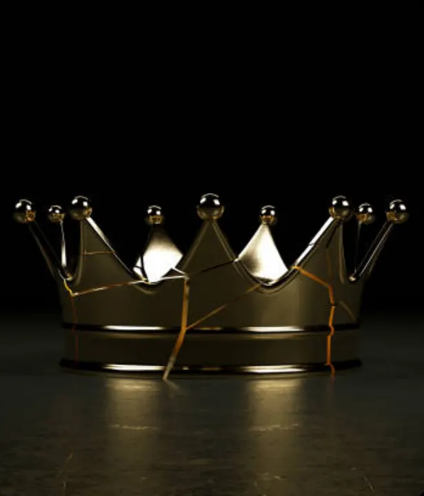
Siyasi liderlikte sembol, ritüel ve kişisel varlık.
Personal Presence: konuşmadan bile odayı değiştirebilmek
Ludwig’in üçüncü sütunu Personal Presence — kişisel varlıktır. Karizmayı yalnız güzel konuşmakla açıklamaz.
Hatta verilerinde büyük liderlerle diğer liderler arasındaki hitabet farkının şaşırtıcı derecede küçük olduğunu söyler.
Daha belirgin fark:
kişinin bulunduğu ortamda yarattığı etkidir. Duruş. Kendine güven. Göz teması.
Soğukkanlılık. Bedensel kontrol. Ve başkalarının o kişide “otorite” hissetmesi.
Ludwig’in verisinde üst düzey siyasi büyüklük grubunda karizmatik kişisel varlık daha sık görülür.
Mustafa Kemal hakkında çağdaşların bıraktığı çok sayıdaki tanıklığın sürekli gözlere, bakışa, soğukkanlılığa ve odadaki hâkimiyetine dönmesi bu açıdan ilginçtir.
Tek başına kanıt değildir.
Ama Ludwig’in karşılaştırmalı modeliyle güçlü biçimde örtüşen bir tarihsel gözlem alanıdır.
Change Agent: Atatürk’ün en belirgin Ludwig sütunu
Yedi sütunun içinde Atatürk’e en açık biçimde uyanlardan biri Change Agent — değişim aktörüdür.
Ludwig siyasi büyüklüğün doğası gereği tarihin kriz zamanlarında karar veren, temel kurumları değiştiren ve toplumun ideolojik veya yapısal dokusuna müdahale eden liderleri daha çok hatırladığını söyler.
Verisinde üst PGS grubundaki yöneticilerin yaklaşık yüzde 60’ı devletin veya toplumun temel yapısında büyük değişiklikler gerçekleştirmişken alt grupta bu oran yaklaşık yüzde 31’dir.
Atatürk tam bu kategoriye oturur. Saltanat. Halifelik. Hukuk.
Eğitim. Alfabe. Kadının statüsü. Devlet-din ilişkisi.
Ekonomik kurumlar. Ulusal kimlik. Takvimden ölçü sistemine kadar günlük hayat.
Dolayısıyla Ludwig’in Atatürk değerlendirmesinde “derin sosyal değişim” ifadesinin merkezde olması tesadüf değildir.
Vanity: güçlü benlik algısının yapıcı ve riskli yüzü
Ludwig’in beşinci sütunu vanity’dir; fakat onun kullandığı anlam gündelik Türkçedeki “kibir”den daha geniştir. Ludwig, Roma’daki dignitas kavramından hareketle bunu composure, self-confidence ve poise — soğukkanlılık, güçlü özgüven ve kendinden emin duruş — ile açıklar. Bu nitelik aşırılaştığında narsisizm, egoizm, kendini beğenmişlik veya kibir gibi görünümler kazanabilir; fakat kavramın çekirdeği kişinin kendi değer ve kapasitesine duyduğu güçlü inançtır.
Burada metodolojik bir sınır koymak gerekir: Ludwig, Atatürk’e özel bir “vanity puanı” vermez. Dolayısıyla aşağıdaki eşleştirme Ludwig’in doğrudan teşhisi değil, onun çerçevesini Mustafa Kemal biyografisine temkinli biçimde uygulayan bir yorumdur.
Mustafa Kemal’in yaşamında güçlü özgüven ve tarihsel rol duygusunu destekleyen çok sayıda davranış vardır. Kriz anlarında sorumluluğu üzerine alabilmesi, üst komutadan farklı düşündüğünde görüşünü savunması, 1919 sonrasında siyasî ve askerî sorumluluğu giderek kendi üzerinde toplaması ve Cumhuriyet reformlarında yüksek bir kişisel yön duygusu göstermesi bu çerçeveyle uyumludur. Gawrych de onun başarısında ambition — hırs ve yükselme isteği — unsurunu açıkça önemser.
Öte yandan Erickson, Mustafa Kemal’in kişisel hırsının, sivri mizacının ve üstlerini eleştirmekte zaman zaman kötü muhakeme göstermesinin kariyerini sekteye uğrattığını belirtir. Bu gözlem, Ludwig’in “özgüven ile kibir arasındaki çizgi bazen belirsizleşir” uyarısıyla birlikte okunabilir. Buradan “Mustafa Kemal narsisistti” gibi klinik veya ahlaki bir hüküm çıkarmak doğru değildir; kaynakların desteklediği daha ölçülü sonuç, olağanüstü güçlü bir benlik güveninin hem karar cesareti üretebilmesi hem de ilişkilerde sürtünme yaratabilmesidir.
Bu nedenle vanity, Halâskâr’da övgü ya da suçlama başlığı olarak değil, güçlü liderliğin maliyetlerinden birini görünür kılan kavram olarak kullanılmalıdır: Kendi kapasitesine yeterince inanmayan biri büyük tarihsel riskleri üstlenmeyebilir; fakat aynı inanç sınırını kaybettiğinde eleştiriye kapalılık ve kişiselleşmiş iktidar riski doğurabilir.
Cesaret: başkasını riske gönderen kişinin kendisi de risk aldı mı?
Altıncı sütun Courage — cesarettir. Ludwig burada çok doğrudan bir ölçüt kullanır.
Büyük bir amaç uğruna başkalarından risk isteyen liderin kendisi de kişisel tehlikeye girmiş midir?
Üst gruptaki liderlerin siyasi yükselişlerinden önce tutuklanma, hapis, sürgün, suikast girişimi veya doğrudan fiziksel tehlikeyle karşılaşma oranlarının daha yüksek olduğunu gösterir.
Mustafa Kemal’in hayatında bunun karşılığını bulmak zor değildir. Trablusgarp’a gizlice geçiş. Çanakkale. Kafkasya.
Suriye. Anadolu’ya geçiş. İstanbul hükümetine ve işgal güçlerine rağmen Millî Mücadele’yi örgütleme. Sakarya.
Ve cepheye fiziksel olarak yakın komuta tarzı. Ancak burada önemli nokta, cesaretin tek başına büyüklük üretmemesidir. Ludwig’in sistemi cesareti diğer sütunlardan biri olarak görür. Çünkü cesaret muhakeme olmadan pervasızlığa dönüşebilir.
Wary Unease: neden bazı insanlar hiçbir zaman “tamam” demez?
Ludwig’in en psikolojik ve belki en ilginç kavramı yedinci sütundur:
A Wary Unease.
Türkçeye yaklaşık:
tetikte bir huzursuzluk diye çevrilebilir.
Ludwig büyük başarı sahiplerinde sık rastladığı bir özelliği tarif eder:
Başarıdan sonra uzun süre rahat edememek. Yeni problem aramak. Sürekli eksik görmek. Tatminsiz olmak.
Tehdide karşı uyanık kalmak. Ve yüksek enerjiyi yeni projelere yöneltmek.
Onun yorumuna göre bu iç huzursuzluk bazı liderlerde yüksek üretkenliğin yakıtına dönüşebilir.
Ludwig aynı bölümde Atatürk’ü, Churchill, Mao, Theodore Roosevelt ve Lyndon Johnson gibi bazı büyük liderlerle birlikte hayatlarında depresif dönemler yaşadığına ilişkin biyografik kayıtlar bulunan kişiler arasında kodlar. Bunun geçmişe dönük biyografik bir sınıflandırma olduğunu, modern klinik tanı gibi okunmaması gerektiğini özellikle ayırmak gerekir.
Fakat daha geniş “huzursuzluk” fikri Mustafa Kemal’in yaşam çizgisiyle dikkat çekici biçimde örtüşür.
Bir problemi çözünce durmaz. Askerliği öğrenir. Siyaseti düşünmeye başlar. Savaşı kazanır.
Devleti değiştirir. Hukuku değiştirir. Eğitimi değiştirir. Alfabeyi değiştirir.
Tarihi ve dili tartışır. Ekonomiyi ele alır. Dış politikaya döner.
Bu hareketlilik, Ludwig’in “başarıdan sonra bile rahat edemeyen lider” modeline uygun görünür.
Ludwig’in “büyük adam” tartışmasına verdiği cevap
Kitabın en olgun noktalarından biri burada gelir.
Ludwig’in verileri belirli kişilik özellikleri ile siyasi başarı arasında güçlü ilişkiler gösterir.
Hatta kullandığı istatistiksel model, bazı kişilik kümelerinden hareketle liderlerin PGS’nin üst veya alt üçte birlik grubunda yer almasını yaklaşık %88 doğrulukla sınıflandırabilmiştir.
İlk bakışta bundan şu sonuç çıkabilir:
“Tarihi büyük insanlar yapar.” Ama Ludwig bu kadar ileri gitmez. Tam tersine önemli bir fren koyar.
Büyük liderlerin çoğunun, özelliklerini kullanabilecekleri doğru zamanda ve doğru tarihsel koşullarda ortaya çıktığını söyler.
Kişilik ile siyasi olay arasında ilişki bulunması:
“o kişi olmasaydı olay kesinlikle gerçekleşmezdi” anlamına gelmez. Korelasyon doğrudan nedensellik değildir.
Ludwig’in daha incelikli önerisi şudur:
Büyük liderler tarihin tek yaratıcısı değil, tarihsel katalizörler olabilirler. Koşullar zaten vardır.
Ama belirli insan özellikleri, o koşulların nasıl kullanılacağını ve sonucun büyüklüğünü değiştirebilir.
Bu fikir Mustafa Kemal’i anlamak için son derece kullanışlıdır.
Mustafa Kemal olmadan tarih yine değişirdi. Ama nasıl?
1918’de Osmanlı İmparatorluğu zaten çökmüştü. Milliyetçilik zaten vardı. Anadolu’da işgale karşı direniş zaten başlıyordu. Modernleşme Osmanlı’nın son yüzyılında zaten devam ediyordu.
Cumhuriyetçilik, laiklik, milliyetçilik, kadın eğitimi ve Batılılaşma gibi fikirlerin hiçbiri Mustafa Kemal tarafından sıfırdan icat edilmedi.
Dolayısıyla:
“Mustafa Kemal olmasaydı hiçbir şey olmazdı” demek tarihsel olarak savunulamaz.
Fakat Ludwig’in katalizör modeli başka bir soru sordurur:
Aynı koşullar, Mustafa Kemal olmadan aynı hızda, aynı bileşimde ve aynı sonuçla mı gelişirdi?
Bunu bilemeyiz. Tarih deneyini tekrar edemeyiz.
Fakat Halâskâr boyunca gördüğümüz şey şudur:
Mustafa Kemal hazır fırsatları yalnız kullanmadı. Farklı unsurları aynı anda bir araya getirdi. Askerî kapasite. Siyasi meşruiyet.
Diplomasi. Meclis. Modernleşme. Kurumlar.
Eğitim. Hukuk. Ve kişisel liderlik.
Ludwig’in ölçeğinde yüksek puan tam da bu birden fazla tarihsel etki alanının aynı kişide birleşmesinden çıkar.
Peki “Dağın Kralı” Atatürk mü?
Bu başlık kolayca yanlış anlaşılabilir. Ludwig’in kitabında “Dağın Kralı” belirli bir kişiye verilmiş resmî unvan değildir. Kitabın genel metaforudur. Siyasi iktidarın doğasını anlatır.
Dolayısıyla:
“Ludwig Atatürk’e Dağın Kralı unvanını verdi” demek doğru olmaz.
Doğru ifade şudur:
*Ludwig’in King of the Mountain adlı araştırmasında, Political Greatness Scale uygulanmış 20. yüzyıl liderleri içinde Mustafa Kemal Atatürk 31 puanla en yüksek sonucu almıştır.*
Ve bence Halâskâr’ın bölüm adı tam bu nedenle güçlüdür.
Çünkü kitabın adıyla sonucun yan yana gelmesinden doğal bir metafor doğar:
Araştırmacı dağı kurmuştur. Liderleri aynı yamaca koymuştur. Ve hesap sonunda Atatürk en üst puanda görünmüştür. Bunun ötesi edebî metafordur.
Bilimsel iddia değil.
İki ayrı dış karşılaştırma: Arsht ve Ludwig
Halâskâr’da artık iki bağımsız karşılaştırmalı çalışma vardır; fakat bunlar aynı şeyi ölçmez. Arnold Ludwig’in Political Greatness Scale’i siyasi büyüklüğü, yani devlet kurma, askerî başarı, toplumsal dönüşüm, devlet adamlığı, ideoloji ve kalıcı miras gibi çok boyutlu sonuçları karşılaştırır. Bu ölçekte Atatürk 31 puanla Ludwig’in 20. yüzyıl örneklemindeki en yüksek değeri alır.
Ethan Arsht’ın WAR modeli ise çok daha dar bir soruya yönelir: muharebe düzeyindeki taktik “değer katkısı”. Canlı interaktif görselleştirmede Mustafa Kemal Atatürk 11 muharebe, 3.582 WAR ve muharebe başına 0.326 WAR ile 12. sıradadır; Napoleon 16.703 ile ilk sıradadır. Arsht’ın kendi uyarısıyla bu sonuç kesin bir askerî tarih hükmü değil, Wikipedia tabanlı büyük bir veri seti üzerinde kurulmuş düşünce deneyidir.
Bu nedenle “Ludwig’de 1., WAR’da 12.” ifadesini tek bir üstünlük sıralamasının iki sonucu gibi okumamak gerekir. Birincisi siyasi-tarihsel etkiyi, ikincisi taktik muharebe değerini ölçmeye çalışır. Hatta tam da bu farklılık Halâskâr açısından ilginçtir: Atatürk bir modelde çok boyutlu siyasi sonuçlarıyla, diğerinde muharebe bazlı taktik performansıyla görünür olur.
İki model birbirini kanıtlamaz ve birleştirilemez. Ancak farklı veri ve yöntemlerle Türkiye merkezli biyografi literatürünün dışından gelen iki ayrı karşılaştırma noktası sunarlar. Bu nedenle Navigator’da yan yana gösterilebilirler; fakat başlıkları, ölçütleri ve metodolojik sınırlılıkları açıkça ayrılmalıdır.
Belki asıl çarpıcı olan birincilik değil
Atatürk’ün 31 puanla en üst sırada çıkması ilk bakışta bu bölümün en önemli sonucudur. Fakat Halâskâr’ın tamamını okuduktan sonra bence daha derin bir sonuç vardır. Ludwig’in ölçeği tek bir alandaki parlaklığı ödüllendirmiyor. Çok boyutluluğu ödüllendiriyor.
İşte Mustafa Kemal’in sıra dışılığı tam burada belirginleşiyor. Bir psikobiyografi konusu olacak kadar güçlü kişilik yapısı. Kendisini sistemli olarak yetiştiren öğrenci. Kurmay subay.
Saha komutanı. Orduların Başkomutanı. Siyasi örgütleyici. Meclis lideri.
Diplomat. Devlet kurucusu. Toplumsal reformcu.
Ve ölümünden sonra hâlâ ülkenin temel siyasal referanslarından biri olmayı sürdüren tarihsel figür.
Bu rollerin yalnız biri güçlü olsaydı Ludwig’in toplam sonucu da farklı olurdu. 31 puanın arkasında tek bir “mucize” yoktur. Bir hayat boyunca farklı alanlarda biriken sonuçlar vardır.
Halâskâr’ın başına geri dönelim
Şimdi 02 · Kökler’e dönelim. Rumeli’de iki aile hattı. Langaza. Kocacık.
Selanik. O bölümde henüz Atatürk yoktu. Sonra bir çocuk gördük. Babayı kaybetti.
Annesinden ayrıştı. Asker olmak istedi. Kendi kararını vermeye başladı. Sonra bir genç gördük.
Okudu. Fransızca öğrendi. Not aldı. Franklin’in erdemlerini defterine geçirdi.
Kendi karakterini geliştirmeye çalıştı. Sonra savaş başladı. Emir aldı. Emir beklemedi.
Yanıldı. Öğrendi. Geri çekildi. Saldırdı.
Bekledi. Orduları yönetti. Sonra devlet kuruldu. Artık düşman ordusu yoktu.
Hukuk vardı. Okul vardı. Ekonomi vardı. Toplum vardı.
Ve ardından liderliğin iç mimarisine girdik:
his, dimağ, vicdan, öğrenme,
zamanlama, danışma, inisiyatif, karar,
uygulama. Şimdi Arnold Ludwig’in çalışması bu uzun anlatıya dışarıdan geliyor.
Ve tek bir şey söylüyor:
Bu hayat yalnız Türkiye’nin kendi tarih anlatısı içinde sıra dışı görünmüyor.
Farklı ülkelerin liderleri aynı siyasi başarı ölçeğine yerleştirildiğinde de en yüksek sonuçlardan birini değil, doğrudan en yüksek puanı üretiyor.
İşte Halâskâr Navigatörü’nün asıl sürprizi budur. Biz Ludwig’den başlayıp Atatürk’ün büyük olduğunu kanıtlamadık. Tam tersini yaptık. Önce insanı inceledik.
Sonra hayatını. Sonra kararlarını. Sonra sonuçlarını. Ve en sonunda bağımsız bir karşılaştırmalı araştırmanın kapısını açtık.
Orada karşımıza çıkan isim yine aynıydı:
Political Greatness Scale · 31 Ama Halâskâr burada bitmemeli.
Çünkü Mustafa Kemal’in kendi hayatının sonunda bıraktığı mesaj:
“Beni nasıl hatırlayacaksınız?” sorusu değildir.
Daha önemli bir sorudur:
“Benden sonra ne yapacaksınız?” Bu nedenle son bölüm bir sıralamayla değil, görev devriyle tamamlanmalıdır. Sonraki bölüm · 09 · GENÇLİĞE BIRAKTIĞI GÖREV Liderden Sonra Sistem Yaşayabilir mi?
Nutuk, Gençliğe Hitabe, Bursa Nutku tartışması ve Mustafa Kemal’in kişiden fikre geçişi
KAYNAKLAR
Bu bölümün kaynakları
1. Arnold M. Ludwig, King of the Mountain: The Nature of Political Leadership, University Press of Kentucky, 2002. Çalışmanın genel tasarımı, 20. yüzyıl siyasi liderleri örneklemi, siyasi iktidarın psikolojik ve davranışsal temelleri ve kitabın “Dağın Kralı” metaforu için temel kaynak.
2. Ludwig, “The Measure of Political Greatness”, Bölüm 8. 26 tarihsel “political immortals” üzerinden ortak başarı özelliklerinin çıkarılması ve 11 maddelik Political Greatness Scale (PGS) sisteminin geliştirilmesi için.
3. Ludwig, PGS Chart 8.1. Yeni devlet kurma/kurtarma, toprak sonucu, iktidarda kalma, askerî başarı, sosyal mühendislik, ekonomi, devlet adamlığı, ideoloji, ahlaki örneklik, siyasi miras ve nüfus büyüklüğünden oluşan on bir boyutun puanlama sistemi için.
4. Arnold M. Ludwig – Brian Lamb, C-SPAN Booknotes söyleşisi, 15 Eylül 2002. Ludwig araştırmasının yaklaşık 18 yıl sürdüğünü, 1.941 lider ve 199 ülkeyi kapsadığını, 377 kişilik ayrıntılı örneklem kullandığını ve 1.200’den fazla biyografi okuduğunu açıklar.
5. C-SPAN Booknotes söyleşisi. Mustafa Kemal Atatürk’ün PGS’de 31 puanla en yüksek değeri, Mao Zedong ve Franklin D. Roosevelt’in 30, Stalin’in 29, Lenin’in 28 aldığı sıralamanın doğrudan Ludwig tarafından doğrulandığı bölüm. Ludwig aynı yerde sonuçların “taşa kazınmış” olmadığını ve yakın puanlı liderlerin 5–7 puanlık kümeler hâlinde değerlendirilebileceğini belirtir.
6. C-SPAN Booknotes, “Why Atatürk?” bölümü. Ludwig Atatürk’ün yeni Türkiye’nin yaratılmasındaki rolünü ve Türkiye’de gerçekleştirdiği derin toplumsal değişimi yüksek puanın temel nedenleri arasında açıkça vurgular. Ludwig’in demokrasi ve ordu hakkındaki bazı ifadeleri kendi yorumudur ve çağdaş tarih yazımının tartışmasız hükmü olarak kullanılmamalıdır.
7. Ludwig, PGS’nin güvenirlik ve geçerlilik değerlendirmesi. 377 liderin PGS puanları ile Encyclopaedia Britannica ve Encyclopedia Americana biyografi uzunlukları arasındaki istatistiksel ilişki ve puanlayıcılar arası güvenirlik yaklaşımı için.
8. Ludwig, “The Seven Pillars of Political Greatness”, Bölüm 9. Dominance, Contrariness, Personal Presence, Change Agent, Vanity, Courage ve Wary Unease kümelerinin siyasi büyüklüğün kişisel altyapısı olarak tanımlanması için.
9. Ludwig, “Dominance”. Atatürk’ün güçlü kişisel hâkimiyet eğilimini açıklamak amacıyla Halide Edip anekdotunun kullanılması ve Atatürk’ün Ludwig tarafından son derece karizmatik ve dinamik bir yönetici olarak tanımlanması için.
10. Ludwig, “Change Agent / Social Engineering”. Atatürk’ün kadınların statüsü, hukuk, alfabe ve diğer toplumsal düzenlemeler nedeniyle vizyoner toplumsal dönüşüm liderleri arasında değerlendirilmesi için.
11. Ludwig, “Courage” ve “A Wary Unease”. Büyük siyasi liderlerde kişisel risk, fiziksel tehlike, huzursuzluk ve sürekli meydan okuma arama davranışlarının karşılaştırmalı değerlendirmesi için.
12. Ludwig, “The Great Man as a Political Catalyst”. Lider kişiliği ile siyasi başarı arasındaki ilişkinin doğrudan nedensellik olarak yorumlanamayacağı; tarihsel zaman ve koşulların kritik olduğu ve büyük liderin daha çok katalizör olarak düşünülebileceği uyarısı için.
13. Ludwig, “The Second Pillar: Contrariness” ve “The Fifth Pillar: Vanity”. Contrariness’ın üst otoriteye direnme; vanity’nin ise dignitas üzerinden soğukkanlılık, özgüven ve kendinden eminlik olarak tanımlanması, aşırı durumda kibir/narsisizm riskine kayabilmesi için.
14. Edward J. Erickson, Mustafa Kemal Atatürk: Leadership, Strategy, Conflict, s. 8–10; Ryan Gingeras, Eternal Dawn, erken subaylık bölümü. Vatan ve Hürriyet, İttihat ve Terakki ile ilişkiler, Hareket Ordusu’ndaki kurmay görevi, ordunun siyasallaşmasına itiraz ve üstlerle sürtüşmelerin tarihsel zemini için.
15. Ethan Arsht, “Napoleon was the Best General Ever, and the Math Proves it”, Towards Data Science, 4 Aralık 2017; Military Rankings interaktif görselleştirmesi, erişim: 11 Eylül 2026. WAR modelinin taktik değer odaklı yapısı ve Mustafa Kemal Atatürk’ün canlı görselleştirmedeki 3.582 WAR / 11 muharebe / 12. sıra verisi için.
09 · GENÇLIĞE BIRAKTIĞI GÖREV
Liderden Sonra Sistem Yaşayabilir mi?
Nutuk, Gençliğe Hitabe ve Mustafa Kemal’in kişiden fikre geçişi
Halâskâr’ın başında bir aile vardı. Sonra bir çocuk.
Ardından kendisini yetiştiren genç subay, savaşan komutan, devlet kurucusu ve nihayet Arnold Ludwig’in yüzlerce siyasi lider arasında karşılaştırdığı tarihsel figür geldi.
Fakat bütün bu hikâyenin sonunda kaçınılmaz bir problem vardır:
Büyük lider öldüğünde ne olur?
Eğer kurulan sistem yalnız o kişinin zekâsı, otoritesi ve karizması sayesinde yaşayabiliyorsa, aslında kalıcı bir sistem kurulmamıştır.
Mustafa Kemal bu problemle hayatının son yıllarında değil, Cumhuriyet’in daha ilk dönemlerinde uğraşmaya başlamış görünür.
1926’da kendisine yönelik İzmir suikast girişiminden sonra verdiği demeç bunun en açık ifadelerinden biridir. Meseleyi kendi hayatından çok Cumhuriyet’e yönelmiş bir saldırı olarak tanımlar ve kendi bedeninin geçiciliğini Cumhuriyet’in sürekliliğinden ayırır. Kocatürk’ün derlediği metinde düşüncenin özü açıktır: kişi ölebilir; Cumhuriyet kişiden uzun yaşamalıdır.
Bu, Halâskâr’ın son bölümünün temel sorusudur:
Mustafa Kemal kendisinden sonra ne bırakmak istedi? Bir kahramanlık hikâyesi mi? Bir lider kültü mü? Bir dizi değişmez kural mı?
Yoksa her kuşağın yeniden üstlenmesi gereken bir sorumluluk mu?
Nutuk neden Gençliğe Hitabe ile biter?
15 Ekim 1927’de Mustafa Kemal, Cumhuriyet Halk Partisi’nin İkinci Büyük Kongresi’nde uzun konuşmasına başladı. Nutuk altı güne yayıldı ve 20 Ekim’de sona erdi. Toplam okuma süresi 36 saat 31 dakikaydı; Ali Güler bu süreyi gün gün verilen oturumların toplamı olarak ayrıntılı biçimde kaydeder.
Bugün Nutuk dediğimiz eser, 1919’da Samsun’a çıkıştan 1927’ye kadar uzanan Millî Mücadele ve yeni devletin kuruluş sürecinin Mustafa Kemal tarafından anlatılmasıdır.
Ama Nutuk yalnız kronoloji değildir. Mustafa Kemal belgeleri kullanır. Telgrafları aktarır. Kararları açıklar.
Muhalifleri eleştirir. Kendi gerekçelerini anlatır.
Kısacası geçmişte ne olduğunu söylemekle yetinmez; neden öyle davrandığını da açıklamaya çalışır.
Ali Güler’in kullandığı ifadeyle Nutuk, kurucu liderin millete bir çeşit hesap verme metni olarak da okunabilir. Konuşmanın hazırlık sürecinde Mustafa Kemal’in yakın çalışma arkadaşlarıyla metni tekrar tekrar gözden geçirdiği, ifadeleri çelişki ve karışıklığa yer bırakmayacak biçimde düzenlemeye çalıştığı aktarılır.
Fakat bütün bu uzun anlatının sonunda Mustafa Kemal geçmişi anlatmayı bırakır. Yüzünü geleceğe çevirir. Ve muhatabı değişir. Artık karşısında kongre delegeleri yoktur.
Türk gençliği vardır. Bu geçiş tesadüfi değildir.
Nutuk’un hemen öncesindeki düşünce şudur: Anlatılan dönem artık geçmişte kalmıştır; fakat bu geçmiş içinde gelecek kuşakları uyanık tutabilecek dersler bulunmalıdır. Ardından Millî Mücadele sonucunda kazanılan bağımsızlık ve kurulan yeni devlet gençliğe emanet edilir.
Yani Gençliğe Hitabe, Nutuk’un sonuna eklenmiş duygusal bir kapanış değildir. Geçmişin bilgisini geleceğin sorumluluğuna bağlayan köprüdür.
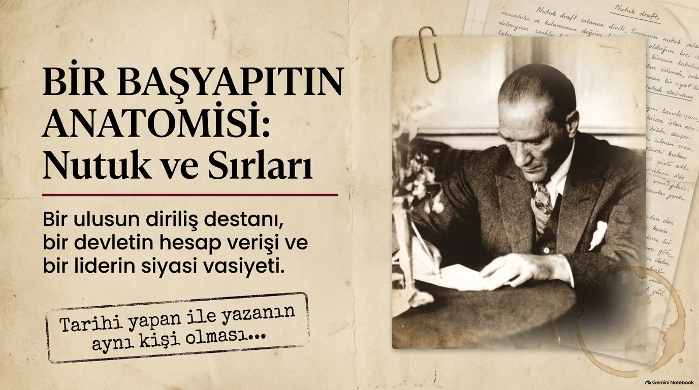
Nutuk ve siyasi vasiyet temasına görsel giriş.
“Ey Türk Genci” değil, “Ey Türk Gençliği”
Gençliğe Hitabe’nin müsveddeleri bu açıdan son derece ilginçtir.
Afet İnan’ın aktardığı incelemelerde Mustafa Kemal’in başlangıçta “Ey Türk Genci” yazdığı, sonra “genci” kelimesini silip “gençliği” biçimine çevirdiği görülür. Aynı müsveddelerde başka küçük düzeltmeler de vardır.
Bir kelime değişikliği gibi görünür. Fakat anlam büyüktür. “Türk genci” tek bir kişiye seslenebilir. “Türk gençliği” ise kuşaklar boyunca devam eden bir topluluğu tarif eder.
Müsveddenin sonunda Mustafa Kemal’in başlayıp tamamlamadığı başka bir cümle de vardır. Bu taslakta bağımsızlık ve Cumhuriyet’in, gücünü ülküsünden ve kendi iç kaynaklarından alan Türk evlatlarının elinde korunacağı fikri yer alır. Son biçimde bu cümle çıkarılmıştır.
Sonuçta kalan metin çok daha sert ve çok daha yalındır. Görev tanımlanır. Koşullar tarif edilir. Ve mazeret alanı neredeyse tamamen kaldırılır.
Hitabenin merkezinde “Atatürk’ü korumak” yoktur
Gençliğe Hitabe’ye dikkatle bakıldığında çok önemli bir ayrıntı görülür.
Metnin ilk cümlesi görevi neredeyse bir askerî emir açıklığında tanımlar: Türk bağımsızlığını ve Cumhuriyet’i sürekli korumak ve savunmak.
Ardından ilginç bir yöntem kullanır. İyi günleri tarif etmez. En kötü ihtimali tarif eder. Ülke işgal edilmiş olabilir.
Ordu dağıtılmış olabilir. Millet yoksulluk ve tükenmişlik içinde bulunabilir. Üstelik tehlike yalnız dışarıdan gelmeyebilir.
Devleti yönetenlerin dahi yanlış, gafletli veya ülkenin çıkarlarıyla çelişen davranışlar içinde bulunabileceği ihtimalini metne dahil eder.
Bu nedenle Hitabe bir zafer nutkundan çok ilginç biçimde bir kriz senaryosu gibidir. Mustafa Kemal geleceğin iyi olacağını garanti etmez.
Tam tersine:
Sistem bir gün yeniden ağır bir krizle karşılaşabilir der. Ve sorumluluğu tam o durumda tanımlar. Bu Halâskâr boyunca gördüğümüz karar mantığıyla şaşırtıcı biçimde uyumludur.
Çanakkale’de bütün koşulların mükemmel olmasını beklememişti. Sakarya’da uygun olmayan koşulları yok saymamıştı.
Hitabe’de de gelecek kuşağa aynı zihinsel sertliği yükler:
Koşullar görevden kaçmanın gerekçesi değildir.
Neden özellikle gençlik?
Mustafa Kemal’in gençliğe güveni 1927’de birden ortaya çıkmış değildir.
1919’a ait aktarımlarda, geleceğin genç kuşaklara bırakılacağını ve umudunun gençlikte olduğunu söyler. 1924’te ise çok daha bilinen bir ifadeyle yeni kuşağa Cumhuriyet’in gelecekteki sorumluluğunu verir: Cumhuriyet’i mevcut kuşak kurmuştur; onu yükseltecek ve devam ettirecek olan genç kuşaktır.
Buradaki “gençlik” yalnız yaş kategorisi olarak okunmamalıdır.
Atatürk’ün farklı konuşmalarında gençlikle birlikte tekrar tekrar şu kavramlar görünür:
eğitim, kültür, fikir özgürlüğü, çalışma,
cesaret, vatan sevgisi, bilim, sorumluluk.
Dolayısıyla gençlik biyolojik bir üstünlük değildir. Geleceğin henüz tamamlanmamış insanıdır. Tam da bu nedenle eğitilebilir. Düşünebilir.
Eskinin alışkanlıklarını yeniden değerlendirebilir. Ve kendisine devredilen sistemi bir sonraki kuşağa taşıyabilir.
1919’da “geleceğin ışık saçan çiçekleri” olarak gördüğü gençlik, 1927’de artık doğrudan Cumhuriyet’in emanetçisidir.
Hitabe bir itaat metni mi?
İlk bakışta Gençliğe Hitabe son derece buyurgan bir metindir. “Vazifen” der. “Koruyacaksın” der. Koşullar ne kadar kötü olursa olsun sorumluluğun devam edeceğini söyler.
Fakat bunu basit anlamda:
“Devlete her durumda itaat et.” biçiminde okumak güçtür.
Çünkü metnin kendisi iktidarda bulunan kişilerin dahi yanılabileceği, hatta Cumhuriyet’in temel çıkarlarıyla çatışabilecek davranışlar gösterebileceği ihtimalini içerir.
Bu, son derece radikal bir noktadır. Cumhuriyet ile o anda iktidarı kullanan kişiler aynı şey değildir. Devlet yöneticisi geçicidir. Makam geçicidir.
Kuşaklar geçicidir. Temel olan bağımsızlık ve Cumhuriyet’tir. Dolayısıyla Hitabe’nin sadakat anlayışı kişiye değil, ilkeye yönelmiştir.
Tam burada 1926’daki sözün anlamı yeniden ortaya çıkar:
Mustafa Kemal’in bedeni yok olabilir. Cumhuriyet bununla birlikte yok olmamalıdır.
Afet İnan’ın anlattığı gece
Gençliğe Hitabe’nin ortaya çıkışıyla ilgili en etkileyici tanıklıklardan biri Afet İnan’a aittir.
İnan, Mustafa Kemal’in metni 1927 yazında yakın çevresindeki bir gruba ilk kez okuduğunu anlatır.
O akşam Mustafa Kemal’in Cumhuriyet’in geleceği üzerinde özellikle durduğunu; tarih artık yazıldığına göre geleceğin Cumhuriyet’e inanan, onu koruyan ve yaşatacak olanlara bırakılması gerektiğini söylediğini aktarır.
Metni bitirdiğinde duygulandığını ve gözyaşlarını saklayamadığını da belirtir. Fakat aynı anlatıdaki başka bir ayrıntı belki daha değerlidir.
İnan’a göre Mustafa Kemal kendisini öven sözlerden çok gelecekte yapılacaklarla ilgileniyordu. Gençlerin yetiştirilmesini, onlara bilim ve bilgiyi temel alan düşünceler verilmesini ve özgür fikirli insanların yetişmesini vurguluyordu.
Böyle bakıldığında Gençliğe Hitabe’nin arkasında yalnız vatansever duygu yoktur. Eğitim projesi vardır. Cumhuriyet’i koruyacak kuşağın yalnız cesur olması yetmez. Düşünebilmesi gerekir.
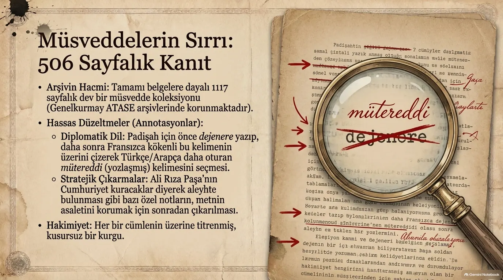
Müsvedde ve metin oluşum sürecine ilişkin görsel not.
Cumhuriyet’i emanet etmek, dondurmak değildir
Burada önemli bir ayrım gerekir. Bir şeyi korumak, onu hiç değiştirmemek anlamına gelebilir. Fakat Mustafa Kemal’in başka sözleri bu yorumu zorlaştırır.
Utkan Kocatürk’ün derlediği metinlerde Mustafa Kemal, Cumhuriyet’in kendi şahsıyla var sayılmasının büyük hata olduğunu; Cumhuriyet’in milletin malı olduğunu ve gelecek kuşakların elinde yükselmeye devam etmesi gerektiğini belirtir.
Daha da çarpıcı bir anlatı 1933’e tarihlenir.
Hamdullah Suphi Tanrıöver tarafından aktarılan sözde Mustafa Kemal iki ayrı Mustafa Kemal’den söz eder.
Birincisi:
et ve kemikten, geçici insan. İkincisi ise “ben” değildir. “Biz”dir.
Memleketin farklı yerlerinde yeni fikir, yeni hayat ve büyük ülkü için çalışan insanlardır.
Bu anlatının ulaştığı düşünce çok açıktır:
Kalıcı olan kişi değil, devam eden düşünce ve çalışma topluluğudur. Halâskâr’ın bütün anlatısı açısından bundan daha uygun bir kapanış bulmak zordur. Çünkü Navigator Mustafa Kemal’i olağanüstü yapan şeyleri araştırdı.
Ama Mustafa Kemal’in kendi cevabı sonunda kişiyi tekrar geri plana iter:
“Ben değil, biz.”
Bursa 1933: önemli ama dikkatli kullanılmalı
Bu bölümde daha önce kullanmayı düşündüğümüz “Bursa Nutku” konusunda özellikle dikkatli olmamız gerekir.
Şubat 1933’te Bursa’da ezan ve kametin Türkçe okunmasına yönelik protesto yaşandığı kesindir. Atatürk 5 Şubat’ta Bursa’ya geldi ve 6 Şubat’ta Anadolu Ajansı aracılığıyla resmî bir açıklama yaptı. Kocatürk’ün kaynakçalı günlüğünde kayıtlı bu açıklamada meselenin esasen din değil dil olduğu, dinin siyasete ve tahrike araç yapılmasına müsamaha gösterilmeyeceği ve Türk milletinin millî dili ile millî benliğinin esas kalacağı belirtilmektedir.
Ryan Gingeras da aynı olayı inceler; küçük bir grubun Türkçe ezan uygulamasına karşı protestosundan, tutuklamalardan ve Cumhuriyet yönetiminin olayı reformlara yönelik bir gerici tepki olarak değerlendirmesinden söz eder.
Ancak bugün internette “Bursa Nutku” adıyla dolaşan ve “Türk genci, inkılapların ve rejimin sahibi ve bekçisidir…” biçiminde başlayan uzun metin, şu anda elimizdeki güçlü kaynak setinde Atatürk’ün 5–6 Şubat 1933 tarihli doğrulanmış konuşması olarak yer almıyor.
Bu nedenle Halâskâr’da onu Atatürk’ün tartışmasız ve kelimesi kelimesine sözü gibi kullanmamız doğru olmaz.
Tam tersine bu, Navigator için güzel bir “Kaynak nasıl okunur?” örneği olabilir:
Bursa olayı gerçektir. Atatürk’ün Bursa’ya gelişi gerçektir. Resmî açıklaması belgelidir. Fakat daha sonra yaygınlaşan metnin belge statüsü ayrı bir sorudur.
Aynı nedenle daha önce düşündüğümüz “intikamcı olunuz” ifadesini de mevcut kaynaklarımız doğrulamadığı için Atatürk’e doğrudan alıntı olarak yazmamalıyız.
Bu tutum Halâskâr’ın güvenilirliğini güçlendirir. Çarpıcı olmak için şüpheli söze ihtiyacımız yok. Doğrulanmış metinler zaten yeterince çarpıcıdır.
Gençliğin görevi: duyarlılık kadar hukuk
1933’te başka bir olay, Atatürk’ün gençliğe bakışındaki önemli dengeyi gösterir.
Razgrad’daki olayları protesto amacıyla gençlik gösterileri yapılmış ve izinsiz gösteri nedeniyle soruşturma başlatılmıştı.
Mustafa Kemal Türk Talebe Birliği yöneticilerine gönderdiği telgrafta gençliğin çalışkan, duyarlı ve milliyetçi yetişmesini istediğini belirtir.
Fakat hemen ardından ikinci bir ilke koyar:
Gençlik faaliyetlerinde Cumhuriyet kanunlarına ve devletin usul ve kurallarına uymalıdır; hükûmetin millî meselelerde görevini bildiğine ve adli kurumların adaletine güvenmelidir.
Bu metni Gençliğe Hitabe ile yan yana okumak önemlidir.
Hitabe:
En kötü koşulda bile sorumluluktan kaçma der.
1933 telgrafı:
Sorumluluk adına hukuku yok sayma demektedir. Böylece görev, kontrolsüz öfke veya sürekli sokak seferberliği anlamına gelmez. Cumhuriyet’in korunması aynı zamanda Cumhuriyet’in hukuk düzeninin korunmasıdır.
Bu nüans, “gençlik = her durumda tepki veren güç” şeklindeki kaba yorumdan çok daha olgun bir tablo ortaya çıkarır.
“Bütün ümidim gençliktedir” ama gençlik neyle donatılmalıdır?
Atatürk’ün gençliğe güvenini yalnız romantik bir sevgi olarak okumamak gerekir. Gençlikten ağır beklentileri vardır. Çalışmalıdır. Öğrenmelidir.
Fikir sahibi olmalıdır. Cesur olmalıdır. Bağımsızlığı savunmalıdır. Ama aynı zamanda akıl ve bilgiyle hareket etmelidir.
1921 tarihli eğitimle ilgili sözlerinde milletin yalnız silahla değil “kafasıyla da mücadele” etmek zorunda olduğunu söyler; çocukların öğrenimini tamamlamak için ailelerden fedakârlık ister.
Bu, Halâskâr’ın 04. bölümünde gördüğümüz Mustafa Kemal ile tam bir süreklilik gösterir. Kendisini kitapla, yabancı dille, not alarak,
tartışarak, tecrübeyle yetiştiren insan, geleceğin Cumhuriyetini de eğitilmiş zihinlere emanet etmektedir.
Gençliğe bıraktığı gerçek miras yalnız bir görev değildir. O görevi yapabilecek kapasiteyi geliştirme zorunluluğudur.
Cumhuriyet neden bir “emanet”tir?
“Emanet” sözcüğü bazen yanlış biçimde pasif anlaşılır. Bir şeyi teslim alırsınız. Korursunuz. Aynı şekilde bir sonrakine verirsiniz.
Fakat Mustafa Kemal’in Cumhuriyet tasavvuru bundan daha dinamiktir.
1924’te gençliğe yönelik sözünde yalnız Cumhuriyet’i “devam ettirmekten” değil, onu yükseltmekten söz eder.
Bu iki fiil arasında önemli fark vardır.
Devam ettirmek:
var olanı korumaktır.
Yükseltmek:
onu daha ileri götürmektir.
Dolayısıyla her kuşak iki ayrı sorumluluk taşır:
temeli kaybetmemek ve yapıyı geliştirmek.
Bu, Cumhuriyet’in donmuş bir 1923 modeli olarak değil, belirli temel değerler üzerinde sürekli gelişen bir sistem olarak düşünülebileceğini gösterir.
Liderden ilkeye
Mustafa Kemal’in kişisel ölüm fikriyle Cumhuriyet’in sürekliliğini ayırması tekrar tekrar karşımıza çıkar.
İzmir suikast girişimi sonrası söylediği söz buna bir örnektir. “İki Mustafa Kemal” anlatısı başka bir örnektir.
1929’a tarihlenen bir başka ifadede ise onu görmenin fiziksel yüzünü görmek anlamına gelmediğini, düşüncelerinin ve duygularının anlaşılmasının yeterli olduğunu söyler.
Bu sözleri birlikte düşündüğümüzde ilginç bir geçiş görürüz:
beden → fikir → kurum → kuşak. Beden sona erer. Fikir aktarılır. Fikir kuruma dönüşür.
Kurum da ancak yeni kuşak onu yeniden üretirse yaşar. Bu nedenle Atatürk’ün kalıcı olma iddiası biyolojik değildir. Kurumsaldır.
Ve daha da önemlisi:
aktarımsaldır.
Fakat burada büyük bir tehlike vardır: kişiyi korurken yöntemini öldürmek
Bir lider öldüğünde toplumların sık yaptığı bir şey vardır. Karmaşık insan basitleştirilir. Sözleri sloganlaşır. Fotoğrafı sembolleşir.
Kararlarının arkasındaki düşünme süreci unutulur. Sonra geriye kişinin adı kalır fakat yöntemi kaybolur. Halâskâr’ın bütün amacı bunun tersini yapmaktır. Mustafa Kemal’in fotoğrafını çoğaltmak değil,
karar zihnini görünür kılmak.
Vamık Volkan bize çocukluk ve kişilik gelişimini anlamak için bir psikobiyografik mercek verdi.
Gawrych öğrenen, danışan, muhakeme eden ve uygulayan lideri gösterdi. Erickson komutanlık tecrübesinin genişliğini ortaya koydu. Austin Bay stratejik zamanlama ve büyük stratejiye dikkat çekti. Adnan Nur Baykal davranışları yönetim ilkelerine çevirdi.
Arnold Ludwig ise kişiyi dünya liderleri arasında karşılaştırmalı bir ölçeğe koydu.
Bütün bunlardan sonra Mustafa Kemal’i yalnız:
“çok büyük liderdi” diyerek bırakmak Halâskâr’ın en büyük başarısızlığı olurdu.
Çünkü asıl soru şudur:
Onun yaptığı gibi düşünmekten öğrenebileceğimiz ne var?
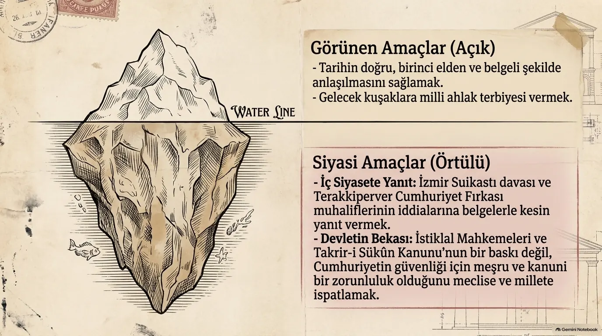
Geleceğe devredilen görev fikrine görsel metafor.
Miras dogma olabilir mi?
Burada kaynak kullanırken ayrıca dikkatli olmamız gereken meşhur bir başka metin vardır.
Utkan Kocatürk’ün derlemesinde Atatürk’e atfedilen “manevî miras” anlatısı yer alır. Bu metinde değişmez dogmalar bırakmadığı, temel mirasın akıl ve bilim olduğu ifade edilir.
Bu söz çok güçlüdür ve Atatürk düşüncesinin dinamik yorumuyla uyumludur.
Fakat kaynak zinciri doğrudan resmî bir konuşma tutanağına değil, daha sonraki aktarımlara dayanmaktadır.
Dolayısıyla bunu Navigator’da kullanabiliriz; fakat birincil metin statüsündeki Nutuk veya resmî demeçle aynı ağırlıkta göstermemeliyiz.
Yine aynı ilkeye dönüyoruz:
Atatürk’ü güçlü göstermek için kaynakların belirsizliklerini gizlemeye gerek yoktur. Akademik dürüstlük anlatıyı zayıflatmaz. Güçlendirir.
Nutuk’un belki en radikal tarafı: gelecek garantili değildir
Gençliğe Hitabe’yi yüzeysel okuduğumuzda güçlü, hamasi bir metin görebiliriz.
Daha dikkatli okuyunca başka bir şey belirir:
geleceğin kırılganlığı.
Mustafa Kemal 1927’de Cumhuriyet henüz dört yaşındayken geleceği güvence altında varsaymıyor.
Yeni sistem yeniden tehdit edilebilir. Ekonomik güçlükler olabilir. Dış düşman olabilir. İçeride yanlış kararlar olabilir.
Toplum yorgun olabilir. Hatta devlet mekanizmasının kendisi sorun üretebilir.
Böylece Cumhuriyet:
bir kere kazanılmış ve sonsuza kadar otomatik yaşayacak ödül değil, her kuşağın yeniden taşıması gereken sorumluluk hâline gelir. Bu nedenle Hitabe’nin en güçlü tarafı “tehlike” değildir. Sorumluluğu koşullardan bağımsızlaştırmasıdır.
Atatürk’ün ölümden önce çözmeye çalıştığı en zor problem
Büyük liderlerin karşılaştığı son stratejik problem çoğu zaman budur:
Kendilerinin yerini ne alacak? Başka bir büyük lider mi? Hanedan mı? Ordu mu?
Parti mi? Kurumlar mı? Yoksa bilinçli yurttaş mı?
Mustafa Kemal’in farklı dönemlerdeki sözlerini yan yana koyduğumuzda cevabının giderek şahıstan topluma kaydığı görülür.
Cumhuriyet milletin malıdır. Onu yükseltecek genç kuşaktır. İkinci Mustafa Kemal tek bir insan değil, “biz”dir. Nutuk’un sonunda görev gençliğe devredilir.
Bu dört düşünceyi bir araya getirdiğimizde ortaya çıkan model son derece güçlüdür:
Lider → millet → kurum → gelecek kuşak. Gerçek kurucu liderlik belki de burada tamamlanır. Kendisini vazgeçilmez hâle getirerek değil, kendisinden sonra da yaşayabilecek bir şey bırakmaya çalışarak.
Halâskâr’ın sonucu
Şimdi yeniden başlangıca dönelim. Mustafa Kemal’i olağanüstü yapan tek bir olay bulamadık. Tek bir çocukluk travması yok. Tek bir kitap yok.
Tek bir savaş yok. Tek bir liderlik sırrı yok. Tek bir reform yok. Tek bir “deha anı” yok.
Bunun yerine bir süreç gördük. Rumeli’deki aile kökleri. Kayıplarla çevrili çocukluk. Bağımsızlaşma.
Askerî okul. Kendi kendini yetiştirme. Okuma. Not alma.
Fransızca. Arkadaşlarla tartışma. Küçük birlikler. Yenilgiler.
Çanakkale. Kafkasya. Suriye. Sakarya.
Büyük Taarruz. Meclis. Cumhuriyet. Hukuk.
Eğitim. Ekonomi. Diplomasi.
Ve bütün bunların içinde tekrar eden bir çalışma biçimi:
öğrenmek, gerçekliği görmek, karar vermek, insanları örgütlemek, uygulamak ve yeniden öğrenmek.
Arnold Ludwig’in araştırması bu hayatı başka liderlerin yanına koyduğunda Atatürk 31 puanla PGS örnekleminin en yüksek değerine ulaştı.
Ama Halâskâr’ın son cümlesi “Atatürk birinciydi” olmamalıdır. Bu yalnız sonuçtur.
Daha önemli olan onun kendi hayatının sonunda işaret ettiği yöndür:
**Kendisinden sonrakilerin görevi Mustafa Kemal’i tekrar etmek değildir.
Onun bıraktığı bağımsızlık ve Cumhuriyet sorumluluğunu, kendi zamanlarının gerçekliği içinde yeniden taşıyabilmektir.**
Bir insan geçicidir. Bir lider geçicidir. Bir kuşak geçicidir. Kalan şey, ancak yeni kuşaklar onu anlayıp yeniden üretirse kalabilir.
Bu nedenle Halâskâr’ın sonunda başlangıçtaki “kurtarıcı” kavramı da değişir. 1919’da kurtarıcıya ihtiyaç vardı. 1927’de görev artık gençliğindi.
1933’te “ikinci Mustafa Kemal” artık tek kişi değildi:
bizdi.
Ve belki bütün Navigator’ın tek cümlelik özeti budur:
Çünkü en kalıcı zafer, insanların sonsuza kadar bir kurtarıcı beklemesi değil;
kendi bağımsızlıklarını, Cumhuriyetlerini, akıllarını ve sorumluluklarını koruyabilecek hâle gelmeleridir.
KAYNAKLAR
Bu bölümün kaynakları
1. *Mustafa Kemal Atatürk, Nutuk***, özellikle 20 Ekim 1927’de okunan son bölüm ve Gençliğe Hitabe. Bağımsızlık ve Cumhuriyet’in Türk gençliğine emanet edilmesi ve olabilecek en ağır koşullar altında dahi görevin devam ettiği fikri için birincil kaynak.
2. Ali Güler, Nutuk’tan Dersler: Nutuk ve Sırları. Nutuk’un 15–20 Ekim 1927 arasında altı günde toplam 36 saat 31 dakikada okunması; hazırlık süreci, Gençliğe Hitabe’nin son bölüm oluşu, Afet İnan’ın ilk okunuşa ilişkin tanıklığı ve Hitabe müsveddelerindeki düzeltmeler için.
3. Afet İnan, “Atatürk Gençliğe Hitabesini İlk Defa Nasıl Okumuştu?” ve Büyük Nutuk’un müsveddelerine ilişkin anıları. Mustafa Kemal’in 1927 yazında Hitabe’yi çevresindekilere okuması, geleceği Cumhuriyet’e inananlara emanet etme düşüncesi ve gençliğin bilim, bilgi ve özgür fikirle yetiştirilmesine ilişkin anlatılar için.
4. Utkan Kocatürk, Atatürk’ün Fikir ve Düşünceleri, Atatürk Araştırma Merkezi, 1999. 1919’dan 1930’lara gençlik, Cumhuriyet, bağımsızlık, eğitim, fikir özgürlüğü ve gelecek kuşaklara ilişkin sözlerin kaynaklı derlemesi için.
5. Utkan Kocatürk, Doğumundan Ölümüne Kadar Kaynakçalı Atatürk Günlüğü. 1927 Nutuk kronolojisi; Şubat 1933 Bursa olayları; Nisan 1933 Razgrad protestoları sonrasında gençliğe gönderilen telgraf ve Atatürk’ün farklı tarihlerdeki resmî faaliyetlerinin kontrolü için.
6. Utkan Kocatürk, Atatürk. İzmir suikast girişimi sonrasında Mustafa Kemal’in kendi kişisel varlığı ile Cumhuriyet’in sürekliliğini ayırdığı açıklama; Gençliğe Hitabe ve Cumhuriyet’in gelecek kuşaklara devri için.
7. Hamdullah Suphi Tanrıöver’in aktardığı “İki Mustafa Kemal” anlatısı, Utkan Kocatürk derlemelerinde. Geçici bireysel Mustafa Kemal ile ülkenin farklı yerlerinde yeni fikir ve büyük ülkü için çalışan kolektif “biz” arasındaki ayrım için. Bu, doğrudan stenografik bir devlet belgesi değil, tanıklık kaynağı olarak değerlendirilmelidir.
8. Ryan Gingeras, Eternal Dawn: Turkey in the Age of Atatürk, Oxford University Press, 2019/2020. Şubat 1933 Bursa protestosunun tarihsel bağlamı ve Cumhuriyet reformlarına karşı toplumsal direncin daha geniş çerçevesi için.
9. Rıfat N. Bali, Atatürk as Viewed Through the Eyes of American Diplomats, 2010; Charles H. Sherrill’in Bursa olayına ilişkin çağdaş gözlemi. Olayın dönemin yabancı diplomatik gözlemindeki yansıması için.
10. Kaynak notu: İnternette “Bursa Nutku” adıyla dolaşan uzun metin ile “intikamcı olunuz” ifadesi, mevcut kaynak setimizde Atatürk’e ait tartışmasız birincil belge olarak doğrulanamamıştır. Bu nedenle Halâskâr ana anlatısında doğrudan Atatürk alıntısı olarak kullanılmaması daha doğru olacaktır.